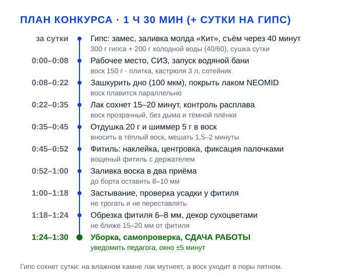
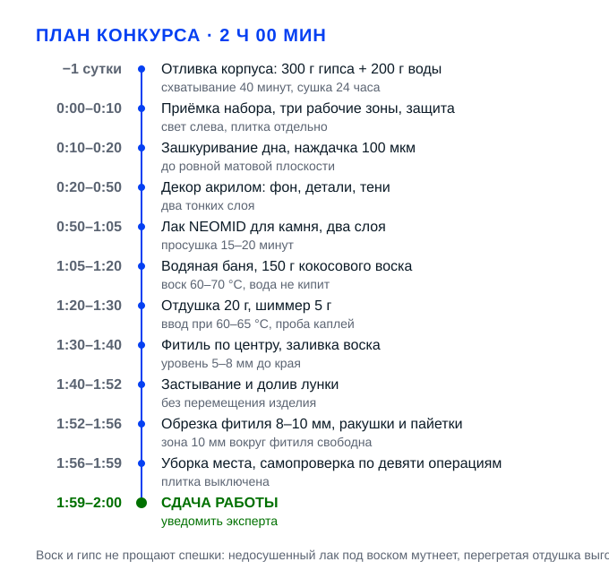
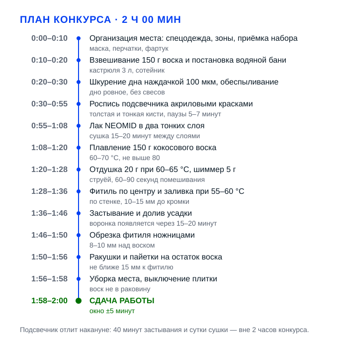

Изготовление ароматических свечей (ФВ)
Задания ниже — официальные файлы «Абилимпикс» (источник: abilympics-russia.ru), разложенные по категориям. Решения написаны по тексту задания, регламенту и критериям оценки; в них указано, что именно проверяет эксперт.
Школьник
14–16 лет, базовый уровень заданияВ официальном файле категории не разделены отдельными разделами — приводим задание целиком; различия по категориям смотрите в таблице модулей.
Пошаговое решение
Конкурсное задание школьников укладывается в полтора часа, но начинается за сутки: гипсовый подсвечник в форме кита отливают заранее, потому что гипс сохнет ровно сутки, и только по сухому камню лак ложится ровно, а воск не проступает тёмным пятном. На площадке участник проходит восемь операций подряд: шкурит дно наждачкой 100 мкм, покрывает изделие акриловым лаком для камня, растапливает 150 граммов кокосового воска на водяной бане, вносит 20 граммов отдушки и 5 граммов шиммера, ставит вощеный фитиль, заливает воск, обрезает фитиль и украшает свечу сухоцветами в морской теме. Главный риск не в сложности приёмов, а во времени: воск плавится медленно, поэтому баню ставят первой, а шкурение и лакировка идут параллельно. Второй риск — температура: перегретый воск теряет аромат и темнеет, холодный не заполняет чашу.

Задача 1. Отлить гипсовый подсвечник за сутки до конкурсаПодготовительный этап · вне конкурсных 1 ч 30 мин
Подсвечник — это фундамент всей работы: свеча заливается прямо в него, и всё, что случится с гипсом сейчас, участник получит на защите. По конкурсному заданию форма «Кит» заливается за сутки, потому что гипс должен полностью просохнуть: на влажном камне лак не держится, а воск уходит в поры неровным пятном. На этом этапе участник работает без таймера, но именно здесь решается, будет ли у него к конкурсу целая ровная заготовка или крошка с раковинами, которую уже не спасти.
Действие 1.1. Отмерить гипс и воду по пропорции 40/60
Шаг 1.1.1
Ставим на ровный стол электронные весы и отсыпаем в сухую чашу для замешивания ровно 300 граммов гипса Friplast Aqua — это норма на одно изделие, указанная в перечне оборудования. Обнуляем тару до того, как начать сыпать, и не трогаем чашу с весов во время отвешивания: гипс лёгкий, пылит, и от лишнего движения стрелка уходит на десять-пятнадцать граммов. Сыплем не из пакета целиком, а ложкой, чтобы попадать в нужный вес с первого-второго подхода.
Пропорция из задания — 40 % воды и 60 % гипса, то есть на 300 граммов гипса приходится 200 граммов холодной воды. Это не пожелание, а расчёт прочности: перебор воды даёт рыхлый, крошащийся камень, недобор — густую смесь, которая не проливает тонкие детали молда и даёт раковины. Критерий оценки здесь один — целостность готового изделия, и он виден сразу, как только вы возьмёте подсвечник в руки.
На весах 300 граммов плюс-минус два, чаша сухая и чистая, в гипсе нет комков: разотрите щепоть пальцами — она должна рассыпаться, как мука. Если на стенках чаши остался схватившийся гипс от прошлого замеса, он сработает как песок в тесте и даст трещину по кромке.
Частая ошибка — сыпать «на глаз, пока не станет как сметана»: у такой смеси густота гуляет от партии к партии, и предсказать время жизни раствора невозможно. Вторая — взвешивать гипс и воду в разных ёмкостях и потом пересыпать: часть материала остаётся на стенках, и пропорция уезжает в сторону воды.
Эксперт смотрит, есть ли на столе весы и мерный стакан, а не кружка, и как участник обращается с гипсом: аккуратно ли сыплет, не поднимает ли пыль. Это видно в первые пять минут работы и запоминается на всю защиту.
Шаг 1.1.2
В отдельном мерном стакане отмеряем 200 миллилитров холодной воды — при плотности, близкой к единице, это и есть 200 граммов, требуемые по пропорции. Вода должна быть именно холодной, из-под крана после десяти минут отстоя или из бутылки: тёплая вода ускоряет схватывание гипса, и у вас останется не четыре-пять минут на заливку, а две. Стакан ставим на стол рядом с чашей, а не на край раковины, чтобы потом не искать его по всей мастерской.
Холодная вода — это единственный способ растянуть рабочее время гипсового раствора: реакция схватывания экзотермическая, и тёплая вода просто сдвигает её старт раньше. Времени на заливку молда с простукиванием уходит около трёх минут, и потеря двух из них — это гарантированные пузыри и недолитая деталь. Критерий «соответствие изделия заданию» проверяется по форме и читаемости силуэта кита.
Уровень воды в стакане совпадает с меткой 200 миллилитров, вода прозрачная, без мыльной пены и взвеси. Потрогайте стакан: он холодный. Если вода из горячего крана — дайте ей остыть, это быстрее, чем переделывать отливку.
Налить воду «примерно» и доливать потом в готовую смесь — вторая по частоте ошибка: долив в уже начавший схватываться гипс разрывает структуру, и камень получается с внутренними пустотами. Ещё одна — использовать горячую воду «чтобы быстрее размешалось»: смесь густеет прямо в чаше, и половина уходит в мусор.
Эксперта интересует, понимает ли участник, зачем нужна холодная вода: об этом он может спросить прямо на защите, и ответ «так написано» звучит слабее, чем объяснение про схватывание.
Шаг 1.1.3
Заранее готовим плоскость, на которой будет стоять молд: застелить стол газетой или клеёнкой, поставить форму «Кит» так, чтобы к ней можно было подойти с двух сторон, а рядом положить деревянную палочку и ложку для замешивания. Всё, что понадобится в следующие пять минут, должно лежать в пределах вытянутой руки: гипс схватывается независимо от того, ищете вы палочку или уже мешаете.
Гипсовый раствор живёт четыре-шесть минут, и любая беготня за инструментом съедает это время целиком. Подготовленная площадка — часть критерия организации рабочего места, который оценивается и на самом конкурсе: эксперту видно, работает участник по плану или реагирует на случайности. Кроме того, газета под молдом спасает стол от капель, которые потом придётся отскабливать.
Молд стоит устойчиво, не качается от нажатия пальцем, под ним подложка, инструмент (палочка, ложка, тряпка) разложен слева и справа от формы. Проверьте, что до молда не дотрагиваются посторонние предметы — сдвиг формы в первые минуты портит отливку.
Ставить молд на край стола или на шаткую подставку: вибрация от замешивания рядом передаётся форме, и раствор выплёскивается через борта. Вторая ошибка — начинать замес, не приготовив тряпку: капли гипса на столе схватываются за минуту и потом снимаются только с водой и ножом.
На подготовку смотрит эксперт при первом проходе по площадке: чистая подложка, разложенный инструмент и устойчивый молд — признаки того, что участник уже работал с гипсом руками, а не только читал задание.
Действие 1.2. Замешать раствор без комков
Шаг 1.2.1
Воду выливаем в чашу первой, а гипс всыпаем в неё тонкой струёй, распределяя по всей поверхности, и сразу начинаем мешать деревянной палочкой или ложкой в одном темпе, без рывков, около полутора-двух минут. Мешаем по кругу и от стенок к центру, чтобы поднимать со дна непромешанные комки. Рукой в гипс не лезем даже в перчатке — сухой гипс на коже раздражает и стягивает её.
Сыпать гипс в воду, а не воду в гипс — правило, которое даёт предсказуемую смесь: так порошок смачивается равномерно и не образует сухих гнёзд внутри. Комок, оставшийся в толще, при заливке всплывает или даёт каверну на лицевой стороне — а лицевая сторона у подсвечника одна, и спрятать дефект нечем. Аккуратность замеса прямо влияет на критерий качества поверхности.
Смесь однородная, без сухих островков и комков, по консистенции похожа на густую сметану: борозда от палочки держится пару секунд и медленно заплывает. Проведите палочкой по дну — она не должна цеплять плотный осадок.
Мешать слишком долго, «чтобы точно размешалось»: после двух-трёх минут гипс начинает густеть, и вы зальёте в молд уже схватывающуюся массу, которая не заполнит плавники. Вторая ошибка — мешать венчиком или миксером: в смесь затягивается воздух, и на поверхности остаются кратеры.
Эксперт может попросить показать консистенцию: он смотрит на след от палочки и на то, не тянется ли раствор за инструментом. Тянущаяся масса — признак перемешанного или перестоявшего гипса.
Шаг 1.2.2
Сразу после размешивания постучим чашей о стол три-четыре раза, держа её двумя руками и не наклоняя, чтобы выгнать крупные пузыри к поверхности, и снимем с краёв пену ложкой. Дальше действуем быстро и без паузы: на всё про заливку и простукивание уходит не больше трёх минут, а раствор уже начал свой отсчёт с первой секунды контакта с водой, и каждая пауза стоит вам плавника на спине кита.
Пузыри, оставшиеся в толще, выходят на лицевую поверхность уже после схватывания и оставляют мелкие раковины — их видно на светлом камне, и они же ослабляют кромку. Критерий «качество изделия» оценивает поверхность целиком, а не только силуэт, поэтому две минуты на удаление воздуха окупаются сразу.
На поверхности смеси нет крупных пузырей, она блестит ровно, у стенок нет застоявшейся пены. Постучите чашей ещё раз: если пузыри продолжают подниматься, дайте смеси постоять двадцать секунд, но не больше.
Стучать чашей сильно и наклонять её: смесь выплёскивается на стол, а уровень в чаше падает — на молд может не хватить. Вторая ошибка — снимать пену пальцем: руки в гипсе, а снятая пена всё равно возвращается на поверхность отливки.
Эксперт смотрит на поверхность готового подсвечника в конце: мелкие точки-раковины он отличает от декоративных включений и говорит о них прямо, а на защите может уточнить, сколько раз вы простучали чашу перед заливкой.
Действие 1.3. Залить молд «Кит» и выгнать воздух
Шаг 1.3.1
Перед заливкой быстро осматриваем молд изнутри: он должен быть сухим, чистым, без остатков прошлой отливки и без капель воды на стенках. Если форма силиконовая, проверяем, что она не вывернута и стоит в своей подставке; если жёсткая — что замок защёлкнут. Ставим молд лицевой стороной вниз и придерживаем его второй рукой на весу, чтобы не сдвинуть с подложки в момент заливки.
Капля воды на стенке молда разбавляет раствор в этом месте, и там получается рыхлая, осыпающаяся кромка. Остатки старого гипса не дают новой отливке встать ровно, и на спине кита появляется ступенька. Оценивается именно силуэт: у формы «Кит» читаются хвост и плавники, и любая потеря детали заметна.
Молд сухой на ощупь, без разводов и мусора, замок закрыт, форма стоит устойчиво и не меняет положение при лёгком нажатии на борт. Загляните внутрь на свет: в углублении хвоста не должно блестеть капель, а на стенках не должно быть белых шероховатых следов от прошлой отливки.
Мыть молд водой перед самой заливкой: вода в углублениях не успевает стечь и разжижает гипс. Вторая ошибка — ставить форму на бок, рассчитывая, что раствор сам распределится: он застынет клином, и половина изделия окажется без деталей.
Эксперт осматривает заготовку на защите снаружи и изнутри чаши: чистота внутренней полости показывает, как участник готовил форму. Следы пальцев и наплывы на дне он отмечает отдельно — их видно ещё до лакировки.
Шаг 1.3.2
Заливаем в одну точку — в самую глубокую часть формы, обычно это спина кита — тонкой ровной струёй, не прерываясь и не переливая через борт. Струя должна идти по стенке, а не падать с высоты: так раствор растекается снизу вверх и вытесняет воздух перед собой. Заполняем до самого верха, оставляя на борту ровную плоскость — это будущее дно подсвечника, по нему свеча и будет стоять.
Струя с высоты захватывает воздух, и в отливке остаются крупные полости, которые вылезают наружу после зашкуривания дна. Заливка в одну точку по стенке даёт ламинарное течение, при котором воздух уходит вверх и выходит через открытую плоскость. Ровная плоскость дна потом экономит время на шкурении — а шкурить придётся наждачкой с зернистостью 100 мкм вручную.
Форма заполнена до борта, плоскость дна ровная, без раковин и недоливов, на поверхности не видно пузырей больше булавочной головки. Проверьте, что все плавники и хвост пролиты: они заполняются последними.
Лить с высоты и быстро, чтобы «успеть»: в смесь затягивается воздух, и на дне остаются каверны. Вторая ошибка — заливать в несколько приёмов, доливая через минуту: между слоями образуется видимый шов, который проявится при зашкуривании.
Эксперт смотрит на дно и на плоскость борта: по ним видно, заливал участник спокойно или торопился. Ровный борт — это ещё и удобство для лака: на кривой кромке лак собирается в каплю и потом стекает подтёком.
Шаг 1.3.3
Сразу после заливки берём молд двумя руками и «простукиваем» его: короткими частыми постукиваниями по борту и по подложке, по десять-пятнадцать секунд, пока на поверхности не перестанут лопаться пузыри. Не трясём и не наклоняем: задача — поднять воздух к открытой плоскости, а не перемешать раствор. Затем оставляем форму в покое на столе и больше её не трогаем.
«Простукивание» перечислено в задании отдельным пунктом, потому что именно оно убирает воздух из-под плавников, куда струя не достаёт. Если этого не сделать, тонкие детали получаются с пористой поверхностью и скалываются при извлечении. Кроме того, вибрация помогает раствору лучше облечь рельеф, а рельеф у формы «Кит» — это и есть декоративная ценность подсвечника.
Пузыри на поверхности перестали появляться, раствор в форме стоит спокойно, уровень не просел. Через минуту-две на поверхности появляется матовая плёнка — это начало схватывания, и с этого момента форму трогать нельзя.
Трясти молд или стучать по нему после начала схватывания: камень внутри уже держит форму, и от встряхивания он трескается по тонким местам. Вторая ошибка — поднимать форму, чтобы посмотреть, как залилось: гипс смещается, и дно получается с уступом.
Эксперт осматривает кромки и плавники готового изделия: мелкая пористость на них — прямое следствие того, простучали форму или нет. Ещё он смотрит, не осталось ли на поверхности следов от пальцев, которыми поправляли гипс.
Действие 1.4. Вынуть изделие и дать ему высохнуть сутки
Шаг 1.4.1
Оставляем залитую форму на 40 минут, как указано в задании, и в это время к ней не подходим: гипс греется, отдавая тепло, и по этому теплу видно, что реакция идёт. Через сорок минут проверяем пальцем — гипс должен быть холодным и сухим на ощупь. Вынимаем аккуратно: силиконовую форму тянем за борт равномерно с двух сторон, жёсткую раскрываем по замку, стараясь не давить на плавники.
Сорок минут — время полного схватывания по заданию; если вынуть раньше, изделие деформируется под собственным весом, и дно перестанет быть плоским. Дно — рабочая поверхность: на нём стоит свеча, и перекос в два-три миллиметра уведёт фитиль от вертикали. Ровное дно и целые плавники — то, что эксперт проверяет первым, когда берёт подсвечник в руки.
Изделие вышло целиком, без сколов, силуэт читается, дно плоское — проверьте, поставив подсвечник на стекло: он не должен качаться. На ощупь гипс холодный и уже не липнет к пальцам. Осмотрите кромку чаши по кругу: сколов быть не должно, а тонкий наплыв по линии разъёма снимается ножом за полминуты.
Доставать изделие горячим, «чтобы не ждать»: гипс в этот момент ещё мягкий, и от неосторожного движения откалывается хвост. Вторая ошибка — тянуть форму за одну сторону: она растягивается неравномерно, и на спине кита остаётся вмятина.
Эксперт проверяет заготовку на устойчивость: ставит её на стол и смотрит, не качается ли. Качающийся подсвечник — это потеря по критерию качества изделия, и залить в него свечу ровно уже не получится.
Шаг 1.4.2
После извлечения снимаем ножом или тем же наждаком тонкий облой по борту — плоский наплыв, который всегда остаётся на линии разъёма формы, — и убираем изделие сушиться на решётку или на газету в сухое место, подальше от окна и батареи, на сутки. Перевозим на конкурс завёрнутым в мягкую бумагу, в жёсткой коробке, отдельно от инструмента, чтобы не придавить в дороге.
Сутки сушки нужны не формально: в свежем гипсе остаётся свободная вода, и если покрыть его лаком на конкурсе, лак встанет пятнами, а воск уйдёт в поры неровным тёмным ореолом вокруг фитиля. Ровная поверхность и одинаковый цвет по всей чаше — это и есть критерий аккуратности, по которому оценивают готовую свечу на защите.
Через сутки подсвечник на ощупь сухой и холодный, при постукивании ногтем звук звонкий, а не глухой; цвет ровный, без тёмных влажных пятен у дна. Перед конкурсом проверьте ещё раз: влажный на вид участок оставьте досыхать.
Сушить у батареи или на солнце: гипс сохнет неравномерно, и по нему идут волосяные трещины. Вторая ошибка — везти изделие в пакете вместе с ключами и палочками: скол на борту обнаружит эксперт раньше, чем вы успеете его зашкурить.
Эксперт осматривает подсвечник в самом начале конкурса, до лакировки: сухость и отсутствие трещин он проверяет визуально и на ощупь, потому что дальше дефект уже не исправить.
Задача 2. Организовать рабочее место и запустить плавление воскаМодуль А · первые 8 минут из 1 ч 30 мин
На всё конкурсное задание школьникам отводится полтора часа, и воск — единственный элемент, который нельзя ускорить: он плавится на водяной бане медленно и требует постоянного присмотра. Поэтому первым делом ставим греться баню, а уже потом занимаемся подсвечником: пока воск доходит до нужного состояния, участник успевает зашкурить дно и покрыть изделие лаком. Эта задача про то, чтобы два процесса шли параллельно и ни один не ждал другого.
Действие 2.1. Надеть защиту и снять риски на месте
Шаг 2.1.1
Надеваем фартук, резиновые медицинские перчатки и маску — весь комплект из перечня оборудования на одного участника. Фартук завязываем так, чтобы он закрывал грудь и колени, перчатки натягиваем до запястья и расправляем между пальцами, маску — на нос и рот, а не на подбородок. Волосы убираем под резинку или заколку: открытая прядь над свечой — это не только опасно, но и заметно эксперту.
Гипсовая пыль при зашкуривании и пары отдушки при смешивании — две реальные причины, по которым в перечне стоят маска и перчатки. Кроме того, аккуратность средств защиты входит в критерий охраны труда: по правилам конкурса к работе допускаются только участники, прошедшие инструктаж и соблюдающие требования, и нарушение здесь обсуждается с главным экспертом отдельно от баллов за изделие.
Фартук застёгнут и не сползает, перчатки сидят плотно и не болтаются на пальцах, маска закрывает нос. Проверьте подвижность кисти в перчатке: она не должна мешать держать кисть и ножницы — иначе вы снимете её в самый неподходящий момент.
Работать без перчаток, потому что «так удобнее»: отдушка и лак впитываются в кожу, а горячий воск оставляет ожог, который снимет вас с задания. Вторая ошибка — надеть маску на подбородок: формально она есть, а защиты нет, и эксперт это фиксирует.
Эксперт проверяет средства защиты в первые минуты, до начала работы с материалами: смотрит на руки, на маску и на то, остаётся ли комплект на месте к концу конкурса.
Шаг 2.1.2
Осматриваем своё место до того, как что-то включить: свет должен падать слева и освещать рабочую зону без тени от собственной руки, сидеть нужно прямо, касаясь спинки стула, а расстояние от глаз до работы держим не меньше 35–40 сантиметров. Ножницы кладём на стол с сомкнутыми лезвиями и так, чтобы за них не цеплялся рукав. Материалы и инструменты в рот не берём — это прямо записано в требованиях охраны труда.
Освещение слева и посадка на 35–40 сантиметрах — не формальность: при зашкуривании мелких сколов и при обрезке фитиля глазу нужно видеть кромку, а тень от руки закрывает именно то место, где идёт работа. Сомкнутые лезвия и запрет брать материалы в рот — пункты инструкции по охране труда, за которыми следят на площадке, и они же спасают от порезов и отравления.
Свет падает слева, тень не закрывает работу, стул отрегулирован по высоте, локти лежат на столе без напряжения. Ножницы лежат сомкнутыми и ручками к себе, на краю стола нет ничего свисающего. Если сомневаетесь, включите настольную лампу — площадка это разрешает.
Сесть боком к свету и работать в собственной тени — тогда дефекты кромки остаются незамеченными. Вторая ошибка — бросить ножницы раскрытыми между дел: их не видно под салфеткой, и за них цепляются перчаткой.
Эксперт проходит по площадке и отмечает организацию места: направление света, положение инструмента, отсутствие лишнего на столе. Это оценивается как часть культуры труда.
Шаг 2.1.3
Перед включением индукционной плитки проверяем шнур и вилку на повреждения, ставим плитку на сухую ровную поверхность подальше от края стола, а руки вытираем насухо. Розетка должна быть свободной, без тройников на весу. Проверяем и посуду: кастрюля на 3 литра из нержавеющей стали должна стоять на плитке всей плоскостью дна, без перекоса. Вилку вставляем в розетку до конца, а не наполовину.
Мокрая рука и повреждённый шнур у нагревательного прибора — самая частая причина неприятностей на таких площадках, а по требованиям охраны труда неисправный инструмент подлежит замене, а не «аккуратному использованию». Индукционная плитка чувствительна к площади контакта: кастрюля, стоящая на весу или на перекошенной подставке, греется неравномерно, и воск у стенки пригорает.
Плитка стоит устойчиво, шнур не натянут и не лежит на горячей поверхности, кастрюля сидит на конфорке ровно. После включения через минуту-две на дне появляются первые мелкие пузырьки — значит, нагрев пошёл.
Включить плитку мокрыми руками или поставить кастрюлю снаружи конфорки: нагрев не запускается, вы ждёте впустую пять минут и теряете время из полутора часов. Вторая ошибка — поставить плитку на край стола, где её задевает рукав.
Эксперт обращает внимание на безопасное обращение с нагревательным прибором в течение всего конкурса: сухие руки, устойчивая посуда, шнур вне зоны нагрева.
Действие 2.2. Разложить зоны и собрать водяную баню
Шаг 2.2.1
Делим стол на три зоны и держим их до конца работы: сухая зона справа — подсвечник, наждачка, лак и кисть; горячая зона слева — плитка с кастрюлей и сотейником; зона декора в глубине стола — сухоцветы, ножницы, фитиль, шиммер и отдушка. Инструмент кладём ручками к себе, ёмкости с отдушкой и шиммером ставим подальше от нагрева, чтобы не греть их паром.
Разнесённые зоны — это не про красоту: отдушка и шиммер от тепла меняют свойства, а наждачная пыль, попавшая в воск, оставляет в отливке тёмные точки, которые уже не убрать. Кроме того, организация рабочего места входит в критерии оценки, и эксперт видит её в первом же проходе: по зонам понятно, продумал участник последовательность или работает как получится.
На столе нет ничего лишнего: у каждой группы предметов своё место, горячая зона не пересекается с сухой, сухоцветы лежат в закрытой коробочке или на салфетке. Проверьте, что до всех трёх зон вы дотягиваетесь не вставая.
Свалить всё в одну кучу у плитки: брызги воска летят на лак и на гипс, а отдушка стоит в пару и мутнеет. Вторая ошибка — положить сухоцветы рядом с наждачкой: пыль оседает на лепестках, и декор выглядит грязным.
Эксперт оценивает организацию места как отдельный критерий и отдельно смотрит, сохранился ли порядок к моменту сдачи работы. Порядок на столе он проверяет ещё раз в конце, перед сдачей работы, и сравнивает с тем, что видел на старте.
Шаг 2.2.2
Наливаем в кастрюлю на 3 литра холодную воду примерно на треть — так, чтобы опущенный сотейник погрузился в воду на два-три сантиметра, но вода не переливалась внутрь. Сотейник ставим в кастрюлю так, чтобы он держался бортами за края, а дно не упиралось в дно кастрюли: в точке контакта металл перегревается, и воск у этого места пригорает. Если сотейник всплывает, лишнюю воду сливаем ложкой.
Водяная баня нужна для того, чтобы воск не контактировал с горячей поверхностью напрямую: кокосовый воск при перегреве теряет аромат и темнеет, а при прямом нагреве на индукции схватывается коркой у дна. Вода держит температуру около 90–95 градусов и не даёт воску уйти выше. Ровный светлый цвет расплава — это и есть тот признак, по которому эксперт отличает аккуратно растопленный воск от перегретого.
Вода в кастрюле закрывает дно сотейника на 2–3 сантиметра, внутрь сотейника вода не попала, сотейник стоит устойчиво и не всплывает. Борт кастрюли сухой — конденсат не должен стекать в воск. Проверьте рукой на расстоянии: пар должен идти, но не обжигать запястье.
Налить воду так, чтобы сотейник плавал: он перекашивается, и воск затекает за борт. Вторая ошибка — поставить сотейник прямо на дно пустой кастрюли: это уже не баня, а прямой нагрев, и воск у дна подгорает за пару минут.
Эксперт смотрит на собранную баню в момент запуска: правильно ли соотношение воды и посуды, не касается ли сотейник дна. Это видно сразу и оценивается как понимание технологии.
Шаг 2.2.3
Ставим кастрюлю с водой на плитку и включаем средний режим, а не максимум: задача — довести воду до спокойного слабого кипения, при котором пузырьки поднимаются со дна, но поверхность не бурлит. Крышкой не накрываем: конденсат с крышки капает в воск, и он начинает плеваться. С этого момента баня работает всё время, пока вы занимаетесь подсвечником.
Средний нагрев даёт ровные 90–95 градусов, при которых воск плавится спокойно и не дымит. Бурное кипение перегревает расплав, отдушка улетучивается ещё до внесения, а капли конденсата в горячем воске вызывают разбрызгивание — ожог на руке в перчатке тоже ожог. Контроль над баней — часть критерия соблюдения технологии, и он не восстанавливается, если упустить момент.
Через 3–4 минуты у дна идут цепочки мелких пузырей, поверхность воды спокойная, пара немного. Кастрюля горячая на ощупь через рукав — проверяйте тыльной стороной кисти, не наклоняясь над паром. Плитку с этого момента не выключаем до конца работы с воском.
Включить максимальный режим «чтобы быстрее»: вода закипает ключом, пар идёт столбом, и дышать над такой баней нельзя. Вторая ошибка — накрыть кастрюлю крышкой и уйти к подсвечнику: конденсат обязательно попадёт в воск.
Эксперт может подойти и посмотреть на режим плитки и на поведение воды. Спокойное слабое кипение он отмечает как правильное, бурное — как нарушение. Он также смотрит, не накрыта ли кастрюля крышкой: конденсат в воске он замечает по пузырям.
Действие 2.3. Отмерить 150 граммов воска и запустить плавление
Шаг 2.3.1
Отвешиваем 150 граммов кокосового воска — норма на одно изделие — и загружаем его в сотейник. Удобнее брать воск в хлопьях или мелкими кусками: крупный монолит плавится в два раза дольше, а время на конкурсе считается минутами. Весы должны стоять на сухой зоне, а не рядом с водой, и после взвешивания их сразу убираем со стола. Хлопья берём сухой ложкой, а не рукой в перчатке.
Сто пятьдесят граммов — это объём, который заполнит форму «Кит» почти до борта с запасом на усадку; взять меньше значит получить свечу с провалом у фитиля, взять больше — перелить через край и испортить лакированную поверхность. Соответствие количества материалов заданию проверяется по остаткам: если воска ушло заметно больше нормы, эксперт спросит, куда он делся, а если меньше — увидит тонкий слой в чаше.
На весах 150 граммов плюс-минус два, воск чистый, без крошки и пыли, в сотейнике нет воды. Проверьте дно сотейника на просвет: капля воды под воском при нагреве вызовет разбрызгивание. Взвешивайте на выключенных весах, обнулив тару перед загрузкой, иначе вес уйдёт.
Брать воск «на глаз, по объёму»: хлопья лёгкие, стакан вмещает разное количество, и до нормы легко не добрать треть. Вторая ошибка — грузить воск в мокрый сотейник, который только что сполоснули. Взвешивание на глаз — самая частая причина нехватки воска к концу заливки.
Эксперт в конце конкурса смотрит на уровень воска в чаше и на остатки материала на столе: по ним видно, соблюдалась ли норма 150 граммов. Отдельно он смотрит, не осталось ли воска на стенках сотейника: там видно, сколько ушло в изделие.
Шаг 2.3.2
Опускаем сотейник с воском в горячую воду и оставляем плавиться, не накрывая крышкой и не отходя далеко. Первые две-три минуты воск просто размягчается по краям, дальше начинает идти прозрачными дорожками — в этот момент его полезно один раз перемешать деревянной палочкой, чтобы комки прогрелись равномерно. Палочку потом не выбрасываем: ею же будем смешивать отдушку.
Кокосовый воск плавится при невысокой температуре, но идёт медленно: пока он доходит, участник успевает сделать самую трудоёмкую часть работы — зашкурить дно и нанести лак. Именно за счёт этого параллельного процесса полтора часа укладываются в задание. Если поставить воск греться после лакировки, придётся ждать десять-пятнадцать минут впустую, и на декор времени уже не останется.
Воск по краям прозрачный, комков не осталось, на поверхности нет тёмной плёнки и запаха горелого. Если появился резкий запах — снимите сотейник с бани и уменьшите нагрев плитки. Проверяйте палочкой: она проходит сквозь воск без сопротивления, а на её конце остаётся прозрачная капля.
Оставить воск без присмотра и уйти в другую часть бокса: перегрев начинается незаметно, а тёмный воск уже не исправить. Вторая ошибка — мешать воск металлической ложкой, которая лежала на столе в гипсовой пыли.
Эксперт проходит мимо плитки несколько раз за конкурс и отмечает, подходит ли участник к бане и контролирует ли процесс. Если участник отошёл от бани надолго, он фиксирует это отдельно, как и любой перегрев воска.
Шаг 2.3.3
Пока воск плавится, проговариваем про себя план на остаток времени: зашкурить дно и снять пыль, нанести лак, дать ему подсохнуть, внести отдушку и шиммер, поставить фитиль, залить, дать застыть, обрезать фитиль и уложить сухоцветы. На всё задание 1,5 часа, и на декор в конце нужно оставить не меньше пяти-семи минут: именно он даёт завершённый вид. Часы держите на виду, а не в кармане: на них вы сверяете темп.
Планирование времени — отдельный критерий: эксперт видит, движется участник по этапам или зависает на одном. Самая дорогая потеря здесь — заливка в последние десять минут: воск не успевает схватиться, и сухоцветы утопают в нём, а фитиль съезжает в сторону. План, проговорённый заранее, стоит дешевле, чем переделка на глазах у комиссии.
У вас есть порядок действий и примерные отрезки времени на каждый этап. Проверьте себя по часам на столе: через пятнадцать минут после старта подсвечник должен быть зашкурен, а воск — в процессе плавления.
Начать с декора или с аромата, «пока воск холодный»: отдушка в холодный воск не распределится, а сухоцветы, уложенные раньше времени, сгорят на горячем расплаве. Вторая ошибка — оставить заливку на последние минуты.
Эксперт наблюдает за темпом: к середине конкурса у участника должно быть залакировано изделие, а к последней трети — залит воск. К концу второй трети работы свеча должна быть уже залита, а фитиль обрезан.
Задача 3. Зашкурить дно и покрыть подсвечник лакомМодуль А · минуты 8–22 из 90
Пока воск плавится на бане, участник приводит подсвечник в товарный вид: снимает наждачкой облой с дна и по линии разъёма формы, убирает пыль и наносит акриловый лак для камня. Лак закрывает поры гипса — иначе воск при заливке проступит тёмным пятном вокруг фитиля, а сам гипс будет пачкать руки. На эту задачу уходит около пятнадцати минут, и почти всё это время лак сохнет, поэтому шкурение делаем быстро и точно, а не долго и с сомнениями.
Действие 3.1. Зашкурить дно наждачной бумагой 100 мкм
Шаг 3.1.1
Кладём на стол лист наждачной бумаги зернистостью 100 мкм, как указано в перечне оборудования, и осматриваем дно подсвечника на свет. Плоскость держим двумя руками: одной прижимаем изделие к листу, второй придерживаем борт, чтобы китовый хвост не сломался от давления. Шкурим возвратно-поступательными движениями по всей плоскости, а не одним пятном: так снимается равномерно, без ступеньки посередине.
Зашкуривание убирает наплыв по линии разъёма формы и выравнивает плоскость, на которой будет стоять свеча. Неровное дно — это перекошенный подсвечник: он качается на столе, а залитый воск ложится клином, с одной стороны выше. Критерий оценки изделия включает устойчивость и аккуратность поверхности, и дно эксперт проверяет первым делом, потому что его видно снизу и оно ничем не замаскировано.
Проведите подушечкой пальца по дну: ступенек и шершавых бугров быть не должно. Поставьте подсвечник на стекло или на ровную столешницу и нажмите поочерёдно на борта — качания нет, зазор не больше миллиметра.
Шкурить, прижимая изделие одной рукой и наваливаясь на него корпусом: тонкий хвост кита откалывается, и подсвечник приходится ставить на лак с трещиной. Вторая ошибка — снимать только наплыв по кромке, оставляя выпуклость по центру: изделие качается, и это видно на защите.
Эксперт берёт подсвечник и ставит его на стол, проверяя устойчивость, а большим пальцем проводит по дну. Сколы и следы грубой шкурки он отмечает как дефект обработки.
Шаг 3.1.2
После плоскости снимаем фаску: под углом примерно в сорок пять градусов проходим наждачкой по кромке дна и по борту чаши, двумя-тремя мягкими движениями, без нажима. Затем осматриваем всю поверхность на свет под углом к окну — мелкие заусенцы по линии разъёма формы видны именно так, сбоку, а не сверху. Найденные точки снимаем той же наждачкой точечно, сложив лист вчетверо и работая уголком.
Фаска убирает острую кромку, о которую лак рвётся при первом же касании, и заусенцы, которые остаются после извлечения из молда. Без фаски лак на кромке держится тонким слоем, скалывается, и под ним обнажается светлый гипс — на защите это выглядит как скол лакового покрытия. Точечная работа уголком наждачки даёт точность, которой не добиться целым листом.
Проведите по кромке ногтем: он не цепляется, кромка гладкая, но не скруглена в палец. На свету под углом нет белых шероховатых точек и торчащих усиков по линии разъёма. Осмотрите и дно: на нём не должно остаться концентрических царапин от крупного абразива.
Снимать фаску с сильным нажимом: кромка скругляется и уходит, силуэт кита становится «замыленным». Вторая ошибка — шкурить только дно, забыв про линию разъёма на спине: заусенец остаётся, и лак ложится по нему бугром.
Эксперт смотрит изделие на свет сбоку, у окна или у лампы: именно при боковом освещении видны заусенцы и наплывы, которые не заметны при взгляде сверху.
Действие 3.2. Убрать пыль и убедиться, что гипс сухой
Шаг 3.2.1
Смахиваем гипсовую пыль сухой кистью, начиная с чаши и заканчивая дном, движениями в одну сторону, чтобы не размазывать пыль по уже очищенному. Кисть держим почти плашмя, без нажима: ворс должен снимать пыль, а не полировать поверхность. Тряпкой не протираем — влажное пятно на гипсе потом проявится под лаком матовым участком. Кисть после работы кладём на салфетку ворсом вверх, а не в лак.
Пыль на поверхности — это слой, который лак не пропитает, а поднимет: покрытие получается шершавым на ощупь и мутным на вид. Кроме того, пыль с дна попадает в лак и в кисть, и дальше вы разносите её по всему изделию. Чистая поверхность перед лакировкой — это тот шаг, который отличает ровное глянцевое покрытие от пятнистого.
Проведите по поверхности пальцем в перчатке: на чёрной перчатке не остаётся белого следа. Посмотрите на изделие против света — нет мутной вуали и разводов, поверхность ровная по цвету. Достаточно провести по чаше и по дну, а затем посмотреть на кисть: если ворс чистый, изделие готово к лаку.
Смахивать пыль влажной тряпкой «чтобы точно чисто»: вода уходит в поры, гипс набухает, и лак после высыхания отслаивается плёнкой. Вторая ошибка — дуть на изделие: пыль летит в лицо, а слюна оставляет на гипсе капли.
Эксперт осматривает поверхность перед лакировкой и после неё: мутные участки и шершавость он связывает именно с непродутой пылью и говорит об этом на защите.
Шаг 3.2.2
Проверяем, что подсвечник полностью сухой: он должен быть комнатной температуры, без холодных участков, и при постукивании ногтем звенеть, а не отдавать глухо. Если изделие везли с улицы, даём ему полежать в помещении десять минут — холодный гипс тянет влагу из воздуха и конденсатом собирает её на поверхности. Только после этого ставим его в сухую зону и готовим лак.
Акриловый лак для камня образует плёнку, которая на влажной основе не схватывается: она мутнеет, идёт белыми пятнами и при заливке воска вспучивается. Сутки сушки в задании отведены именно на это, но перевозка и холодный подоконник могут испортить результат, поэтому проверка занимает минуту и стоит дороже, чем переделка подсвечника, — а переделать его на конкурсе невозможно.
Изделие на ощупь тёплое или комнатное, без холодной «испарины»; ноготь даёт звонкий щелчок. Приложите к дну кусочек сухой салфетки на минуту — она должна остаться сухой. Салфетка должна остаться сухой и не прилипнуть к гипсу — прилипание говорит о влаге в порах.
Начинать лакировку сразу после улицы или из холодной сумки: конденсат не виден глазом, но лак на нём мутнеет уже к моменту заливки. Вторая ошибка — сушить подсвечник феном, чтобы ускорить: гипс трескается по тонким местам.
Эксперт может спросить, как участник убедился в сухости изделия. Ответ с проверкой на ощупь и по звуку он принимает, а «мне сказали, что сутки прошли» — нет.
Действие 3.3. Покрыть изделие акриловым лаком NEOMID
Шаг 3.3.1
Открываем банку с акриловым лаком NEOMID для камня, перемешиваем её палочкой две-три минуты, не взбивая, и отливаем небольшое количество в отдельную ёмкость — так в банку не попадёт гипсовая пыль с кисти. Кисть берём плоскую, средней ширины, обмакиваем на треть ворса и снимаем лишнее о край: лак должен ложиться тонким слоем, а не стекать с кисти каплями.
Лакировка закрывает поры гипса и делает поверхность моющейся — именно поэтому в перечне стоит лак для камня, а не мебельный. Тонкий слой сохнет за пятнадцать-двадцать минут, а толстый остаётся липким на час и собирает пыль: на конкурсе, где на всё полтора часа, это критично. Ровное глянцевое покрытие входит в критерий качества изделия и оценивается вместе с аккуратностью заливки.
На кисти нет капель, ворс пропитан равномерно, лак в ёмкости однородный, без сгустков и плёнки сверху. Понюхайте: резкого запаха растворителя быть не должно, лак на водной основе пахнет слабо. Капните лак с кисти обратно в ёмкость: он должен стекать ровной струйкой, а не падать комками.
Окунать кисть по рукоятку: лак стекает по ней на пальцы и на стол, а на изделии остаются потёки. Вторая ошибка — лить лак прямо из банки на изделие: слой получается неравномерным, и сохнет он вдвое дольше.
Эксперт смотрит, как участник обращается с лаком: работает ли из отдельной ёмкости, не оставляет ли банку открытой. Открытая банка с лаком на столе к концу конкурса — заметная деталь.
Шаг 3.3.2
Наносим лак в такой последовательности: сначала внутренняя чаша — от центра к стенкам, затем борт и внешняя поверхность сверху вниз, в последнюю очередь дно. Ведём кистью в одном направлении, не возвращаясь на уже пройденный участок, пока лак не схватился: возврат даёт полосы и поднимает слой. В углублениях у плавников промакиваем кистью без нажима, чтобы лак не собирался лужей.
Внутренняя чаша — рабочая поверхность: в неё заливается воск, и если лак там не лёг, воск впитается в гипс и оставит тёмный ореол. Внешняя поверхность отвечает за внешний вид и за то, что изделие не пачкает руки при демонстрации. Последовательность «изнутри наружу» нужна потому, что при обратном порядке вы будете касаться уже покрытых мест рукой и оставите отпечатки.
Поверхность блестит ровно, без полос и капель под кромкой. Поднимите изделие на уровень глаз и посмотрите на борт на свет: не должно быть непрокрашенных матовых участков, они светлее остальных. Матовые участки ищите на борту и в углублениях у плавников — там кисть чаще всего не достаёт.
Красить только снаружи, оставив чашу сухой: воск проступает через поры пятном у фитиля, а гипс под воском темнеет. Вторая ошибка — водить кистью туда-сюда по схватывающемуся лаку: он скатывается в катышки и сохнет пятнами.
Эксперт смотрит чашу изнутри при заливке: непрокрашенные участки он видит по тому, как воск ложится к стенке, и отмечает это как нарушение технологии.
Шаг 3.3.3
Ставим подсвечник сохнуть в сухую зону, дном вниз, на подложку, и не трогаем его пятнадцать-двадцать минут — за это время лак перестаёт липнуть. Пока он сохнет, возвращаемся к бане: проверяем воск, снимаем пену, при необходимости убавляем нагрев. Второй слой наносим только если первый лёг тонко и время позволяет; на конкурсе чаще достаточно одного аккуратного слоя, чем двух наспех.
Лак, который трогают до отлипа, остаётся в отпечатках пальцев, а они видны на глянце и не убираются. Пауза в двадцать минут — это не простой: именно в это время воск доходит до нужного состояния, и два процесса сходятся в одной точке, откуда начинается заливка. Такое распределение времени — прямое следствие того, что на всё задание отведено полтора часа.
Через пятнадцать минут аккуратно коснитесь борта тыльной стороной пальца в перчатке: лак не липнет и не тянется нитями. На поверхности нет пылинок и следов ворса от кисти. Пылинки, севшие на свежий лак, снимать нельзя: подождите полного отлипа и только потом смахните кистью.
Наносить второй слой на недосохший первый: нижний не успевает отдать растворитель, и покрытие мутнеет изнутри. Вторая ошибка — сушить под лампой или феном: акрил вспучивается пузырями, и исправить это уже ничем нельзя.
Эксперт проверяет лаковое покрытие в момент заливки воска и после застывания: липкий или мутный лак он отмечает отдельным пунктом, потому что это видно на готовом изделии.
Задача 4. Довести воск, внести аромат и шиммер, установить фитильМодуль Б · минуты 22–52 из 90
Самая ответственная часть задания: воск из жидкого и горячего превращается в готовую свечу. Здесь важно не перегреть расплав, вовремя снять его с бани, внести двадцать граммов отдушки и пять граммов шиммера так, чтобы они распределились, а не осели на дно, и поставить фитиль строго по центру. Ошибка на любом из этих шагов видна на готовом изделии: мутный воск, тёмные точки, кривой фитиль. На всё про всё — около получаса, и большая часть этого времени уходит на ожидание и контроль, а не на активные действия.
Действие 4.1. Довести воск до однородного расплава
Шаг 4.1.1
К моменту, когда подсвечник покрыт лаком, воск должен быть полностью жидким: подходим к бане, поднимаем сотейник за борт и смотрим на просвет — расплав прозрачный, без комков и мути, по стенкам не остаётся нерасплавленных хлопьев. Мешаем палочкой со дна, поднимая нижние слои наверх: именно у дна скапливается самая холодная часть. Если воск ещё не дошёл, убавляем нагрев, но не уходим.
Недоплавленный воск ведёт себя непредсказуемо: при заливке в чашу он схватывается комками, между ними остаются воздушные полости, и после застывания поверхность получается бугристой. Кроме того, нерасплавленные хлопья держат часть отдушки внутри, и аромат распределяется неравномерно — при горении вы почувствуете это как резкий запах в одну сторону. Однородность расплава эксперт видит ещё до заливки, когда подходит к бане.
Поднимите палочку над сотейником: воск стекает ровной струёй, на палочке нет сгустков. На поверхности нет тёмной плёнки и запаха горелого. Если есть кулинарный термометр — расплав должен быть в пределах 60–70 градусов.
Оставлять воск на бане без перемешивания: у дна он темнеет и пригорает, а тёмные крупинки потом плавают в готовой свече. Вторая ошибка — считать воск готовым по виду сверху, не поднимая нижние слои палочкой.
Эксперт подходит к бане и смотрит на расплав: прозрачность и ровный светлый цвет он отмечает как правильный, а тёмные вкрапления и мутность — как нарушение температурного режима.
Шаг 4.1.2
Снимаем пену и всплывшие частицы: ложкой или палочкой аккуратно отводим пенку к краю и снимаем её, не перемешивая обратно в расплав. Если на поверхности плавает тёмная корка, снимаем её тем же способом. Затем снова проходим палочкой по дну, проверяя, что осадка нет. Сотейник держим над кастрюлей, чтобы капли воска падали обратно в баню, а не на стол.
Пенка на поверхности — это пузыри воздуха и всплывшие примеси; если оставить их, они окажутся у верхней кромки готовой свечи, и поверхность будет рябой. Тёмная корка — след перегрева, и её частицы в застывшем воске выглядят как грязь, хотя это всего лишь подгоревший воск. Чистота расплава напрямую влияет на критерий внешнего вида изделия.
Поверхность расплава ровная, блестящая, однородного светлого оттенка, без серых и тёмных точек. Осадка на дне нет — палочка проходит до металла свободно. Снятую пенку не выбрасываем в раковину: она застынет и забьёт слив, поэтому складываем её в салфетку.
Снимать пену вместе с большим количеством воска: уйдёт объём, и его не хватит на полную чашу. Вторая ошибка — мешать расплав, чтобы размешать корку обратно: она не растворяется, а разбивается на мелкие тёмные точки.
Эксперт проверяет поверхность расплава перед заливкой: по ней он сразу видит, следил ли участник за температурой, или баня работала сама по себе. Тёмные вкрапления в расплаве он видит сразу и связывает их с перегревом или с плохо промытой посудой.
Шаг 4.1.3
Снимаем сотейник с бани и ставим его на сухую подложку в сухую зону, а не на мокрую тряпку у раковины. Протираем наружные стенки и дно сотейника насухо салфеткой: на них висит конденсат и капли воды с бани. Плитку пока не выключаем — при необходимости расплав можно будет подогреть, но держим её на минимальном режиме и не оставляем надолго без присмотра.
Вода, попавшая в горячий воск, мгновенно превращается в пар и выплёскивает расплав — это ожог и испорченное изделие одновременно. Конденсат снаружи сотейника как раз и стекает по стенке внутрь при наклоне. Кроме того, на снятом с бани сотейнике удобно контролировать остывание: за две-три минуты воск доходит до температуры внесения отдушки, и этот момент нельзя пропустить.
Стенки и дно сотейника сухие на ощупь через салфетку, на подложке под ним нет капель. Воск в сотейнике спокойный, без пузырей и потрескивания. Через две минуты после снятия с бани воск у края начинает мутнеть — это и есть момент, когда пора вносить отдушку.
Ставить горячий сотейник на мокрую поверхность: образовавшийся пар срывает капли в расплав, и воск начинает плеваться. Вторая ошибка — наклонять сотейник, чтобы посмотреть уровень, не проверив, сухая ли кромка.
Эксперт обращает внимание на аккуратность работы с горячей посудой: сухая подложка, отсутствие капель на столе. Это часть требований охраны труда, а не только эстетика.
Действие 4.2. Внести двадцать граммов отдушки
Шаг 4.2.1
Даём воску постоять на подложке две-три минуты и проверяем температуру ладонью, поднеся её к борту сотейника на десять сантиметров: тепло должно чувствоваться, но не обжигать. Отмеряем 20 граммов отдушки — норма на одно изделие — и вливаем её тонкой струйкой по стенке, а не в центр расплава, чтобы она не упала сразу на дно одной каплей. Отдушку набираем в мерный стакан, а не льём из флакона на глаз.
Отдушка — летучая смесь: при слишком горячем воске часть ароматических веществ испаряется сразу, и свеча потом пахнет слабее, чем должна. Двадцать граммов на 150 граммов воска — это высокая, но заданная концентрация, и вливать её надо постепенно, иначе она не разойдётся и останется маслянистым пятном. Аромат — один из главных критериев оценки готовой свечи, его проверяют на защите.
Отдушка отмерена по весу или мерному стакану, а не на глаз. При вливании воск не вскипает и не идёт пузырями, запах ощущается ровно, без резкой спиртовой ноты. По стенке сотейника отдушка стекает ровно, без маслянистых сгустков, которые потом остаются на лакированном борту.
Вливать отдушку в кипящий воск: аромат выгорает за секунды, а брызги летят на руки и на стол. Вторая ошибка — вылить всю порцию в одну точку: она оседает на дно и при застывании даёт маслянистый слой под свечой.
Эксперт смотрит, отмеряет ли участник отдушку по весу и при какой температуре вносит. На защите он оценивает аромат уже в готовом изделии, но причины слабого запаха ему понятны заранее.
Шаг 4.2.2
Перемешиваем расплав деревянной палочкой медленными круговыми движениями от центра к стенкам и обратно, полторы-две минуты, без взбивания: палочка должна ходить в толще, а не бить по поверхности. Следим, чтобы на стенках не оставалось маслянистых дорожек от отдушки — их снимаем, проводя палочкой вдоль борта. По окончании поднимаем палочку и даём воску стечь обратно.
Отдушка не растворяется в воске мгновенно, ей нужно время и равномерное перемешивание, иначе часть аромата останется в верхнем слое и выгорит при первом же горении. Медленное движение без взбивания нужно потому, что воздух, затянутый в расплав, выходит на поверхность уже после заливки и оставляет мелкие раковины — а поверхность свечи у нас открыта и декорируется сухоцветами.
На палочке, поднятой из расплава, нет маслянистых капель — воск стекает однородной струёй. Запах чувствуется ровно по всей поверхности, без резких зон, воск остаётся прозрачным. Проведите палочкой вдоль стенки и посмотрите на неё на свет: маслянистых разводов быть не должно.
Мешать быстро и энергично, как тесто: в воск затягивается воздух, и через час на поверхности свечи вы видите сетку мелких пор. Вторая ошибка — размешать тридцать секунд и сразу заливать: отдушка не успевает разойтись и всплывает к кромке.
Эксперт наблюдает за перемешиванием: ровный темп и работа палочкой в толще — признак того, что участник понимает процесс, а не выполняет формальность.
Действие 4.3. Внести пять граммов шиммера
Шаг 4.3.1
Отвешиваем 5 граммов шиммера — норму на одно изделие — и засыпаем его в расплав, распределяя по всей поверхности, а не в одну горку. Сразу начинаем перемешивать той же палочкой, но теперь круговыми движениями в двух направлениях, тридцать-сорок секунд: частицы должны разойтись по всему объёму и держаться во взвеси. Затем даём расплаву постоять минуту, чтобы крупные частицы успели осесть, а мелкие остались в толще.
Шиммер даёт тот самый морской блеск, ради которого свечу и делают в этой компетенции: в застывшем воске он читается как перламутровая глубина. Пять граммов — норма из перечня, и превышать её нельзя: избыток частиц оседает плотным слоем на дно и закрывает низ чаши, а при горении такой слой собирает тепло. Равномерность распределения эксперт видит сразу, как только свеча застынет.
Поднимите палочку: на ней блестящие частицы по всей длине, а не только у конца. В расплаве не видно комков шиммера, поверхность мерцает ровно, без «звёзд» из слипшихся частиц. Если частицы всё-таки собрались в хлопья, значит, шиммер сырой или его слишком много — разбейте хлопья палочкой.
Сыпать шиммер на глаз, щепотками: легко превысить норму, и тогда он оседает коркой на дно, а не мерцает в толще. Вторая ошибка — мешать слишком долго: частицы, наоборот, собираются в хлопья и выпадают в осадок.
Эксперт оценивает готовую свечу на свет: ровное мерцание по всему объёму он отличает от осадка на дне и от «пятна» в одном месте. Он также смотрит, не осел ли шиммер на дно чаши в готовой свече: осадок виден как плотный блестящий слой.
Шаг 4.3.2
Проверяем распределение пробой: капаем немного расплава на светлое блюдце, ждём полминуты и смотрим, как легли частицы после схватывания. Если они собрались в одном месте или легли на дно капли, ещё раз проходим палочкой по объёму. Одновременно проверяем, что расплав не начал густеть: если он тянется за палочкой, значит, остыл ниже рабочей температуры и его надо вернуть на баню на полминуты.
Проба на блюдце — единственный способ увидеть результат до заливки: в горячем расплаве шиммер выглядит равномерным, а в застывшем может собраться пятном. Проверка густоты нужна потому, что заливка слишком холодным воском даёт бугры и раковины, а слишком горячим — усадку с провалом у фитиля. Обе крайности стоят балла за качество поверхности.
Капля на блюдце застыла ровно, частицы распределены по всей её площади, без осадка и без сгустков. Расплав стекает с палочки ровной струёй, не тянется нитями. Пробу делайте на белом блюдце: на цветной поверхности мерцание не читается и дефект легко пропустить.
Пропустить пробу и заливать сразу: дефект обнаруживается, когда изделие уже застыло, и исправить его можно только переплавкой, а времени на это нет. Вторая ошибка — вернуть расплав на баню и перегреть его, потеряв часть аромата.
Эксперт следит, проверяет ли участник расплав перед заливкой. Проба на блюдце для него — признак технологической грамотности, и он отмечает её отдельно.
Действие 4.4. Установить фитиль и залить воск
Шаг 4.4.1
Берём вощеный фитиль с фитиледержателем и наклейкой, отрезаем ножницами кусок с запасом по высоте и снимаем защитную плёнку с наклейки. Дно чаши протираем сухой салфеткой от пыли и лаковой крошки: наклейка держится только на чистой поверхности. Прижимаем держатель большим пальцем по центру дна и держим десять-пятнадцать секунд, не сдвигая. Длину отрезаем с запасом в два-три сантиметра: лишнее потом снимем ножницами по месту.
Фитиль по центру — это ровное горение: если он смещён к стенке, воск плавится неравномерно, одна сторона проседает раньше, и свеча «утопает» с одного края. Наклейка на пыльном или жирном дне отходит при заливке, и фитиль всплывает — исправить это после застывания нельзя. Симметрия фитиля относительно чаши — первое, на что смотрит эксперт, беря изделие в руки.
Держатель стоит по центру: расстояние от фитиля до стенки одинаково в четырёх направлениях, разница не больше двух-трёх миллиметров. Наклейка не отходит, фитиль не качается при легком нажатии пальцем.
Клеить фитиль на ещё влажное или пыльное дно: наклейка отходит, и фитиль всплывает вверх при заливке. Вторая ошибка — ставить его на глаз, без промера: смещение в сантиметр уже заметно и оценивается как дефект.
Эксперт сразу проверяет центровку: смотрит на изделие сверху и оценивает симметрию. Смещённый фитиль — потеря по критерию качества сборки, даже если всё остальное сделано хорошо.
Шаг 4.4.2
Выпрямляем фитиль вертикально и фиксируем его двумя деревянными палочками, положив их на борт чаши параллельно друг другу так, чтобы фитиль прошёл между ними и держался в натянутом положении. Верхний конец должен торчать над палочками ровно, без наклона. Проверяем вертикальность, глядя на изделие с двух сторон: спереди и сбоку, потому что перекос в одной плоскости не виден в другой.
Без фиксации фитиль наклоняется под тяжестью мокрого воска и застывает криво — самая частая и самая заметная ошибка в этой компетенции. Наклонённый фитиль при горении уходит в сторону и подплавляет борт, а сухоцветы, уложенные рядом, оказываются в зоне огня. Вертикальность проверяют с двух сторон именно потому, что глаз легко обманывается при взгляде под одним углом.
Фитиль стоит строго вертикально с двух точек обзора, натянут, палочки лежат устойчиво и не съезжают при лёгком касании. Высота над палочками ровная, конец не разлохмачен. Фитиль не касается палочек воском и не разлохмачен: волокна должны быть ровными, иначе при горении фитиль начнёт дымить.
Полагаться на наклейку и не фиксировать фитиль: он отклоняется и застывает под углом, а выпрямить его после застывания можно только подрезав воск. Вторая ошибка — прижать фитиль палочкой сверху, смяв его: волокна расходятся, и при горении фитиль «грибом» дымит.
Эксперт смотрит на фитиль в готовом изделии сверху и сбоку. Ровная вертикаль — это тот признак, по которому он отличает работу с опытом от работы наспех.
Шаг 4.4.3
Заливаем воск в один приём до двух третей высоты чаши: тонкой ровной струёй в одну точку у стенки, не в фитиль, наклоняя сотейник плавно и держа его низко над изделием. Струя должна идти непрерывно, без рывков: прерывистая заливка оставляет слои и пузыри. Затем ставим сотейник обратно на подложку, а изделие оставляем на столе и ждём две-три минуты, пока у стенок не начнёт образовываться кромка.
Заливка в два приёма — приём против усадочной воронки: воск при застывании уменьшается в объёме, и если залить сразу до края, у фитиля появится провал с углублением. Первый приём до двух третей задаёт основной объём и даёт воздуху выйти. Струя в стенку, а не в фитиль, нужна потому, что поток, попавший на фитиль, сбивает его и поднимает волну, которая потом застывает неровным наплывом.
Воск залит ровным слоем, поверхность блестит, фитиль стоит вертикально и не сдвинулся. У стенок нет наплывов и подтёков на лакированном борту. Через две минуты у стенки появляется матовая кромка — это значит, что воск начал схватываться и можно доливать.
Лить с высоты и в центр: струя разбивает поверхность, затягивает воздух и сбивает фитиль. Вторая ошибка — залить сразу до самого борта, чтобы «сэкономить время»: к моменту декора у фитиля уже видна воронка.
Эксперт смотрит на уровень и на чистоту борта сразу после заливки: подтёки на лаке он замечает в первую минуту и считает небрежностью. Он смотрит и на то, не залит ли фитиль: если воск попал на волокна, фитиль при горении будет трещать.
Шаг 4.4.4
Доливаем вторым приёмом до нужного уровня, оставляя до борта восемь-десять миллиметров, и снова тонкой струёй у стенки. После долива аккуратно постукиваем по борту пальцем или палочкой, чтобы вышел воздух, и при необходимости снимаем пузыри, поддевая их палочкой к краю. Фитиль поправляем только палочками, не пальцами, и только пока воск не начал схватываться.
Уровень ниже борта на восемь-десять миллиметров оставляет место для усадки и для сухоцветов: декор ложится на поверхность воска и не выступает над кромкой гипса, иначе он будет цепляться и обсыпаться. Пузыри, оставшиеся у поверхности, при застывании превращаются в кратеры, а кратеры на открытой поверхности свечи видны ещё до того, как эксперт поднимет изделие.
До борта остаётся ровный пояс воска без наплывов, поверхность гладкая, пузырей не видно, фитиль стоит по центру и вертикально. На лакированном борту нет капель воска — если есть, снимаем их сразу, пока тёплые.
Доливать до самого края: при усадке у фитиля образуется воронка, и сухоцветы утопают в ней. Вторая ошибка — поправлять фитиль пальцем: отпечаток в воске остаётся навсегда, а фитиль всё равно остаётся чуть в стороне.
Эксперт проверяет уровень воска и чистоту борта: капли на гипсе он считает дефектом аккуратности, а провал у фитиля — нарушением технологии заливки. Уровень воска он сверяет с бортом: пояс в восемь-десять миллиметров считает правильным, залитый до края — нет.
Задача 5. Дать застыть, обрезать фитиль, украсить сухоцветами и сдать работуМодуль В · минуты 52–90 из 90
Финальная треть конкурса: воск схватывается, и именно в эти минуты изделие получает законченный вид. Здесь участник обрезает фитиль до рабочей длины, выкладывает на поверхность сухоцветы в морской теме и приводит место в порядок. Застывание идёт само, но требует выдержки: если начать декор раньше времени, лепестки утонут, а фитиль сдвинется. Задача этой части — не торопиться и оставить себе пять-семь минут на уборку и спокойную сдачу.
Действие 5.1. Выдержать воск до полного застывания
Шаг 5.1.1
После заливки отставляем изделие в сухую зону, подальше от сквозняка, от плитки и от открытого окна, и не трогаем его пятнадцать-двадцать минут. В это время не переставляем подсвечник, не поправляем фитиль и не проверяем пальцем поверхность: любое движение в первые минуты оставляет в воске волну. Занимаем эти минуты уборкой и подготовкой декора, но так, чтобы не задевать стол с изделием.
Кокосовый воск схватывается снаружи быстрее, чем внутри: корочка образуется через несколько минут, а толща остаётся жидкой ещё четверть часа. Если начать декор по корочке, лепестки проваливаются, а под ними остаётся вмятина. Сквозняк и перепад температуры дают неравномерное застывание — поверхность идёт трещинами и белесыми разводами, что сразу снижает оценку за качество изделия.
Через пятнадцать минут поверхность матовая и не блестит, при взгляде под углом нет жидкого глянца. Борт изделия на ощупь комнатной температуры, а не тёплый: тепло ушло — воск схватился по всему объёму.
Ставить свечу на холодный подоконник или под кондиционер: воск схватывается сверху коркой, а внутри остаётся жидким, и корка проседает. Вторая ошибка — проверять готовность пальцем: отпечаток на матовой поверхности уже не убрать.
Эксперт проходит мимо и смотрит, не трогает ли участник изделие в первые минуты. Терпеливое ожидание он отмечает как понимание технологии, а суету вокруг свечи — как нетерпение.
Шаг 5.1.2
Осматриваем поверхность на предмет усадочной воронки: чаще всего углубление появляется у фитиля, где воск остывает последним. Если провал образовался и он глубже двух-трёх миллиметров, аккуратно доливаем туда немного тёплого воска из сотейника, тонкой струёй и не сдвигая фитиль. Если воска не осталось, провал не маскируем, а учитываем при декоре: сухоцветы укладываем так, чтобы композиция читалась и с этой особенностью.
Воронка у фитиля — типичное следствие усадки: воск уменьшается в объёме на несколько процентов, и там, где он остывал последним, образуется углубление. Долив выравнивает поверхность, а заодно придаёт свече товарный вид. Если оставить воронку, при первом горении воск провалится ещё сильнее, а лепестки вокруг окажутся на склоне и сползут.
Поверхность ровная или с едва заметным углублением не глубже миллиметра. Следов долива не видно: нет границы между старым и новым воском, нет пузырей на стыке. Долив делайте до того, как корочка полностью окрепла: по схватившейся поверхности тёплый воск расходится кольцом и не сплавляется.
Доливать горячий воск из только что снятого сотейника: он проплавляет корочку и оставляет кольцо. Вторая ошибка — разравнивать поверхность палочкой: вместо воронки получается борозда, которая заметнее исходного дефекта.
Эксперт смотрит поверхность на свет: граница долива видна как более светлое кольцо, и он оценивает, насколько аккуратно выполнен этот приём. Отдельно он смотрит, не осталось ли вокруг фитиля углубления: в него при горении уходит расплав, и фитиль гаснет.
Шаг 5.1.3
Проверяем готовность к декору чистой деревянной палочкой: легко касаемся поверхности у борта, не надавливая. Палочка должна скользнуть по твёрдому воску, не оставив следа и не прилипнув. Если воск ещё мягкий, даём ему ещё три-четыре минуты и занимаемся уборкой инструмента. К декору приступаем только тогда, когда следов не остаётся. Салфетку под палочку не подкладываем и руку на борт не кладём: тепло ладони размягчает воск у стенки.
Сухоцветы держатся на воске, если он схватился, но остался слегка тёплым: тогда лепесток слегка вдавливается и фиксируется. На полностью остывшей поверхности он ложится сверху и осыпается при переноске, а на мягкой — утопает и зеленеет от пропитавшего его воска. Момент этот короткий, и проверка палочкой как раз помогает его поймать.
Палочка оставляет на поверхности едва заметную матовую точку, но не входит в воск и не липнет. На ощупь через салфетку поверхность прохладная. След от палочки должен быть не глубже бумажного листа; если палочка оставила борозду, ждём ещё три минуты.
Начинать декор на мягком воске: лепестки утопают, и поверхность становится бугристой, а исправить это можно только срезав верхний слой. Вторая ошибка — ждать полного остывания: сухоцветы потом держатся хуже и осыпаются при демонстрации.
Эксперт оценивает декоративный слой в готовом изделии: утопленные и потемневшие лепестки он считает ошибкой выбора момента, а не декора. Если участник начал декор слишком рано, эксперт видит это по утопленным лепесткам уже на сдаче.
Действие 5.2. Обрезать фитиль до рабочей длины
Шаг 5.2.1
Берём ножницы и обрезаем фитиль вертикально, держа лезвия параллельно полу и не сминая волокна, оставляя над воском шесть-восемь миллиметров. Обрезаем в один приём: если щёлкать ножницами по волокнам, конец разлохмачивается. Перед обрезкой снимаем с фитиля остатки воска, если он залил волокна при заливке, — аккуратно, ногтем в перчатке, сверху вниз.
Длина фитиля определяет горение: слишком длинный даёт большое пламя, копоть и перегрев борта, слишком короткий — слабое пламя, которое тонет в расплаве. Шесть-восемь миллиметров — рабочая длина, при которой свеча горит ровно. Ровный срез нужен ещё и потому, что волокна разлохмаченного фитиля обгорают неравномерно и начинают дымить. Фитиль и его обрезка — отдельный пункт задания, его проверяют на защите.
Фитиль стоит вертикально, выступает над воском на 6–8 миллиметров, срез ровный и чистый, волокна не разлохмачены. При взгляде сверху фитиль по-прежнему в центре чаши. Срез чистый, без волосков: проведите по нему пальцем в перчатке — он не должен цепляться за ворс.
Оставить фитиль длиной в сантиметр-полтора «чтобы горело ярче»: при демонстрации пламя коптит, и на белом гипсе остаётся сажа. Вторая ошибка — резать, наклонив ножницы: срез получается косым, и фитиль тлеет с одной стороны.
Эксперт измеряет фитиль линейкой или на глаз, прикладывая к борту: разница в два миллиметра для него видна, и длина вне диапазона отмечается в оценочном листе.
Шаг 5.2.2
После обрезки убираем с поверхности воска обрезки фитиля и крошку: снимаем их палочкой или уголком салфетки, не касаясь самой поверхности. Подсохшие катышки воска у борта снимаем ногтем. Проверяем, не попали ли волокна в декоративную зону — они белые и на светлом воске почти незаметны, но при горении дают искры. Салфетку держим так, чтобы она не касалась воска и не оставляла волокон.
Обрезки фитиля — это хлопковое волокно, которое при горении тлеет и разбрасывает искры. Если волокно осталось на поверхности рядом с сухоцветами, оно становится фитилём-«запалом»: сухой лепесток вспыхивает, и изделие теряет вид. Чистота поверхности перед декором — часть аккуратности, за которую начисляют баллы.
На поверхности нет ни волокон, ни крошки, ни отпечатков. Проведите лучом фонарика вдоль поверхности под углом: мелкие волокна видны как светлые штрихи. Поверхность чистая, ворсинок нет; подуйте на неё с расстояния, и на воске не должно появиться новых светлых точек.
Смахивать обрезки рукой: они цепляются за перчатку и разлетаются по всему столу, а часть остаётся на воске. Вторая ошибка — сдувать крошку: на свежем воске остаются капли слюны, которые потом проступают пятнами.
Эксперт осматривает поверхность вблизи, иногда с лупой: волокна и крошку он находит и отмечает как небрежность финальной обработки. На защите он может попросить показать фитиль вблизи: разлохмаченные волокна там видны сразу.
Действие 5.3. Украсить свечу сухоцветами
Шаг 5.3.1
Выкладываем сухоцветы на салфетку и раскладываем будущую композицию прямо на столе, до того как что-то приклеить: два-три мелких цветка, пара тонких стеблей, немного зелени — в морской теме это похоже на водоросли и мелкие ракушки-цветы. Смотрим на изделие сверху и прикидываем, как композиция ляжет по кругу, оставляя центр у фитиля свободным. Только после этого начинаем укладывать.
Композиция, собранная сразу на воске, почти всегда получается перегруженной: рука тянется добавить ещё один элемент, и центр съезжает к фитилю. Предварительная раскладка на столе даёт возможность увидеть пропорции и убрать лишнее без следов на изделии. В задании декор сухоцветами — обязательный элемент, и оценивается он и по аккуратности, и по читаемости замысла.
На столе лежит законченная композиция из пяти-семи элементов, центр свободен, расстояние от центрального свободного пятна до края примерно одинаково по кругу. Ни один элемент не крупнее трети диаметра чаши.
Брать крупные цветы: они закрывают всю поверхность, и свеча выглядит как венок, а не как морская композиция. Вторая ошибка — начинать укладку без плана: к третьему элементу становится ясно, что композиция не помещается.
Эксперт оценивает декор как художественную часть: смотрит на баланс, на читаемость морской темы и на то, не перекрыт ли фитиль. Он также смотрит, не выглядит ли декор случайным набором: морская тема должна читаться без объяснений.
Шаг 5.3.2
Укладываем элементы по одному, начиная с самых крупных и заканчивая мелкими, слегка вдавливая основание лепестка в ещё тёплый воск палочкой или пинцетом. Держим дистанцию: от фитиля до ближайшего лепестка не меньше пятнадцати-двадцати миллиметров, а высота декора над поверхностью — не больше трёх-пяти миллиметров. Укладываем по кругу, поворачивая изделие на подложке, а не наклоняя его.
Пятнадцать-двадцать миллиметров от фитиля — это противопожарный зазор: сухой лепесток в зоне пламени вспыхивает мгновенно, а свеча с горящим декором — это уже не работа, а происшествие. Низкий декор нужен и по эстетике: выступающие элементы цепляются за упаковку и обсыпаются. Вдавливание в тёплый воск фиксирует лепесток без клея, который на свече недопустим.
Расстояние от фитиля до ближайшего лепестка не меньше пятнадцати миллиметров — промерьте палочкой или на глаз по борту. Декор держится: наклоните изделие на десять градусов над столом, ни один элемент не сдвинулся.
Класть лепестки вплотную к фитилю «для красоты»: при первом горении они обугливаются, и работа получает замечание по безопасности. Вторая ошибка — приклеивать декор каплей горячего воска сверху: остаются белые бугры.
Эксперт измеряет зазор до фитиля и проверяет, не шатается ли декор. Нарушение противопожарного расстояния — самое серьёзное замечание по этой части задания.
Шаг 5.3.3
В финале проходим по композиции взглядом сверху и сбоку, убираем случайные крошки, поправляем самый заметный перекос одним движением палочки. Если лепесток держится плохо, прижимаем его основание палочкой ещё раз, не добавляя воска. Затем ставим изделие на подложку в центр стола и больше к декору не прикасаемся. Если композиция кажется пустой, лучше оставить как есть, чем добавлять элемент на уже схватившийся воск.
Каждое лишнее касание готового изделия — это риск: воск уже не пластичен, и сдвинутый лепесток оставляет светлую полосу. Один осмысленный взгляд сверху выявляет перекосы, которые не видны с рабочего положения. Завершённость композиции — то, что эксперт оценивает первым, ещё до того, как начнёт рассматривать детали.
Композиция читается с одного взгляда, центр свободен, фитиль не перекрыт, поверхность чистая. Изделие стоит устойчиво, не качается, декор не выступает за борт. Проверьте с расстояния вытянутой руки: композиция должна читаться целиком, а не распадаться на отдельные пятна.
Поправлять декор многократно, добиваясь идеала: на воске появляются вмятины и светлые следы, а композиция от частых правок теряет форму. Вторая ошибка — оставить на поверхности обломок лепестка рядом с фитилём.
Эксперт оценивает готовое изделие целиком: читаемость композиции, чистоту поверхности и общее впечатление. Именно здесь складывается оценка за художественную часть.
Действие 5.4. Привести рабочее место в порядок
Шаг 5.4.1
Выключаем индукционную плитку и даём кастрюле остыть, не снимая её с конфорки. Сливаем воду из кастрюли в раковину, а остатки воска из сотейника снимаем тёплой салфеткой и выбрасываем в мусор, а не в раковину. Сотейник и кастрюлю вытираем насухо и ставим на место, палочки и ложку — в отведённую посуду. Салфетку с воском выбрасываем, а не оставляем сохнуть на столе.
Остатки воска в раковине застывают и забивают слив — это самая частая причина, по которой площадку сдают с замечанием. Остывать кастрюле нужно дать на месте: перенос горячей посуды через весь бокс — это риск ожога и обязательно чьи-то брызги на полу. Порядок на месте входит в критерии, и его оценивают в конце, когда участник уже не может ничего исправить.
Плитка выключена и остыла, кастрюля пустая и сухая, сотейник чистый, в раковине нет воска, пол под рабочим местом сухой и чистый. Проверьте ещё и стенки сотейника: на них не должно оставаться липкого слоя, иначе посуду не примут.
Выливать остатки воска в раковину: он схватывается в сливе за минуту, и до конца конкурса раковина не работает. Вторая ошибка — оставить горячую плитку включённой «на всякий случай».Оставлять воск на стенках сотейника: посуду придётся отмывать уже после конкурса, а время на это не отведено.
Эксперт осматривает место в конце конкурса: чистая раковина и выключенная плитка — пункты, которые он проверяет всегда, и на них теряют баллы чаще, чем на самом изделии.
Шаг 5.4.2
Протираем стол от гипсовой пыли и капель воска, убираем наждачку и обрезки в мусор, ставим инструмент на места: кисть, ножницы, палочки. Отдушку и шиммер закрываем крышками и убираем в отведённый лоток, чтобы они не мешали при сдаче. Салфетку с воском не оставляем на столе — она липнет и пачкает всё, что рядом. Пол под столом проверяем: капли воска и гипса на полу — отдельный пункт, на который смотрят при сдаче.
Гипсовая пыль на столе при сдаче читается как незаконченная работа, даже если изделие безупречно. Закрытые ёмкости с отдушкой нужны ещё и потому, что открытый флакон в жарком помещении отдаёт запах в воздух, и эксперту труднее оценить аромат самой свечи. Это последняя возможность показать, что участник умеет доводить работу до конца.
Стол чистый и сухой, на нём только готовое изделие и лист задания, инструмент на местах, мусор вынесен, все ёмкости закрыты. Пройдите взглядом по своему месту от стола до пола: ни одной лишней вещи в поле зрения быть не должно.
Сгрести всё в ящик или под стол «чтобы не мешало»: при сдаче это выглядит хуже беспорядка на виду. Вторая ошибка — оставить открытую отдушку рядом со свечой: запахи смешиваются, и аромат изделия оценивают на фоне флакона.
Эксперт обходит рабочие места перед сдачей и оценивает чистоту: стол, раковина и пол — три точки, на которые он смотрит. Чистое место он отмечает как часть общей культуры работы и учитывает при итоговой оценке.
Действие 5.5. Проверить изделие по заданию и сдать работу
Шаг 5.5.1
Проходим по изделию чек-листом из задания: подсвечник устойчив, дно зашкурено и залакировано, чаша покрыта лаком изнутри, воск залит ровно и без провала, шиммер мерцает по всему объёму, аромат чувствуется, фитиль ровный, обрезан на 6–8 миллиметров и стоит по центру, сухоцветы лежат по кругу и не ближе пятнадцати миллиметров от фитиля. Каждый пункт проверяем физически — ставим, наклоняем, нюхаем, смотрим на свет, — а не «на память».
Все восемь пунктов задания — это и есть перечень того, что смотрит эксперт: зашкуренное дно, лак, растопленный воск, аромат и шиммер, установленный фитиль, заливка, обрезка фитиля, декор сухоцветами. Прогон по списку занимает три минуты и вылавливает именно те мелочи, которые в спешке пропускаются. На защите участник, который сам знает свой результат, отвечает уверенно, и это тоже входит в оценку.
По каждому пункту есть ответ «да» и способ, которым это проверено: устойчивость — постановкой на стол, зазор у фитиля — палочкой, мерцание — на свет, аромат — на расстоянии десяти сантиметров от поверхности.
Проверять изделие руками, поднимая его за борт: на свежем воске остаются отпечатки, а декор съезжает. Вторая ошибка — считать, что всё в порядке, потому что «делал по инструкции»: пропущенный пункт из восьми — это минус в оценочном листе.
Эксперт при защите задаёт вопросы по этим же пунктам и смотрит, может ли участник показать и объяснить каждый элемент своей работы. Вопросы он задаёт именно по пунктам задания, и участник, который сам проверял изделие, отвечает на них сразу.
Шаг 5.5.2
Ставим готовую свечу в подсвечнике на подложку в центр стола, рядом кладём лист задания, снимаем перчатки и убираем их в мусор, вытираем руки. Подходим к педагогу или главному эксперту и коротко сообщаем об окончании работы, называя, что именно сделано: ароматическая свеча в гипсовом подсвечнике, украшенная сухоцветами. Дальше отходим в сторону и не трогаем изделие до оценки.
В последовательности выполнения задания отдельным пунктом стоит уведомление педагога об окончании работы, и это не формальность: до уведомления время конкурса для участника продолжается, а после — фиксируется результат. Работа, к которой после сдачи кто-то прикасался, считается испорченной. Спокойное и точное сообщение о готовности — часть оценки коммуникации и организации.
Педагог или эксперт уведомлён лично, время окончания зафиксировано, изделие стоит на подложке в центре стола, на столе нет ничего лишнего, перчатки сняты и убраны. Убедитесь, что изделие не сдвинулось после уведомления и подложка не съехала с центра стола.
Молча сидеть и ждать, пока заметят: время идёт, а работа формально не сдана. Вторая ошибка — продолжать поправлять декор после уведомления: любое касание после сдачи фиксируется как нарушение. Уходить с рабочего места, не дождавшись подтверждения, тоже нарушение: работу могут не найти на столе.
Эксперт отмечает время сдачи и состояние изделия в этот момент. Именно это состояние и оценивается — всё, что произошло после, к работе уже не относится.
Студент
учащиеся колледжей и техникумовВ официальном файле категории не разделены отдельными разделами — приводим задание целиком; различия по категориям смотрите в таблице модулей.
Пошаговое решение
Задание студенческой категории — одна ароматическая свеча в гипсовом подсвечнике на морскую тему, и в ней девять операций: зашкурить дно, детально задекорировать подсвечник акриловыми красками, покрыть его лаком целиком, растопить кокосовый воск на водяной бане, ввести отдушку и шиммер, поставить фитиль, залить воск, обрезать фитиль и украсить свечу ракушками с пайетками. Корпус отливают за сутки до конкурса — 300 г гипса Фрипласт Аква и 200 г воды по пропорции 60/40, 40 минут на схватывание и сутки на сушку, — а на сам конкурс отведено два часа. Материалов ровно на одну работу: 150 г воска, 20 г отдушки, 5 г шиммера, и добавки не будет. Порядок жёсткий: пока лак не просох, воск заливать нельзя, а пока подсвечник качается на столе, ровного уровня воска не получится, — поэтому первые двадцать минут самые дорогие.

Задача 1. Подготовить корпус и рабочее местоЗадание · 2 часа · этап 1 из 5, ориентировочно 20 минут
Корпус свечи — гипсовый подсвечник, отлитый в молде: по заданию это делается за сутки до конкурса, потому что гипсу нужно 40 минут на схватывание и целые сутки на сушку, иначе остаточная влага выйдет паром под слоем лака и вспучит декор. На конкурсе вы получаете уже сухое изделие и за первые двадцать минут делаете три вещи: принимаете набор по перечню раздела 3, раскладываете место на сухую, горячую и зону сушки, зашкуриваете дно наждачкой 100 мкм. Эти двадцать минут решают всё остальное: пока дно не станет ровным, подсвечник качается на столе, а качающийся подсвечник нельзя ни красить ровно, ни заливать воском без перекоса уровня.
Действие 1.1. Отлить корпус накануне и высушить его
Шаг 1.1.1
Отвешиваем на весах 300 г гипса Фрипласт Аква и отмеряем 200 г холодной воды — это и есть пропорция задания: 60 % гипса и 40 % воды от общей массы, то есть на 300 г порошка ровно 200 г воды. Воду наливаем в чашу для замешивания первой, гипс всыпаем в неё тонкой струйкой и сразу начинаем мешать ложкой, не поднимая её высоко над раствором: так в массу попадает меньше воздуха. Мешаем 60–90 секунд до состояния густой сметаны, когда на поверхности пропадают сухие островки и комки.
Пропорция 40/60 в задании не случайна: вода сверх нормы разбавляет кристаллическую решётку, и изделие получается рыхлым, крошливым по кромке и с раковинами внутри. Меньше воды — раствор схватывается за пару минут, не успевает заполнить поднутрения молда и встаёт неровным. Именно поэтому воду и гипс отмеряют, а не наливают «на глаз»: от 300 г порошка зависит толщина стенки, а от толщины стенки — прочность корпуса к моменту заливки воска.
Раствор стекает с ложки непрерывной лентой и ложится на поверхность горкой, которая медленно растекается. Комков нет, на дне чаши сухого порошка нет, стенки чаши чистые до уровня раствора. Если масса стоит колом — воды мало, если растекается как вода — много.
Сыпать гипс в уже начавшую схватываться воду: порошок ложится слоями, и в толще остаются сухие линзы, которые потом выкрашиваются наружу раковиной. Вторая ошибка — досыпать гипс или доливать воду «до консистенции» после начала схватывания: такая масса уже не схватывается однородно и трескается при сушке.
Наставник проверяет весы и мерный стакан до замешивания, а не после: ошибку в пропорции по готовому изделию уже не исправить, изделие просто уходит в брак.
Шаг 1.1.2
Заливаем молд одной струёй в одну точку, не размазывая раствор по стенкам: он сам поднимется и заполнит рельеф плавников, хвоста и морды. Заполняем до верхнего края борта, затем берём молд двумя руками за борта и «простукиваем» — короткими частыми ударами основания о стол по кругу, восемь–десять раз, не отрывая высоко. Пузырьки поднимаются к поверхности и лопаются, а рельеф заполняется без пустот.
Гипс не даёт усадки, поэтому пузырёк, оставшийся у стенки, превращается в раковину ровно на лицевой стороне изделия, и именно её придётся шпаклевать перед декором, теряя время. Простукивание — единственный способ убрать воздух из тонких деталей молда без вакуумного стола: вибрация выталкивает воздух, пока масса ещё текучая, и делать это можно только в первые две–три минуты, пока раствор живой.
Поверхность раствора в молде ровная, по кромке поднялась характерная светлая линия, на лицевой стороне после извлечения нет кратеров и раковин. Постучите по борту — звук глухой и одинаковый по всей длине, значит пустот под коркой нет.
Заливать с высоты и с воздухом в струе: масса падает с плеском, захватывает воздух, и пузырьки остаются в самых тонких местах — на плавниках и у основания хвоста. Вторая ошибка — простучать один раз и успокоиться, не пройдя по всему периметру.
Оценивается лицевая сторона корпуса, и эксперт смотрит её на свет уже на приёмке: раковина на видном месте не закрашивается даже плотным акрилом, потому что читается как вмятина.
Шаг 1.1.3
Оставляем молд в покое на 40 минут — ровно столько по заданию длится застывание. Не трогаем, не подогреваем, не ставим на сквозняк и не двигаем: пока гипс набирает прочность, любое движение ломает кристаллы, и изделие расслаивается по слою. Через 40 минут аккуратно раскрываем молд, вынимаем корпус и укладываем его на ровную сухую поверхность на сутки при комнатной температуре, подальше от радиатора.
Сутки сушки — это не формальность: в изделии после схватывания остаётся свободная влага, до 15–20 % массы, и её избыток при контакте с горячим воском превращается в пар. Пар ищет выход, и в залитом воске появляются пузыри и провалы у стенки. Тепловая сушка ускоряет процесс, но даёт корку и внутренние напряжения, поэтому задание прямо требует сутки, а не два часа у батареи.
Корпус на ощупь не холодный и не отдаёт сыростью, при постукивании звучит звонко, а не глухо. Светлая кромка по борту сухая, без тёмных влажных полос. Цвет ровный по всей площади, без серых пятен — серое пятно это недосушенная зона.
Достать изделие раньше 40 минут: масса ещё пластичная, рельеф плывёт, и морда кита получается смазанной. Вторая ошибка — сушить сутки на солнце или у батареи: поверхность пересыхает и тянется сеткой микротрещин, которые лак не закроет.
Эксперт осматривает корпус на приёмке и отмечает влажные пятна и трещины: с ними работа всё равно пойдёт, но в критерии качества корпуса эти дефекты останутся.
Действие 1.2. Принять набор и разложить рабочие зоны
Шаг 1.2.1
Сверяем набор с перечнем раздела 3 задания для студентов: гипсовый корпус, наждачка зернистостью 100 мкм, лак акриловый NEOMID для камня, акриловые краски, кисть толстая и кисть тонкая для декора, кокосовый воск 150 г, отдушка 20 г, шиммер 5 г, вощёный фитиль с фитиледержателем и наклейкой, ракушка натуральная мелкая, пайетки, ножницы, перчатки, маска, фартук, мерный стакан, деревянные палочки, плитка, кастрюля на 3 л, сотейник. Каждую позицию не просто находим, а ставим на своё место и отмечаем в списке.
Перечень закрытый и выдан на одного участника: воска ровно 150 г, отдушки ровно 20 г, шиммера 5 г, добавки не будет. Если чего-то не хватает, замена идёт только через главного эксперта, и время на это уходит из ваших двух часов. Приёмка до старта — единственный момент, когда нехватку ещё можно закрыть без потери баллов за организацию.
Все позиции перечня физически лежат на столе и отмечены в списке. Воск взвешен — на весах 150 г, отдушка и шиммер отдельно, чтобы не путать. Ножницы режут бумагу, кисти не линяют: проведите сухой кистью по тыльной стороне ладони, волос не остаётся.
Начать с декора, не проверив набор: к моменту заливки выясняется, что нет фитиля или шиммера, и воск уже остывает в сотейнике. Вторая ошибка — взять воск «на глаз» из общей банки: 150 г это и уровень заливки, и расход отдушки, ошиблись в массе — поплыла концентрация аромата.
Эксперт проходит по местам в первые минуты и сверяет набор: отсутствие позиции фиксируется как организационная ошибка сразу, а не в конце. Второе, на что он смотрит, — взвешен ли воск именно на 150 г, а не отсыпан из общей банки: расход отдушки считается от этой массы.
Шаг 1.2.2
Разбиваем стол на три зоны и держим их до конца работы. Сухая зона справа или слева по руке — там корпус, краски, кисти, ракушки и пайетки. Горячая зона — плитка с кастрюлей на 3 л и сотейником, подальше от бумаги и от края стола, минимум 20 см от борта. Зона сушки — свободное место, где подсвечник стоит после лака и после заливки и куда никто не поставит инструмент. Свет должен падать на работу слева, как требует раздел 5 задания.
Воск и гипсовая пыль несовместимы: пыль, осевшая на подсвечнике перед лакировкой, превращается в крупинки под плёнкой, а капли воды рядом с горячим воском дают вспенивание. Разнесённые зоны экономят движения и убирают половину аварий: вы не тянетесь через раскалённый сотейник за кистью. Свет слева нужен, чтобы тень от руки не закрывала мелкие детали декора — при тонкой кисти это критично.
Три зоны читаются глазами со стороны: инструмент не пересекается, горячая посуда стоит устойчиво и не свисает с края, корпус лежит на чистой салфетке, а не на стружке. Проверьте ладонью: под плиткой сухо, шнур не проходит через зону, где вы работаете руками.
Поставить плитку вплотную к корпусу: брызги воска и случайное касание рукавом портят только что нанесённый акрил. Вторая ошибка — убрать со стола ракушки «чтобы не мешали» и потом искать их в ящике, когда воск уже застыл.
Организация рабочего места — первый пункт раздела 2.3 задания, и эксперт смотрит на планировку до старта, пока участник ещё ничего не испортил. Ему важно, чтобы зоны не пересекались: плитку вплотную к корпусу он отметит до старта, пока стол ещё можно перестроить.
Шаг 1.2.3
Надеваем фартук, резиновые перчатки и маску. Маска нужна именно на зашкуривании: гипсовая пыль висит в воздухе и оседает в лёгких, а рядом с вами работают другие участники. Проверяем плитку до включения: шнур целый, вилка в исправной розетке, поверхность сухая, на кастрюле нет сколов эмали, ручки сотейника не болтаются. В кастрюлю на 3 л наливаем воду примерно на треть — так, чтобы сотейник не касался дна.
Перчатки защищают не от воска, а от пигмента: акрил въедается в кожу и под ногти, а руки в краске потом касаются гипса и оставляют цветные отпечатки на лицевой стороне. Сухая поверхность плитки и целый шнур — это техника безопасности раздела 5, и вода рядом с нагревом не прощает небрежности. Уровень воды в бане определяет тепловой режим: слишком много — брызги и пар, слишком мало — сотейник греется напрямую и воск уходит в перегрев.
Фартук застёгнут, перчатки по размеру и не спадают, маска сидит по лицу. Плитка стоит устойчиво, вода в кастрюле закрывает дно на 3–4 см и не доходит до дна сотейника. Шнур лежит свободно, не натянут и не касается горячих частей.
Включить плитку с пустой кастрюлей «на секунду проверить»: мгновенный перегрев и запах гари, а при работе с воском это путь к возгоранию. Вторая ошибка — работать без маски на зашкуривании: пыль не видна, а к концу конкурса кашель и слёзы мешают смотреть на работу.
Эксперт проверяет средства защиты и подключение плитки до старта и делает замечание, если участник включает нагрев при пустой бане. Отдельно он проверяет, надета ли маска именно на зашкуривании, а не висит на шее: пыль в этот момент идёт в воздух.
Действие 1.3. Зашкурить дно и подготовить поверхность
Шаг 1.3.1
Кладём лист наждачки 100 мкм на ровную поверхность и работаем дном корпуса круговыми движениями от центра к краю, прижимая изделие двумя руками и не наклоняя его: так снимается только выступающая кромка, а плоскость остаётся перпендикулярной оси. Шкурка быстро забивается гипсовой пылью, поэтому через 20–30 движений стряхиваем её и переходим на чистый участок листа. Работаем до тех пор, пока дно не станет ровным и матово-белым по всей площади, без глянцевых пятен и наплывов от молда.
У литого корпуса на дне всегда остаётся мениск — тонкая кромка, которая выступила над плоскостью при заливке. Именно она мешает изделию стоять: подсвечник качается, а вместе с ним гуляет уровень воска, и с одной стороны борта получается на 2–3 мм выше, чем с другой. Зернистость 100 мкм указана в задании не просто так: крупнее — остаются борозды, мельче — шкурка садится за минуту и глянцует поверхность, на которую плохо ложится акрил.
Ставим корпус дном на стол и нажимаем поочерёдно на противоположные края: качания нет, зазор не прогладывается ногтем. Проведите пальцем по дну — ни ступеньки, ни бугра. Приложите дно к линейке: просвет не больше толщины листа бумаги.
Шкурить, держа изделие на весу и наклоняя его: снимается кромка с одной стороны, а противоположная остаётся, и подсвечник начинает качаться сильнее, чем до обработки. Вторая ошибка — давить изо всех сил: на гипсе остаются глубокие борозды, и зашпаклевать их нечем, кроме того же гипса.
Эксперт ставит изделие на стол и смотрит, качается ли оно: этот приём занимает три секунды и сразу показывает качество зашкуривания. Он же смотрит, обработана ли кромка по всему периметру, а не только там, где изделие качалось заметнее всего.
Шаг 1.3.2
Сдуваем и смахиваем пыль сухой толстой кистью, проходя по всему рельефу сверху вниз, а затем собираем остатки мягкой сухой тканью. Воду и влажные салфетки не используем: высушенный гипс жадно впитывает воду, и намоченное пятно сохнет дольше, чем остальное изделие, а под лаком даёт мутное пятно. Если раковина на видном месте — заполняем её небольшим количеством свежего гипсового раствора той же 40/60 и зачищаем после схватывания, но только если до лака ещё есть время.
Пыль — главный враг и акрила, и лака: краска на пыли не сцепляется и скалывается ногтем, а лак идёт по пылинкам шагренью. Мокрая уборка вредна по обратной причине: локальная влага в уже сухом гипсе даёт неравномерную усадку и микротрещины, которые проявляются как раз после лакировки, когда исправлять поздно. Сухая кисть снимает пыль из углублений рельефа, куда ткань не достаёт.
Проведите по поверхности пальцем в перчатке — на пальце нет белого налёта. Углубления рельефа светлее не стали, то есть пыль из них выметена. Ткань после протирки чистая, без белых разводов. Кисть после протирки чистая, без белого налёта.
Протереть изделие влажной тряпкой «чтобы чище было»: пятно проявляется после лака мутной зоной, и восстановить цвет уже нельзя. Вторая ошибка — заделывать раковину густым гипсом без зачистки: заплатка выступает бугром и читается на лицевой стороне.
Эксперт смотрит на поверхность под углом к свету: пыль и наплывы видны боковым светом лучше, чем прямым. Боковой свет лампы он использует намеренно: под прямым углом пыль не читается, а под косым видна полосой.
Шаг 1.3.3
Осматриваем корпус целиком и отмечаем для себя проблемные места: скол на кромке, раковину, тёмное пятно, неровность борта. Эти зоны получат более плотный слой акрила или деталь рисунка сверху — например, тёмное пятно у основания удобно превратить в тень под камнем, а раковину в глазу кита. Одновременно проверяем внутреннюю полость: она должна быть сухой, без гипсовых крошек, потому что крошка всплывёт в воске и останется у дна свечи.
Планирование декора до первого мазка — это разница между работой и раскрашиванием. Замаскированный дефект эксперт не считает дефектом, а тот же дефект, закрашенный наспех, читается как небрежность. Крошки внутри полости — отдельная неприятность: они всплывают в залитом воске и видны через толщу, а вынуть их после застывания невозможно без разрушения свечи.
Все дефекты названы и распределены по плану декора, внутренняя полость чистая и сухая: переверните корпус и постучите — из него ничего не сыплется. Уровень борта ровный по высоте: поставьте на стол и посмотрите сбоку, линия должна быть горизонтальной.
Начинать красить, не осмотрев изделие: дефект обнаруживается в середине работы, когда фон уже нанесён и перекрывать его приходится толстым слоем. Вторая ошибка — оставить гипсовую крошку в полости и надеяться, что «воск её утопит»: воск легче, крошка всплывёт.
Эксперт обходит места, пока идёт зашкуривание, и запоминает состояние корпуса до декора: потом по этому впечатлению оценивается, была ли работа с дефектом осознанной.
Задача 2. Задекорировать подсвечник акриловыми краскамиЗадание · 2 часа · этап 2 из 5, ориентировочно 30 минут
В студенческой категории декор акрилом — отдельная операция, которой у школьников нет: задание требует задекорировать подсвечник детально, а не покрыть одним цветом. Молд задаёт форму — кит, морской обитатель, — а краска делает эту форму читаемой: показывает объём, влажный бок, тень под плавником. На этот этап уходит около тридцати минут из двух часов, и здесь же закладывается цвет, который потом запечатается лаком. Порядок работы простой и жёсткий: сначала фон двумя тонкими слоями, потом крупные пятна, потом детали тонкой кистью, потом тени в углублениях. Любая попытка сразу рисовать детали по голому гипсу заканчивается тем, что светлая краска уходит в поры и не перекрывает серый фон.
Действие 2.1. Определить мотив и разметить рисунок
Шаг 2.1.1
Кладём корпус перед собой и медленно поворачиваем его, отмечая, какая сторона будет лицевой: у молда всегда есть удачный ракурс, где рельеф читается лучше — там морда, там плавники, там хвост. Лицевую сторону выбираем по рельефу, а не по привычке, и сразу кладём изделие этой стороной к себе. Затем решаем, что именно красим: воду, дно, блики или камень — мотив должен подчёркивать силуэт, а не спорить с ним.
Морская тема в задании задана, но конкретный сюжет — нет, поэтому выигрывает тот, кто подчиняет рисунок форме. Если красить «поперёк» рельефа, плавник закрашивается и фигура превращается в бесформенный комок, и весь замысел молда теряется. Выбранная лицевая сторона определяет, где будут тени, — а тени в этом декоре и делают объём.
Лицевая сторона выбрана и повёрнута к вам, по ней нет раковин и сколов, рельеф читается на вытянутой руке. Вы можете за десять секунд объяснить, что где будет: фон, тело, тени, вода. Если объяснить не получается — рисунок ещё не придуман.
Начинать с первой пришедшей в голову идеи и красить сразу всё подряд: к середине работы выясняется, что композиция не складывается и перекрывать приходится по мокрому. Вторая ошибка — выбрать лицевой стороной ту, что была сверху при сушке: там осела пыль и есть наплыв по кромке.
Эксперт обходит места в первые минуты декора и смотрит, есть ли у участника план: осмысленная работа видна по тому, что первый мазок ложится в продуманное место.
Шаг 2.1.2
Размечаем крупные зоны тонкой кистью сухой краской или простым карандашом по гипсу: линию уровня воды, границу светлой и тёмной части тела, места будущих бликов. Линии ведём лёгкие, чуть заметные, чтобы они ушли под первый слой акрила. Разметка нужна только для крупных членений — мелкие детали вроде глаза и мелких пятен размечать не надо, их проще нарисовать сразу.
Гипс не даёт права на ошибку в пропорции: стереть карандаш с шероховатой поверхности почти невозможно, а акрил сохнет за минуты и второй слой уже утолщает рельеф. Лёгкая разметка позволяет держать горизонт воды ровным по всему периметру — а неровный горизонт на круглом изделии читается сразу и портит впечатление от всей работы.
Линии видны, но не давят: с расстояния вытянутой руки разметка читается как намётка, а не как рисунок. Горизонт воды идёт на одной высоте с двух противоположных сторон — проверьте, повернув изделие на 180 градусов.
Давить карандашом: продавливается борозда, которая после лака читается как царапина. Вторая ошибка — размечать всё, включая усики и мелкие пятна: на это уходит время, а разметка всё равно перекрывается первым слоем.
Эксперт смотрит на разметку как на признак планирования, но оценивает итог: если линии не совпадают с покраской, разметка работает против участника. Это видно по тому, совпадает ли линия воды с краем рисунка.
Шаг 2.1.3
Выдавливаем краски на палитру — небольшими порциями, по капле: белила, синий, голубой, охру, чёрный. Смешиваем нужные оттенки отдельными мазками, не в общей луже, и держим рядом чистую воду в стакане. Работаем по правилу: от светлого к тёмному и от большого к малому — сначала всё, что закрывает площадь, потом то, что ставит акценты. Тёмную краску, попавшую на светлый участок, уже не отмыть без потери нижнего слоя.
Акрил сохнет быстро, буквально за 5–10 минут, и повторно развести засохшую краску водой не получится — она превращается в плёнку. Поэтому палитра должна быть маленькой и рабочей, а не огромной: пока вы красите один участок, остальное на палитре уже схватилось. Порядок «от светлого к тёмному» — единственный способ не получить грязный цвет, потому что тёмное всегда перекрывает светлое, а не наоборот.
На палитре пять-шесть рабочих пятен, оттенки чистые, без серой грязи. Кисть в руке та, которой вы сейчас работаете: толстая для площадей, тонкая для деталей. Вода в стакане прозрачная, а не цветная — иначе кисть будет отдавать старый пигмент.
Развести краску «пожиже, чтобы легла ровнее»: разбавленный акрил теряет укрывистость, уходит в поры гипса и оставляет пятнистую поверхность. Вторая ошибка — макать кисть в стакан с водой и сразу в краску: получается не краска, а цветная вода.
Эксперт смотрит, как организована палитра: работа «из баночки» без смешивания даёт плоский цвет, и это видно на готовом изделии. Палитру он оценивает косвенно — по чистоте цвета на готовом изделии.
Действие 2.2. Нанести фон, детали и тени
Шаг 2.2.1
Берём толстую кисть, набираем краску на кончик и ведём по поверхности в одном направлении, слегка втирая пигмент в поры гипса. Первый слой делаем тонким и чуть просвечивающим: гипс впитывает, и именно первый слой запечатывает поверхность. Через 5–7 минут, когда слой перестал блестеть, наносим второй — уже плотнее и по рельефу, не забывая углубления между плавниками. Два тонких слоя дают ровный цвет, один жирный — потёки и бугры.
Первый тонкий слой — это грунт: он закрывает поры, и второй слой ложится на него ровно, не проваливаясь пятнами. Жирный слой сохнет неравномерно: сверху образуется плёнка, под ней краска остаётся мягкой, и при лакировке она смазывается. Укрывистость акрила зависит от толщины каждого слоя, а не от их общего количества, поэтому «побольше сразу» работает хуже, чем «два раза понемногу».
На изделии нет просветов основного гипсового цвета, нет потёков и капель по борту. Проведите по высохшему слою пальцем в перчатке: он не липнет и не блестит. Цвет одинаков на свету и в тени, без пятен другого оттенка.
Красить по мокрому второму слою: кисть снимает первый, и получаются проплешины до самого гипса. Вторая ошибка — разводить акрил водой до состояния молока в надежде на ровность: слой получается прозрачным, гипс проступает, и приходится накладывать пятый слой, теряя время.
Эксперт смотрит укрывистость фона на свету: просветы гипса в цвете читаются как небрежность, даже если рисунок хорош. Просветы он ищет при повороте изделия к окну, а не при взгляде сверху.
Шаг 2.2.2
Меняем кисть на тонкую и рисуем детали: глаз, линию рта, плавники, пузырьки, гребешки волн. Кисть держим как карандаш, близко к волосу, и работаем кончиком, а не нажимом всей кистью — так линия получается ровной и не расползается по шероховатому гипсу. Для каждой детали сначала ставим тёмный контур или основное пятно, потом светлый блик внутри, и только после этого — самый тёмный акцент, например зрачок.
Тонкая кисть для декора в перечне задания не для красоты: только ею можно поставить зрачок в два миллиметра и не испачкать морду. Работа нажимом на шероховатом гипсе даёт «лохматую» линию, потому что волос цепляется за поры. Порядок «контур — пятно — блик — акцент» держит деталь читаемой с расстояния: сначала форма, потом объём, потом точка, за которую цепляется глаз.
Детали читаются на вытянутой руке: глаз виден как глаз, а не как пятно, плавники отличаются от фона по тону. Линии ровные, без расплывов и без «хвостов» от кисти. Симметричные элементы находятся на одной высоте.
Рисовать детали толстой кистью: широкая линия превращает глаз в кляксу, а исправить её, не сняв фон, невозможно. Вторая ошибка — начинать с самого тёмного: чёрная капля расползается по мокрому фону, и деталь обрастает грязным ореолом.
Эксперт подходит ближе именно на деталях: качество тонкой работы он смотрит на расстоянии 30–40 см, как требует раздел 5 задания. Он смотрит на глаз и линию рта: там видно, работала ли тонкая кисть.
Шаг 2.2.3
Делаем переходы: там, где вода встречается с телом, и там, где свет уходит в тень, проходим сухой чистой кистью по границе двух цветов, пока краска сырая, и растираем её короткими движениями «туда-обратно». Если граница уже подсохла, наносим тонкий полупрозрачный слой среднего оттенка поверх стыка и растираем его края. Работать нужно быстро, в пределах одной-двух минут после нанесения краски.
Резкая граница двух цветов на объёмной форме выглядит как наклейка: глаз видит не переход, а контур, и объём пропадает. Растушёвка по сырому — единственный способ получить плавный градиент акрилом без аэрографа. Просроченная минута означает, что краска уже образовала плёнку и вместо градиента получится грязный размазанный след.
Граница между цветами размыта на 3–5 мм, переход не полосатый, без «гребёнки» от жёсткой кисти. Подойдите и отойдите: с метра переход не должен читаться как линия. Цвет в зоне перехода не ушёл в серый.
Растирать мокрую краску мокрой кистью: вода размывает пигмент и оставляет светлые разводы, которые после лака видны как пятна. Вторая ошибка — растирать слишком долго: пигмент вымывается из слоя, и на переходе появляется проплешина до гипса.
Эксперт оценивает живописность декора: плавные переходы отличают работу с объёмом от раскраски по номерам. Растушёвку он проверяет на воде и у плавника, где переход заметнее всего.
Шаг 2.2.4
Проходим углубления рельефа — складки у основания, стыки плавников, глазницы, — тёмным полупрозрачным оттенком, нанося его кончиком тонкой кисти и сразу чуть растирая. Выступающие части, наоборот, чуть высветляем: на выпуклость ставим светлый мазок и растягиваем его к краю. Тёмное уходит в глубину, светлое выходит вперёд, и рельеф начинает читаться даже при слабом свете.
Гипсовый рельеф сам по себе мягкий, и на ровном цвете он почти не виден — особенно на фотографии, по которой работу тоже оценивают. Тонировка углублений и высветление выступов усиливают то, что уже вылепил молд, не меняя формы. Это дешёвый приём с большим эффектом: десять минут работы дают изделию объём, которого нет у плоской заливки.
Тени лежат в углублениях, а не на выступах — проведите пальцем: там, где палец проваливается, тон темнее. Светлые мазки стоят на выпуклостях. Изделие, повёрнутое к свету, выглядит объёмным с двух-трёх ракурсов.
Красить тени по выступам: рельеф выворачивается наизнанку, и кит выглядит вмятиной. Вторая ошибка — ставить тени чёрным в полную силу: гипс темнеет пятнами, а не тенью, и цвет уходит в грязь. Рельеф при этом теряется полностью.
Эксперт смотрит изделие, поворачивая его к свету: объём в декоре — отдельный плюс к качеству исполнения. Поворот к свету — его стандартный приём: тени и блики видны только так.
Действие 2.3. Просушить декор и проверить результат
Шаг 2.3.1
Оставляем изделие в зоне сушки на 10–15 минут при комнатной температуре, не на сквозняке и не под прямым солнцем. Фен используем только холодным потоком и с расстояния не меньше 30 см, а горячим не сушим вообще: гипс от локального перегрева тянет микротрещины, а акрил сверху схватывается коркой, под которой остаётся мягкий слой. Проверяем готовность не на глаз, а касанием тыльной стороны пальца в перчатке — там чувствительность выше.
Акрил сохнет «от края к центру»: сверху плёнка, под ней влага, и это нормально первые минуты. Если начать лакировать раньше, растворитель лака размягчит недосохший слой, и кисть потащит краску. Горячий воздух ускоряет только внешнюю корку, создавая градиент напряжений — именно поэтому в инструкциях к акрилу по гипсу всегда стоит комнатная сушка.
Слой не липнет, не блестит, не пачкает палец при лёгком нажатии. В углублениях нет блестящих влажных точек. Если провести ногтем по незаметному участку — краска не снимается, а остаётся на месте. Проверяйте на незаметном участке, у дна.
Сушить феном на горячем режиме: поверхность идёт мелкими трещинами, а краска поднимается пузырями, которые лопаются при лакировке. Вторая ошибка — поставить сохнуть у открытого окна: сквозняк сушит неравномерно, и на одной стороне слой остаётся мягким.
Эксперт проверяет сухость касанием, прежде чем участник берётся за лак: липкий слой под лаком — частая причина испорченного декора. Касается он тыльной стороной пальца, а не подушечкой: так чувствуется липкость.
Шаг 2.3.2
Смотрим изделие в трёх режимах: при прямом свете сверху, под углом 45 градусов и на вытянутой руке. Ищем проплешины, где просвечивает гипс, потёки на борту, случайные капли на участке, который должен остаться чистым. Мелкие огрехи подкрашиваем точечно тонкой кистью и снова даём 5 минут сушки. Проплешину закрываем не одним густым мазком, а двумя тонкими, чтобы не поднять уровень краски над рельефом.
Дефекты декора видны только под углом: при прямом свете блик скрывает и потёк, и пропуск. Проверка на вытянутой руке имитирует взгляд эксперта, который подходит к работе целиком, а не к отдельному участку. Точечная подкраска занимает минуту и спасает общее впечатление, тогда как заметный пропуск гипса перечёркивает всю аккуратность работы.
При всех трёх углах зрения поверхность выглядит одинаково: цвет ровный, пропусков нет, потёков нет. Борт чистый, разметка не читается. Симметрия декора сохраняется при повороте изделия на 180 градусов.
Подкрашивать проплешину густо, «чтобы наверняка»: краска ложится бугром и при лакировке даёт заметный наплыв. Вторая ошибка — красить поверх недосохшего слоя: кисть размазывает нижний слой и поднимает его комками.
Эксперт осматривает декор до лакировки, если успевает подойти: на этом этапе ещё можно поправить, после лака — уже нет. Он подходит к работе целиком, поэтому пропуск на дальней стороне для него так же виден.
Шаг 2.3.3
Отдельно проверяем верхний борт и внутреннюю кромку: там будет залит воск, и слой краски на кромке не должен выступать внутрь полости. Если краска зашла за край, снимаем её сухой тряпкой по сырому или аккуратно подчищаем ногтем после сушки. Внешний борт, наоборот, прокрашиваем до самого верха, чтобы не осталось белой полосы гипса между декором и краем.
Краска, попавшая на внутреннюю кромку, при заливке горячего воска размягчается и пятнами всплывает в расплаве — свеча получается с цветными вкраплениями, а убрать их из воска уже нельзя. Белая полоса по внешнему борту — обратная ошибка: она читается как незаконченная работа, потому что взгляд идёт по силуэту сверху вниз и цепляется именно за кромку.
Внутренняя полость чистая, без мазков и капель, на ощупь шероховатый гипс. Внешний борт прокрашен по всему периметру, белой линии не видно ни с одной стороны. Переход от декора к кромке ровный. Стык кромки и декора ровный по всему кругу.
Оставить внутреннюю кромку прокрашенной «не видно же»: воск прозрачный, и цветная кайма внутри читается через толщу. Вторая ошибка — красить борт, держа изделие перевёрнутым и не глядя: мазок уходит внутрь полости.
Эксперт заглядывает внутрь подсвечника при оценке декора — это одна из проверок, которую участники чаще всего не ждут. Заглядывает он внутрь именно до заливки воска: после неё цветную кайму уже не убрать.
Задача 3. Покрыть подсвечник лакомЗадание · 2 часа · этап 3 из 5, ориентировочно 15 минут
Лак в этом задании — не «финиш для блеска», а защита и связующее звено: по разделу 2.3 студент покрывает изделие полностью, и покрытие должно запечатать акриловый декор, чтобы он не поплыл от горячего воска. Лак акриловый NEOMID для камня выбран не случайно: он даёт паропроницаемую плёнку и держится на минеральной поверхности, к которой относится гипс. Работаем в два тонких слоя с просушкой между ними, полностью закрывая внешнюю поверхность и не затекая внутрь полости. Пятнадцать минут на этот этап — с запасом, если не торопиться и не лить лак «погуще».
Действие 3.1. Подготовить изделие и лак к работе
Шаг 3.1.1
Перед лакировкой проходим изделие сухой толстой кистью ещё раз, особенно углубления декора и стык дна: пыль и ворс от салфеток остаются там, где их не видно, а лак собирает их в крупинки. Ставим подсвечник на подложку из бумаги или плёнки, чтобы капли не приклеили изделие к столу. Открываем банку с лаком, размешиваем её палочкой круговыми движениями снизу вверх, не взбалтывая: взболтанный лак пенится, и пузыри остаются в плёнке.
Лак NEOMID для камня — акриловый состав, он идёт по минеральным основаниям и на гипсе работает как грунт-закрепитель. Пыль под ним даёт шагрень, которую невозможно отполировать на рельефе. Размешивание вместо взбалтывания — правило для всех плёнкообразующих составов: воздух, попавший в лак, выходит на поверхность пузырями и застывает в них, а выглядит это как брак покраски.
На поверхности нет пыли и ворсинок — проверьте косым светом. Банка размешана однородно, без сгустков на дне. Изделие стоит на подложке и не касается стола дном, чтобы потом не отрывать его с силой. Подложка не прилипла к дну.
Размешивать лак резкими движениями и с пеной: пузыри в слое читаются как кратеры, а на тёмном декоре их особенно видно. Вторая ошибка — лакировать прямо на столе без подложки: капли приклеивают изделие, и при отрыве скалывается кромка.
Эксперт смотрит на подготовку к лаку как на часть технологической дисциплины: грязная поверхность под лаком — типичная ошибка новичков. Он смотрит на подложку: изделие, приклеенное каплей лака, отрывают при нём и с риском для кромки.
Шаг 3.1.2
Берём кисть, которая не линяет, и проверяем её на сухую: проводим по тыльной стороне ладони в перчатке — волос не остаётся. Кисть для лака держим отдельно от красочных кистей: даже промытая кисть с остатками пигмента отдаёт его в лак, и на светлом декоре появляются цветные разводы. Ширина кисти подбирается по рельефу: на мелких деталях работает тонкая, на плоскостях — толстая, и менять их лучше по ходу, а не мучиться одной.
Лак прозрачный, и любая грязь в нём видна на готовом изделии как дефект. Ворс, оставшийся от кисти, потом не убрать: он впаян в плёнку. Остатки пигмента в волосе промытой кисти — самая коварная причина цветных разводов, потому что до нанесения их не видно, а проявляются они на высохшем слое, когда исправление означает снятие лака целиком.
Кисть сухая, волос упругий, не лезет, не пахнет растворителем. На ладони после проведения сухой кистью нет ни ворсинок, ни пигмента. Кисть держится в руке так, чтобы вы могли вести длинную линию без дрожи.
Использовать одну кисть и для краски, и для лака: пигмент вымывается лаком и расплывается по поверхности. Вторая ошибка — брать слишком мягкую кисть: она не проталкивает лак в углубления рельефа, и там остаются сухие пятна.
Эксперт замечает, если участник лезет в лак той же кистью, которой только что красил: это видно по банке и по цвету слоя. Отдельно он проверяет, нет ли на кисти пигмента: цветной развод в лаке виден на светлом декоре.
Шаг 3.1.3
Работаем в перчатках, при открытой банке не наклоняемся над ней лицом, а если в помещении нет притока воздуха — сообщаем эксперту и просим открыть окно или включить вытяжку. Лак наносим в стороне от плитки: пары растворителя рядом с открытым нагревом недопустимы, а включённая индукционная плитка стоит в двух шагах. Банку после набора лака сразу закрываем, чтобы не испарялся состав и не садилась пыль.
Акриловый лак для камня содержит растворители, и вдыхать их часами нельзя, тем более на площадке, где работают другие участники. Пункт 5.1 задания требует, чтобы рабочее место было организовано безопасно, а нагрев и легковоспламеняющиеся пары в одной зоне — это уже нарушение. Закрытая банка сохраняет рабочую вязкость: открытый лак густеет за 20–30 минут и начинает ложиться полосами.
Помещение проветривается, вы не чувствуете резкого запаха вблизи лица, банка закрыта после каждого набора. Плитка выключена и не используется в момент лакировки. На столе нет открытых ёмкостей с растворителем.
Наклоняться над открытой банкой и вдыхать пары «минуту, ничего не будет»: на конкурсе это замечание по охране труда, а головная боль к концу работы реально мешает. Вторая ошибка — лакировать при включённой плитке: одна капля лака на горячую поверхность даёт вспышку паров.
Эксперт по охране труда проходит по площадке именно на лакировке: открытая банка и работа у горячей плитки фиксируются сразу. Замечание он делает сразу и в протокол: нарушение по охране труда не снимается хорошей работой.
Действие 3.2. Нанести лак в два слоя
Шаг 3.2.1
Первый слой наносим тонко: окунаем кисть на треть волоса, снимаем излишек о край банки и ведём по поверхности длинными движениями в одном направлении, не возвращаясь по мокрому дважды. Сначала проходим крупные плоскости, потом углубления, продавливая лак кончиком кисти, и в конце — кромки и борт. Слой должен выглядеть влажным, но не блестеть лужей: тонкая плёнка сохнет 15–20 минут, толстая — час и всё равно остаётся липкой внутри.
Первый слой — грунтовочный: он впитывается в гипс и связывает поверхность, и именно он определяет, будет ли второй слой ровным. Толстый первый слой не просыхает равномерно, под ним остаётся мягкая зона, и при заливке воска лак мутнеет. Правило «тонко и в одном направлении» убирает полосы: кисть, которую тянут туда-обратно по подсыхающему лаку, оставляет гребни.
Слой ровный, без потёков и без пропусков, поверхность чуть влажно блестит и не собирается в капли у борта. Через 15 минут при касании тыльной стороной пальца слой не липнет, а слегка отдаёт холодом — это нормальный признак полимеризации.
Макать кисть в банку по рукоятку: с кисти течёт, и на изделии остаются потёки, которые при высыхании превращаются в бугры. Вторая ошибка — ходить кистью по одному месту несколько раз, «чтобы ровнее»: подсыхающий лак тянется за волосом и скатывается в комочки.
Эксперт смотрит первый слой на свет: потёки и пропуски видны сразу, а после второго слоя их уже не исправить. Первый слой он смотрит на просвет у кромки — там потёки собираются в первую очередь.
Шаг 3.2.2
Второй слой наносим через 15–20 минут, когда первый перестал липнуть, но ещё держит след от ногтя как воск. Проходим всю внешнюю поверхность заново, включая дно и борт, и стараемся не затекать внутрь полости: там лак не нужен и даже вреден, потому что запечатанный гипс под горячим воском начинает отпотевать. Кисть ведём в том же направлении, что и в первом слое, а не поперёк — так рисунок полос совпадает и поверхность выглядит однородной.
Задание требует покрыть изделие полностью, и второй слой закрывает микронеровности гипса, которые первый слой лишь загрунтовал. Просушка между слоями — обязательное условие: лак по недосохшему лаку даёт мутную плёнку и «яичную» шагрень. Внутренняя полость остаётся сухой и шероховатой намеренно: воску нужно сцепление с гипсом, а гладкая лакированная стенка даёт усадочный зазор и отслоение.
Плёнка ровная, без мутных пятен и без шагрени, цвет декора не изменился, а стал глубже. Борт закрыт, дно закрыто, внутренняя полость сухая и без лака. На свету нет полос от кисти. Проверьте борт на просвет: там плёнка чаще всего тоньше.
Наносить второй слой сразу за первым: плёнка мутнеет, и вернуть прозрачность невозможно. Вторая ошибка — пролакировать внутреннюю полость «для надёжности»: при заливке воска по гладкой стенке идут пузыри, а сцепление теряется.
Эксперт проверяет, пролакировано ли изделие полностью: непокрытое дно или борт — прямой минус в критерии качества покрытия. Полноту покрытия он проверяет на дне и на борту: там чаще всего остаётся полоса.
Шаг 3.2.3
Заканчиваем работу с кистью правильно: отжимаем её о край банки, промываем в растворителе или тёплой воде по инструкции к лаку до полного исчезновения липкости, и только потом кладём на салфетку. Банку закрываем плотно и убираем в сторону от плитки. Кисть, оставленная на столе, прилипает к поверхности и оставляет лак на салфетке, а потом этот лак попадает на руки и на изделие.
Промытая кисть — это про следующий слой и про чистые руки: липкая кисть на столе пачкает всё, к чему прикасается, включая подсвечник, который вы только что пролакировали. Закрытая банка и убранная кисть освобождают зону для воска: именно сейчас на освободившееся место встаёт плитка с водяной баней, и на этом столе не должно быть ничего лишнего.
Кисть промыта до мягкости, волос не слипается, банка закрыта, стол свободен под горячую зону. На поверхности стола нет липких следов. Плитка стоит там, где ей место, и её шнур не тянется через зону декора.
Бросить кисть на стол «потом промыть» и уйти к воску: через пять минут кисть приклеена, а на столе липкое пятно, которое переносится на перчатки. Вторая ошибка — оставить банку открытой рядом с нагревающейся плиткой.
Эксперт оценивает порядок на месте в течение всей работы, а не только в конце: брошенная липкая кисть — заметная деталь. Брошенная кисть для него маркер: по ней видно, думает ли участник о следующей операции.
Действие 3.3. Просушить плёнку и проверить покрытие
Шаг 3.3.1
Ставим подсвечник в зону сушки на 20–25 минут, дном вниз, на подложку, вдали от плитки и от сквозняка. Пока сохнет лак, начинаем готовить воск — это единственная параллельная операция во всём задании, и она экономит как раз те двадцать минут, которые иначе уходят в пустоту. Проверяем готовность к воску не раньше, чем через 20 минут: раньше плёнка ещё не держит палец.
Лаку нужно время на полимеризацию, а не только на испарение растворителя: под пальцем он кажется сухим уже через десять минут, но при контакте с воском температурой 60–65 °C недозрелая плёнка размягчается и берётся отпечатком. Параллельная работа с воском в это время — не спешка, а планирование: водяная баня и нагрев 150 г воска занимают как раз 10–15 минут.
Через 20 минут на поверхности не остаётся отпечатка от лёгкого нажатия, запах растворителя ослаб, плёнка не липнет к тыльной стороне пальца. Воск к этому моменту уже расплавлен и снят с бани, так что график совпал.
Начать заливку воска через пять минут после лака: воск размягчает плёнку, и на поверхности остаются матовые пятна и отпечатки пальцев. Вторая ошибка — сушить изделие у открытого окна: пыль садится в свежий лак, и снять её уже нельзя.
Эксперт проверяет пальцем в перчатке, готова ли поверхность, если участник начинает заливку слишком рано: отпечаток на лаке — видимый дефект. Отпечаток он ищет на самом видном месте — на лицевой стороне корпуса, у кромки.
Шаг 3.3.2
Осматриваем покрытие под углом к свету: ищем шагрень, мутные пятна, пропуски на кромке, прилипшие ворсинки, отпечатки. Мелкую ворсинку снимаем пинцетом или кончиком ногтя, пока лак окончательно не затвердел. Если обнаружен целый непролакированный участок — подкрашиваем точечно тонкой кистью и даём ещё 15 минут, но только если запас времени позволяет.
Плёнка под углом показывает всё, что скрыто при прямом свете: шагрень, наплывы, пропуски. Ворсинка в лаке — мелочь на вид, но при оценке работы её видно, а вытащить её после полного отверждения можно только сколом плёнки. Точечная подкраска допустима именно сейчас: лак ещё растворяется в своём же слое и следов не оставит.
Поверхность гладкая и однородная, без ворсинок и отпечатков, кромка закрыта по всему периметру. Дно на ощупь такое же, как бока. Проведите ногтем по дну — плёнка не снимается чешуйкой. Ворсинок нет и на дне, и на борту.
Подкрашивать пропуск густым лаком: получается наплыв, который виден как бугор на фоне ровной плёнки. Вторая ошибка — не заметить пропуск на дне: дно контактирует со столом и от влаги идёт пятнами, а эксперт смотрит изделие со всех сторон.
Эксперт осматривает лакировку со всех сторон и отдельно — дно: на дне чаще всего остаётся непокрытая полоса. Дно он переворачивает и смотрит отдельно: там пропуск встречается чаще всего.
Шаг 3.3.3
Последняя проверка перед воском — на готовность к заливке: подсвечник стоит устойчиво на ровной поверхности, не качается, внутри полость сухая и чистая, на дне нет лака и пыли. Проверяем, что внутрь не попала капля: наклоняем изделие и смотрим на свет. Если капля есть — удаляем её сухой ватной палочкой или уголком салфетки, не размазывая по стенкам.
Всё, что попало внутрь полости, при заливке воска останется в свече: капля лака даст мутное пятно, песчинка — точку у дна. Гипсовая стенка должна быть открытой, чтобы воск схватился за неё и не дал усадочной щели по периметру. Устойчивость подсвечника проверяется до заливки потому, что после заливки его нельзя наклонять первые тридцать минут — уровень воска застынет по наклону.
Подсвечник стоит на столе без качания, полость сухая, дно внутри без лака, на стенках нет капель и пыли. Изделие можно наклонять и крутить, не боясь смазать лак, — плёнка держится. Капли лака внутри нет — проверьте наклоном.
Заливать воск в подсвечник, который качается на неровной подложке: уровень получается с перекосом в 2–3 мм, а выровнять его можно только доливом. Вторая ошибка — продуть полость ртом: слюна и влага остаются на гипсе и вскипают при контакте с воском.
Эксперт проверяет готовность изделия к заливке, если подходит в этот момент: сухая полость и устойчивая посадка — признак того, что участник понимает процесс. Устойчивость он проверяет, толкнув стол, а не изделие: так видно, качается ли подсвечник.
Задача 4. Растопить воск, ввести отдушку и шиммер, залить свечуЗадание · 2 часа · этап 4 из 5, ориентировочно 35 минут
Самая технологичная часть задания: кокосовый воск 150 г нужно расплавить на водяной бане, не перегревая, ввести 20 г ароматической отдушки и 5 г шиммера, поставить вощёный фитиль с наклейкой строго по центру и залить расплав в подсвечник. Ошибки здесь дороже, чем в декоре: перегретая отдушка выгорает и запах уходит, слишком горячий воск плавит лак, слишком холодный даёт комки и раковины, а фитиль, сдвинутый на 5 мм от центра, превращается в неровное горение с наклоном. На всё про всё тридцать пять минут, и пятнадцать из них — это нагрев и заливка, поэтому баня собирается заранее, а не в момент, когда воск уже нужен.
Действие 4.1. Собрать водяную баню и расплавить воск
Шаг 4.1.1
Ставим кастрюлю из нержавеющей стали на 3 л на индукционную плитку и наливаем воду примерно на треть объёма — так, чтобы сотейник, опущенный в кастрюлю, касался воды дном, но вода не доходила до его борта и не плескалась внутрь. Сотейник должен стоять на дне кастрюли устойчиво, а его ручка — не над плиткой, а в сторону. Отвешиваем 150 г кокосового воска: если он идёт плиткой, режем ножом на куски примерно 2×2 см — так он плавится равномерно, а не образует корку снаружи и холодное ядро внутри.
Водяная баня — единственный способ прогреть воск без локального перегрева: температура воды не поднимается выше 100 °C, и воск не может уйти в перегрев, при котором он дымит и теряет аромат. Ручка сотейника над плиткой — частая причина ожога, потому что индукция греет и металл рядом. Крупные куски — это гарантия однородного расплава: мелкая стружка плавится сверху и создаёт плёнку, под которой остаются твёрдые комки даже при помешивании.
Вода в кастрюле закрывает дно на 3–4 см, сотейник стоит ровно, вода не попадает внутрь. Воск взвешен — 150 г, куски одинакового размера. Плитка включается, только когда всё это собрано. Куски воска одинаковые, вода не доходит до борта сотейника.
Ставить сотейник с воском прямо на плитку: дно перегревается до 150–200 °C, воск у стенки дымится и темнеет, а запах гари остаётся в материале навсегда. Вторая ошибка — налить воды в кастрюлю «на глаз» так, что сотейник всплывает и перекашивается: расплав может опрокинуться.
Эксперт по охране труда смотрит сборку бани: сотейник на плите без воды — прямое нарушение, которое фиксируется в протоколе. Сборку бани он проверяет до включения: сотейник без воды на плите — нарушение, которое фиксируется.
Шаг 4.1.2
Включаем плитку на средний режим и греем, не накрывая кастрюлю крышкой: под крышкой скапливается конденсат, который потом капает в воск и даёт вспенивание. Воск плавится при 45–55 °C, вода в бане при среднем нагреве держится в районе 70–85 °C — этого достаточно, и доводить её до бурного кипения не нужно. Помешиваем деревянной палочкой медленно, по кругу, не взбивая: перемешивание переносит тепло и не даёт воску пригорать у стенки.
Кокосовый воск — мягкий материал с низкой точкой плавления, и его легко «переплавить»: при температуре выше 85–90 °C он теряет часть ароматической способности, а на стенках образуется налёт, который потом хлопьями попадает в свечу. Бурное кипение воды в бане даёт брызги, а капля воды в горячем воске вскипает и разбрызгивает расплав. Медленное помешивание — это ещё и контроль: по тому, как идёт плавление, видно, не подгорает ли воск у стенки.
Расплав однородный, прозрачно-жёлтый, без комков и без тёмного налёта на стенках сотейника. Вода в кастрюле тихо парит, но не бурлит. Пар не выбивается сильной струёй, капли конденсата не падают в сотейник.
Гнать плитку на максимуме «чтобы быстрее»: вода закипает, брызги летят, а воск у стенки темнеет, и в свече остаются тёмные вкрапления. Вторая ошибка — накрыть кастрюлю крышкой: конденсат капает в расплав, и воск начинает пениться, а пена застывает пузырями.
Эксперт смотрит на режим нагрева: кипящая баня и дым над сотейником — заметная ошибка технологии. Дым над сотейником он замечает сразу: это первый признак перегрева воска.
Шаг 4.1.3
Контролируем температуру расплава: если есть термометр — опускаем его в воск, не касаясь дна, и держим 60–70 °C; без термометра ориентируемся по признакам — воск полностью прозрачный, палочка идёт в нём без сопротивления, на стенке нет нерастаявших крупинок, а над поверхностью нет дымка. Как только расплав однородный, снимаем сотейник с бани и ставим на сухую подставку рядом с подсвечником.
Температура — единственный параметр, который связывает все три компонента: воск, отдушку и лак. Отдушка вводится при 60–65 °C, потому что при более высокой температуре её лёгкие фракции испаряются и запах «выгорает» наполовину. Заливка идёт при той же температуре: слишком горячий воск размягчает лаковую плёнку и даёт мутные потёки, слишком холодный схватывается комками и не заполняет рельеф полости.
Расплав прозрачный, без крупинок, палочка проходит до дна с одинаковым усилием. Термометр показывает 60–70 °C. Над поверхностью нет дымка, запах воска нейтральный, без горечи. Проверьте палочкой дно: там крупинки держатся дольше всего.
Ориентироваться «на глаз» и держать воск на бане до появления дымка: это уже перегрев, при котором часть отдушки, добавленной позже, разложится. Вторая ошибка — оставить сотейник на горячей плите после снятия с бани: дно продолжает греться, и воск уходит в перегрев за минуту.
Эксперт может попросить показать температуру: участник, который работает с термометром, выглядит технологичнее и ошибается реже. Термометр в сотейнике для него признак того, что участник работает по технологии, а не наугад.
Шаг 4.1.4
Пока воск остывает до рабочей температуры, готовим всё для ввода добавок: отвешиваем 20 г отдушки в отдельную ёмкость, отсыпаем 5 г шиммера на бумажку, ставим рядом палочку для перемешивания и держим под рукой салфетку. Сотейник ставим так, чтобы его было удобно держать одной рукой, а второй работать. Если воск остыл ниже 55 °C, возвращаем сотейник на баню на 30–60 секунд и снова снимаем — греть его до исходного состояния не нужно.
Отдушка 20 г на 150 г воска — это около 13 % массы, заметно больше привычных 8–10 %, и такая концентрация работает только при правильной температуре ввода: в горячем воске она испаряется, в холодном не связывается и всплывает масляным пятном. Порционное взвешивание до начала работы исключает паузу с сотейником в руках, за которую воск успевает остыть. Возврат на баню на минуту дешевле, чем заливка воска с комками.
Отдушка отмерена и стоит открытой рядом, шиммер отсыпан, палочка под рукой. Температура расплава 60–65 °C: тёплый, но не горячий для тыльной стороны ладони над поверхностью. Ничего не капает с сотейника при переносе.
Отмерять отдушку «на глаз» из флакона: 20 г на 150 г — это узкий коридор, и передозировка даёт маслянистую плёнку на поверхности свечи, а недостаток — слабый запах. Вторая ошибка — держать сотейник с воском в руке, пока ищете шиммер: воск остывает неравномерно, у стенок схватывается коркой.
Эксперт смотрит на подготовку добавок: всё отмерено заранее — признак того, что участник понимает технологию, а не импровизирует. Отмеренные заранее добавки он отмечает как организационный плюс: паузы с сотейником в руках не будет.
Действие 4.2. Ввести отдушку и шиммер
Шаг 4.2.1
Вливаем отдушку тонкой струйкой в расплав при 60–65 °C, держа флакон низко над поверхностью, и сразу начинаем мешать палочкой медленными круговыми движениями 30–60 секунд. Мешаем не взбивая: движения по кругу, палочка идёт в толще, не выходя из расплава. Отдушка должна распределиться полностью, а не остаться масляным пятном на поверхности. Флакон держим над самой поверхностью, чтобы капли не разбрызгались.
Ароматическая отдушка — это масляный концентрат, который связывается с расплавленным воском при определённой температуре: горячее — испаряется, холоднее — не смешивается и всплывает. Тридцать секунд перемешивания при 60–65 °C дают стойкий запах, который потом раскрывается при горении. Взбивание вносит воздух, и в застывшей свече остаются пузыри — они портят не только вид, но и горение, потому что фитиль оказывается в воздушном кармане.
Расплав однородный, без масляных разводов и радужных пятен на поверхности. Запах ровный, сильный, без спиртовой ноты. На палочке нет масляных капель, а на стенке сотейника нет масляного кольца. Запах ровный по всей поверхности.
Лить отдушку в перегретый воск: часть аромата уходит паром, и готовая свеча пахнет вдвое слабее, чем задумано. Вторая ошибка — налить и не мешать: масло собирается у поверхности, и после застывания на свече остаётся жирное пятно с резким запахом в одной зоне.
Эксперт оценивает аромат готовой свечи, а не процесс: слабый или химически резкий запах читается как ошибка ввода отдушки. Он нюхает свечу после застывания: резкая спиртовая нота значит, что отдушка ушла паром.
Шаг 4.2.2
Всыпаем 5 г шиммера в расплав и перемешиваем теми же медленными круговыми движениями 15–20 секунд. Шиммер — это минеральная пудра, и она распределяется по объёму, но при долгом перемешивании начинает оседать на дно. Поэтому мешаем ровно столько, чтобы исчезли сухие комочки, и сразу переходим к фитилю: пока воск жидкий, частицы остаются во взвеси, а после застывания дают ровное мерцание по всей толще.
Шиммер в задании — 5 г на изделие; при равномерном распределении он читается как внутреннее свечение и работает на морскую тему. Если пудра осела на дно, свеча горит сверху как обычная, а весь эффект собирается в одном слое у фитиля. Продолжительное перемешивание ускоряет оседание, потому что частицы сталкиваются и слипаются в хлопья.
В расплаве нет сухих комочков, пудра распределена равномерно и не лежит плёнкой на поверхности. Если капнуть расплав на холодную тарелку, в застывшей капле блёстки видны по всей толщине, а не только сверху.
Сыпать шиммер в холодный воск: пудра не распределяется, а ложится на поверхность и при заливке уходит в одну зону. Вторая ошибка — мешать две-три минуты «чтобы лучше размешалось»: частицы оседают, и в свече получается слой пудры у дна.
Эксперт смотрит свечу на свет: равномерность шиммера видна сразу, а осадок у дна читается как нарушение технологии. На свет он смотрит свечу у окна: осадок пудры виден как плотная полоса.
Шаг 4.2.3
Проверяем готовность расплава пробой: капаем немного на холодную тарелку или на фольгу и ждём 30–40 секунд. Капля должна застыть ровно, без масляного ореола по краю, шиммер — остаться в толще, а поверхность — быть гладкой. Если по краю капли выступило масло, отдушки больше, чем воск держит; если капля застыла с белесым налётом, воск перегрет. Пробу делаем до заливки, а не после.
Проба — это единственный способ увидеть результат до того, как он станет необратимым: залитый воск уже не исправить, а капля стоит тридцать секунд. Масляный ореол означает, что часть отдушки не связалась и выступит на готовой свече жирным пятном, которое невозможно убрать. Белесый налёт — признак перегрева, при котором воск теряет гладкость и становится матовым с разводами.
Капля застыла ровно, гладко, без масляного кольца, блёстки видны по всей толще, запах соответствует ожидаемому. Поверхность капли не крошится при нажатии ногтем. Капля прозрачная, без мути, цвет совпадает с ожидаемым.
Пропустить пробу и заливать сразу: дефект выясняется на застывшей свече, когда переделывать нечем — воска ровно 150 г. Вторая ошибка — пробовать на самом подсвечнике, капнув на дно: пятно останется и будет видно через воск.
Эксперт отмечает, делает ли участник пробу: это признак профессионального подхода и знание того, что воск — материал с необратимым результатом. Пробу на тарелке он считает признаком школы: кто её делает, редко ошибается в температуре.
Действие 4.3. Установить фитиль по центру
Шаг 4.3.1
Берём вощёный фитиль с наклейкой, снимаем защитную бумажку, находим центр дна подсвечника — пересечение двух диаметров или точка пересечения линий, если дно круглое. Приклеиваем пятку фитиля точно в центр и прижимаем на 5–10 секунд, прогрев место пальцем через перчатку. Держатель фитиля фиксируем сверху так, чтобы фитиль стоял строго вертикально: проверяем на просвет с двух сторон и при необходимости поправляем до момента заливки.
Смещение фитиля даже на 5 мм от центра даёт неровное горение: воск с одной стороны плавится быстрее, фитиль наклоняется, и в подсвечнике образуется «труба» с одной стороны. Наклейка держит фитиль только на сухой чистой поверхности, поэтому место приклейки прогревают пальцем: на холодном гипсе клей не держит и фитиль всплывает. Вертикальность проверяется до воска, потому что после заливки исправить положение можно только расплавив верхний слой.
Фитиль стоит по центру: расстояние от фитиля до стенки одинаковое с четырёх сторон с точностью до 1–2 мм. Стоит вертикально — проверка на просвет с двух перпендикулярных сторон. Наклейка держится: при лёгком боковом нажатии фитиль пружинит, но не отходит от дна.
Приклеить фитиль на пыльное или влажное дно: наклейка не держит, фитиль всплывает в воске и ложится на бок, и свеча становится непригодной. Вторая ошибка — ставить фитиль после заливки, протыкая застывающий воск: остаётся воронка и рыхлая зона вокруг фитиля.
Эксперт проверяет центр фитиля линейкой или на глаз с двух сторон: это одна из самых быстрых проверок при оценке готового изделия. Расстояние до стенки он меряет с двух сторон: смещение на 5 мм видно на глаз.
Шаг 4.3.2
Проверяем высоту фитиля относительно борта: до заливки он должен быть заметно выше края, потому что после застывания его обрежут. Держатель ставим так, чтобы он опирался на борта и удерживал фитиль в вертикали на весь период застывания; если держателя нет, фиксируем фитиль двумя деревянными палочками, положенными на борт крест-накрест, и зажимаем фитиль в их перекрестье. Палочки не должны касаться поверхности воска после заливки.
Пока воск жидкий и остывает, он даёт усадку и тянет фитиль за собой: без фиксации фитиль уходит в сторону или наклоняется, и центр теряется за те двадцать минут, пока свеча схватывается. Держатель с наклейкой в перечне задания стоит именно для этого. Высокий фитиль перед заливкой нужен как запас на обрезку: обрезать можно только сверху, нарастить — нельзя.
Фитиль зафиксирован, палочки лежат на бортах и не проваливаются внутрь, фитиль натянут и не провисает. При лёгком толчке стола конструкция не смещается. Высота фитиля над бортом не меньше 2 см — запаса хватит на обрезку.
Полагаться на силу трения фитиля в наклейке: воск поднимается по фитилю и размягчает клей, фитиль клонится в сторону. Вторая ошибка — слишком сильно натянуть фитиль палочками: он вырывает наклейку со дна, и в воске остаётся рыхлая воронка.
Эксперт смотрит фиксацию до заливки: незакреплённый фитиль — почти гарантированное смещение, которое потом видно на готовой свече. Он смотрит фиксацию до заливки: незакреплённый фитиль гарантированно уйдёт в сторону.
Шаг 4.3.3
Последняя проверка перед заливкой: подсвечник стоит на ровной поверхности, температура воска 60–65 °C, шиммер не осел, отдушка распределена, фитиль по центру. Ставим сотейник так, чтобы было удобно наклонять его над подсвечником, и держим наготове палочку, чтобы поправить фитиль, если он дрогнет. Убираем со стола всё лишнее: в момент заливки руки заняты, и любое движение рядом — риск толкнуть изделие.
Заливка — точка, после которой ничего не исправить: воск застывает за 30–40 минут, и всё, что попало в него — пылинка, капля краски, сдвинутый фитиль — останется навсегда. Проверка готовности занимает полминуты и убирает три главные причины брака: холодный воск, наклонённый подсвечник, свободный фитиль. Одновременно освобождённое место даёт уверенность, что при заливке вы не заденете локтем ракушки и пайетки.
Все параметры сошлись: воск тёплый и текучий, фитиль вертикален и по центру, подсвечник не качается, стол свободен. Руки в перчатках, сотейник держится уверенно одной рукой. Палочка для поправки фитиля лежит рядом, под рукой.
Начинать заливку, держа сотейник за горячий борт без перчатки: рука дёргается, и воск льётся на стенку и на стол. Вторая ошибка — оставить на столе открытую отдушку и шиммер: при заливке их легко опрокинуть локтем.
Эксперт смотрит подготовку к заливке как на кульминацию работы: спокойные, последовательные действия здесь ценятся выше скорости. Спокойствие перед заливкой он отмечает как часть культуры работы: суета здесь дороже всего.
Действие 4.4. Залить воск и выровнять уровень
Шаг 4.4.1
Заливаем одной струёй в одну точку — на дно рядом с фитилём, а не по стенке, — медленно и равномерно, не прерывая струю. Поднимаем сотейник на 8–10 см над бортом: слишком высоко — струя разбивается и захватывает воздух, слишком низко — не видно уровня. Заливаем до уровня 5–8 мм ниже верхнего края, оставляя место для усадки и для декора. Если воска не хватило и уровень ниже — не доливаем водой и не тянем время, а планируем долив после усадки.
Струя в одну точку на дно вытесняет воздух вверх равномерно, и воск заполняет полость снизу вверх, не оставляя карманов под наклонными участками рельефа. Лить по стенке нельзя: воск стекает тонкой плёнкой, схватывается на полпути и образует слоистую структуру с видимыми границами. Зазор 5–8 мм до края нужен потому, что воск при застывании садится и в центре появляется лунка: если залить вровень с бортом, лунка делает свечу визуально недолитой.
Уровень ровный по всему периметру, воск прозрачный, фитиль стоит прямо и не наклонился от струи. На стенках полости нет потёков выше уровня. Уровень ниже края на 5–8 мм со всех сторон — проверьте, повернув изделие.
Лить на фитиль: струя сбивает его в сторону, и центр потерян. Вторая ошибка — лить быстро и с высоты: воск вспенивается, и в толще остаются пузыри, которые после застывания читаются как раковины. Пузыри остаются в толще навсегда.
Эксперт смотрит заливку в момент выполнения: ровная струя и ровный уровень видны сразу, а исправлять потом нечем. Струю он смотрит в момент заливки: льёт участник по стенке или на дно, видно сразу.
Шаг 4.4.2
Через 15–20 минут, когда воск схватился сверху и в центре появилась лунка, прокалываем её деревянной палочкой по периметру — не до дна, а на 5–10 мм, — чтобы выйти на ещё жидкий слой, и заливаем сверху тёплым воском из сотейника, оставленного на бане на минимальном нагреве. Доливаем до того же уровня 5–8 мм от края. Если лунка не образовалась, долив не нужен: не создавайте работу там, где её нет.
Усадка кокосового воска — нормальный физический процесс: при охлаждении объём уменьшается, и в центре образуется воронка. Если её не закрыть, свеча получается с ямой, в которой собирается расплав при горении, а фитиль оказывается в углублении и гаснет. Долив тёплым, а не горячим воском нужен потому, что горячий расплавит верхний слой и снова даст усадку, и операцию придётся повторять.
Поверхность ровная, без лунки и без ступеньки от долива. Цвет долитого слоя совпадает с основным, границы не видно. Уровень по-прежнему 5–8 мм от края, фитиль в центре и вертикален. Ступеньки от долива нет — проведите ногтем по границе.
Доливать крутым кипятком или горячим воском с плитки: верхний слой плавится, и через десять минут лунка появляется снова, только глубже. Вторая ошибка — прокалывать до дна: в свече остаётся канал, и при горении воск уходит в него, заливая фитиль.
Эксперт смотрит ровность поверхности свечи: лунка и ступенька от долива читаются как небрежность. Лунку он ищет на поверхности при косом свете: ступенька от долива читается как линия.
Шаг 4.4.3
Оставляем свечу в покое на 30–40 минут при комнатной температуре, не перемещая и не накрывая. Не ставим в холод, не дуем на поверхность и не проверяем пальцем раньше времени. Пока идёт застывание, начинаем готовить декор: раскладываем ракушки и пайетки по размеру, прикидываем композицию на сухой поверхности, вытираем инструмент. Проверяем готовность через полчаса: центр не должен быть мягким при нажатии.
Быстрое охлаждение даёт неравномерную кристаллизацию: сверху корка, внутри мягкий воск, и при первом горении свеча трескается по центру. Сквозняк и холод — главные враги на этом этапе. Тридцать минут ожидания — это не простой: именно здесь выкраивается время на подготовку декора, и если начать украшать раньше, ракушка утонет в мягком воске и оставит вмятину.
Нажатие пальцем в перчатке в центре не оставляет вмятины, поверхность матовая и ровная, фитиль держится прямо. Изделие не смещено относительно того места, где его оставили. На поверхности нет пузырей и трещин.
Поставить свечу остывать рядом с открытым окном или на холодный подоконник: поверхность идёт трещинами, а центр остаётся мягким. Вторая ошибка — трогать поверхность пальцем каждые пять минут: остаются отпечатки, которые потом видны на сдаче.
Эксперт подходит в момент застывания и смотрит, не трогает ли участник свечу: отпечатки на матовой поверхности воска заметны под любым светом. Отпечатки он находит на матовой поверхности под углом: свежий воск хранит любое касание.
Задача 5. Обрезать фитиль, украсить свечу и сдать работуЗадание · 2 часа · этап 5 из 5, ориентировочно 15 минут
Последний этап по разделу 2.3: обрезать фитиль, украсить застывшую свечу ракушками и пайетками, привести место в порядок и уведомить эксперта об окончании работы. Здесь легко потерять то, что заработано за два часа: слишком длинный фитиль коптит и перегревает подсвечник, слишком короткий не разжигается, а ракушка, приклеенная в сантиметре от пламени, через минуту горения становится обугленной точкой. Работаем спокойно: пятнадцать минут — это достаточно, если не начинать переделку композиции за минуту до сдачи.
Действие 5.1. Обрезать фитиль до рабочей длины
Шаг 5.1.1
Берём ножницы и обрезаем фитиль до 8–10 мм над уровнем воска, держа ножницы горизонтально и обрезая одним движением, без перекусывания по частям. Срез получается ровный и перпендикулярный — так пламя получается симметричным. Если фитиль обрезан рвано, скручиваем торчащие волокна между пальцами в перчатке и срезаем ещё раз. Ножницы после работы кладём на стол сомкнутыми, как требует раздел 5 задания.
Рабочая длина фитиля определяет всё горение: при длине больше 10 мм пламя большое, воск плавится быстрее, чем испаряется аромат, и свеча коптит, а подсвечник греется. При длине меньше 8 мм фитиль тонет в расплаве и гаснет. Вертикальный ровный срез даёт ровное пламя без наклона в сторону. Ножницы с сомкнутыми лезвиями — требование охраны труда, а не формальность: открытые лезвия на столе опасны при работе руками в ограниченном пространстве.
Фитиль выступает над воском на 8–10 мм — измерьте линейкой или прикиньте по ширине ногтя. Срез ровный, без бахромы, фитиль стоит вертикально, воск вокруг не смят. Ножницы лежат сомкнутыми в отведённом месте.
Оставить фитиль 2–3 см «чтобы точно горело»: пламя коптит, воск вокруг чернеет, а на готовой работе остаётся сажа, которую невозможно убрать с матового воска. Вторая ошибка — обрезать под самый уровень: фитиль уходит в расплав и гаснет при первом же горении.
Эксперт измеряет длину фитиля при оценке готового изделия: это один из обязательных параметров результата. Длину он измеряет линейкой: 8–10 мм — параметр, который проверяется быстро и объективно.
Шаг 5.1.2
Проверяем фитиль на вертикальность и пропитку: он должен стоять строго по центру, не наклоняться, а воск вокруг него — быть плотным, без раковины и воздушного кармана. Слегка потяните фитиль вверх — он не должен выходить из воска. Если вокруг фитиля видна воронка или трещина, аккуратно заполняем её каплей тёплого воска с палочки и даём застыть ещё 5 минут.
Фитиль, пропитанный воском, горит ровно и не осыпается; сухой или рыхлый у основания фитиль даёт треск и неровное пламя. Воронка вокруг фитиля — это канал, по которому расплав будет уходить вниз, минуя фитиль, и свеча начнёт заливаться. Проверка натяжением занимает секунду и показывает, держится ли фитиль: если он выходит, значит наклейка не схватилась и при первом горении фитиль упадёт.
Фитиль по центру, расстояние до стенки одинаковое с четырёх сторон, стоит вертикально, при лёгком потягивании не выходит. Вокруг фитиля плотный воск без воронки и трещин. Расстояние до стенки промерьте с двух сторон линейкой.
Обрезать фитиль, не проверив его посадку: обрезанный коротко фитиль, ушедший в воск, уже не вытащить. Вторая ошибка — держать фитиль рукой при обрезке и смять воск вокруг: остаётся вмятина, в которой собирается расплав.
Эксперт смотрит зону вокруг фитиля на свет: трещины и воронки читаются как технологический дефект, даже если поверхность в остальном ровная. Зону вокруг фитиля он смотрит при косом свете: трещина видна как тень.
Действие 5.2. Украсить свечу ракушками и пайетками
Шаг 5.2.1
Раскладываем ракушки и пайетки на столе и собираем композицию сначала на сухую, без фиксации: три-пять ракушек разного размера вдоль борта, пайетки — акцентами между ними. Композиция должна подчиняться морской теме и не повторять декор краской: если на корпусе нарисована волна, ракушки лучше ставить по её линии. Проверяем, что ни один элемент не попадает в зону 10–15 мм вокруг фитиля — это зона пламени.
Ракушки и пайетки в задании — финальный акцент, и их задача поддержать образ, а не закрыть его: при плотной выкладке по всей поверхности работа выглядит как витрина магазина, а рельеф молда пропадает. Свободная зона вокруг фитиля — вопрос не красоты, а горения: ракушка рядом с пламенем обугливается, пайетка с полимерным покрытием плавится и даёт запах гари, который перебивает отдушку.
Композиция читается целиком: ракушки разные по размеру, между ними есть воздух, пайетки стоят акцентами. Вокруг фитиля свободный круг радиусом не меньше 10 мм. Ни один элемент не свисает с борта и не выходит за габарит изделия.
Выложить ракушки плотным слоем по всей поверхности: работа теряет рельеф и выглядит тяжёлой, а часть декора всё равно отвалится. Вторая ошибка — поставить ракушку у самого фитиля: при первом горении она обгорит, и запах гари испортит впечатление от ароматической свечи.
Эксперт смотрит композицию декора целиком и отдельно — безопасность зоны горения: элементы у фитиля фиксируются как ошибка. Композицию он оценивает целиком и отдельно — свободна ли зона вокруг фитиля.
Шаг 5.2.2
Фиксируем элементы по одному: набираем на кончик деревянной палочки каплю расплавленного воска из сотейника (он ещё тёплый на бане) и приклеиваем ракушку к поверхности, прижимая на 3–5 секунд. Пайетки ставим так же, но каплю берём меньше — половину спичечной головки. Работаем от дальнего края к ближнему, чтобы не задеть уже поставленный декор рукавом. Крупные ракушки ставим на две капли — по краям основания.
Расплавленный воск — идеальный клей в этой работе: он того же материала, что и свеча, не даёт химического запаха клея и не растворяет лак. Капля больше нужного выступает за края ракушки и застывает бугорком — это видно. Работа от дальнего края к ближнему спасает композицию: рука всегда движется над свободным участком, а не над готовым. Две капли под крупную ракушку нужны потому, что одна точка опоры не держит элемент с неровным основанием.
Ракушка держится: при лёгком боковом нажатии не отходит и не поворачивается. Капля не выступает за её основание, поверхность вокруг чистая. Все элементы стоят на своих местах по композиции, ничего не сползло.
Приклеивать на большой слой воска «чтобы крепче»: вокруг ракушки образуется восковой блин, который читается как дефект. Вторая ошибка — брать воск, который уже остыл на стенке сотейника: он не липнет, и ракушка отваливается при первой же проверке.
Эксперт проверяет крепление касанием: отвалившийся элемент участник обычно находит уже после сдачи, когда работа стоит на столе. Крепление он трогает пальцем: отвалившийся элемент участник уже не вернёт на место.
Шаг 5.2.3
Финальный осмотр готовой свечи: обходим её кругом, проверяя, что ничего не свисает с борта, пайетки не заходят на зону фитиля, воск вокруг ровный, декор не перекрывает рисунок. Убираем лишнюю каплю воска у основания ракушки, если она выступила: снимаем её кончиком ногтя или палочкой, пока воск окончательно не застыл. Проверяем, что свеча устойчиво стоит на столе.
Круглый обход — единственный способ увидеть работу так, как её увидит эксперт: с разных сторон, а не с одной, привычной. Свисающий элемент ломается при переноске, а пайетка у фитиля — риск для горения. Убрать лишнюю каплю можно только пока воск тёплый: после полного застывания её придётся скалывать, и на поверхности останется след.
С четырёх сторон работа выглядит законченной, ничего не свисает, зона фитиля свободна, поверхность чистая и ровная. Свеча стоит на столе без качания, при переносе декор не смещается. Свеча стоит по уровню, без подкладок под дном.
Осматривать свечу с одной стороны и на этом закончить: дефект обнаруживается уже на столе эксперта. Вторая ошибка — срезать лишний воск ножом: на матовой поверхности остаётся царапина, заметная под любым светом.
Эксперт обходит изделие со всех сторон, поэтому участнику стоит сделать то же самое до сдачи. Он обходит изделие кругом, поэтому свисающий с обратной стороны элемент найдёт и без подсказки.
Действие 5.3. Убрать рабочее место и сдать работу
Шаг 5.3.1
Убираем в такой последовательности: сначала выключаем плитку и даём ей остыть, затем сливаем воду из кастрюли в раковину, а не в общий контейнер с отходами, сотейник с остатками воска вытираем бумажной салфеткой, пока он тёплый. Кисти промываем, ножницы протираем, ракушки и пайетки собираем в контейнер, гипсовую пыль со стола смахиваем щёткой в отходы. Раковину после воска протираем: воск, попавший в слив, застывает и забивает его.
Уборка — отдельный пункт раздела 2.3 задания, и она оценивается наравне с работой. Порядок дел продиктован безопасностью: плитка остывает 5–10 минут, и горячую поверхность нельзя ни мыть, ни накрывать. Тёплый сотейник вытирается насухо одним движением, а холодный требует скобления. Воск в сливе — реальная авария площадки: он схватывается в сифоне и останавливает сток для всех участников.
Стол чистый и сухой, плитка выключена и остыла, инструмент промыт и разложен, отходы в контейнере, пол вокруг не залит водой. Вода в кастрюле слита, сотейник сухой. Никто из соседей не пострадал от вашей уборки.
Сливать воду с остатками воска в раковину: воск застывает в сифоне и создаёт пробку, за которую отвечает участник. Вторая ошибка — мыть горячую плитку мокрой тряпкой: трещина в стеклокерамике и пятна, которые уже не убрать.
Эксперт обходит места в конце и оценивает чистоту: разлитая вода и воск на столе фиксируются как нарушение организации работы. Он смотрит на стол после уборки: сухая поверхность и закрытая банка — его критерии.
Шаг 5.3.2
Проходим по девяти операциям раздела 2.3 для студентов и проверяем свою работу по пунктам: дно зашкурено, декор акрилом нанесён детально, изделие покрыто лаком полностью, воск растоплен на водяной бане, отдушка и шиммер добавлены, фитиль установлен по центру, воск залит, фитиль обрезан, свеча украшена ракушками и пайетками. Каждый пункт отмечаем про себя словами «есть» или «нет» — без попыток вспомнить «вроде делал».
Самопроверка по перечню операций — самый близкий аналог того, что делает эксперт: он тоже идёт по списку, а не по общему впечатлению. Пропущенная операция стоит дороже, чем неидеально выполненная: полностью отсутствующий пункт нельзя зачесть частично. Девять пунктов проверяются за три минуты, и эти три минуты иногда отделяют работу от переделки, которую ещё можно успеть сделать.
Все девять операций закрыты, и по каждой есть видимое доказательство: ровное дно, детальный рисунок, блестящая плёнка лака, шиммер в толще, фитиль по центру, ракушки на месте. Незакрытых пунктов нет — если есть, время на исправление ещё осталось.
Проверять «на память», не глядя на изделие: пропуск обнаруживается на сдаче, когда исправлять уже нельзя. Вторая ошибка — искать недостатки в уже сделанном и начинать переделку за две минуты до сдачи: свежий слой лака или краски на сдачу попадёт мокрым.
Эксперт оценивает работу по перечню операций, поэтому участник, который сам прошёл по этому перечню, отвечает на вопросы уверенно. Он идёт по тому же перечню: девять операций, и каждая либо зачтена, либо нет.
Шаг 5.3.3
Ставим готовую свечу на отведённое место для сдачи — на поднос или на размеченную зону, не касаясь чужих работ, — и подходим к эксперту, чтобы уведомить об окончании. Говорим коротко и по делу: компетенция, категория, работа готова. Уточняем, нужно ли что-то ещё: подписать ведомость, оставить инструмент на месте или сдать его. До объявления результатов работу не трогаем и не переставляем.
Раздел 2.3 прямо требует уведомить педагога об окончании работы: без этого уведомления работа может не попасть в оценку вовремя, а время сдачи фиксируется. Спокойное и точное обращение — часть оценки коммуникации: эксперт видит, что участник владеет ситуацией. Переставлять готовое изделие после сдачи нельзя: оценка идёт по тому состоянию, в котором работу зафиксировали, а перенос с места на место — единственный способ испортить всё за секунду.
Работа стоит на месте сдачи, участник уведомил эксперта и получил подтверждение, что работа принята к оценке. Инструмент на месте или сдан по правилу площадки. Свеча стоит устойчиво, фитиль не задет. Время сдачи эксперт записал в ведомость.
Ждать, что эксперт сам заметит готовую работу: время сдачи тянется, а участник выглядит растерянным. Вторая ошибка — переносить свечу, держа её за борт с декором: ракушка отваливается, а на воске остаётся отпечаток пальца.
Эксперт фиксирует время сдачи и осматривает изделие на месте: именно этот осмотр идёт в протокол, а не более ранние впечатления. Время сдачи он фиксирует в ведомости — именно по нему работа попадает в протокол.
Специалист
работающие профессионалыВ официальном файле категории не разделены отдельными разделами — приводим задание целиком; различия по категориям смотрите в таблице модулей.
Пошаговое решение
Задание категории «Специалисты» — ароматическая свеча на морскую тему в гипсовом подсвечнике. Подсвечник отлит накануне: по КЗ гипс сохнет 40 минут в форме и потом сутки на воздухе, и это время в зачёт не входит, поэтому на площадку вы приходите с готовой отливкой и двумя часами на всё остальное. В эти два часа укладываются девять операций по пункту 2.3: зашкурить дно наждачной бумагой зернистостью 100 мкм, расписать подсвечник акриловыми красками, покрыть лаком NEOMID, растопить на водяной бане 150 г кокосового воска, ввести 20 г отдушки и 5 г шиммера, поставить фитиль, залить воск, обрезать фитиль и украсить свечу ракушками и пайетками. Проигрывает не тот, кто медленно красит, а тот, кто не оставил паузу на усадку воска и сушку лака. Ниже — маршрут по минутам с температурами, весами и признаками, по которым видно, что операция действительно закончена.

Задача 1. Организовать рабочее место и подготовить материалыЭтап 1 · 0:00–0:10 из 2 часов
До первого движения инструментом нужно сделать три вещи: убедиться, что набор полный и целый, закрыть себя от гипсовой пыли, паров лака и горячего воска, и собрать водяную баню так, чтобы она работала сама, пока вы занимаетесь подсвечником. По КЗ рабочее место — 3000 на 1900 мм с проходом 1,5 м, и на такой площади всё помещается, если сразу разделить стол на зоны, а не раскладывать материалы по ходу работы. Эти десять минут не оцениваются отдельным баллом, но они определяют, останется ли у вас пауза на усадку воска в конце.
Действие 1.1. Принять оборудование и материалы по перечню
Шаг 1.1.1
Раскладываем полученный набор на столе в том порядке, в котором будем работать, и сверяем с перечнем пункта 3.1 КЗ: гипсовая отливка, наждачная бумага зернистостью 100 мкм, лак NEOMID для камня, акриловые краски, толстая и тонкая кисти, кокосовый воск 150 г, отдушка 20 г, шиммер 5 г, вощеный фитиль с фитиледержателем и наклейкой, ракушки и пайетки, ножницы, мерный стакан, деревянные палочки, кастрюля на 3 л, сотейник, индукционная плитка. Считаем не на глаз, а поштучно и по весам: воск и отдушку ставим на весы отдельно, чтобы сразу увидеть, положили ли вам ровно столько, сколько положено.
Приёмка — единственный момент, когда недостающее ещё можно получить: после старта замена идёт только через главного эксперта и только с его согласия. Кроме того, именно на приёмке видно, хватает ли расходников на изделие целиком. По КЗ на одну свечу идёт 150 г воска, 20 г отдушки и 5 г шиммера, и если воска меньше, доливать придётся из общего запаса, а это уже разговор с экспертом и потерянные минуты.
Все позиции перечня отмечены карандашом, вес воска и отдушки совпадает с КЗ, упаковка лака и красок не вскрыта, фитиль с наклейкой на месте. Если чего-то нет, фиксируем это словами и цифрами: не «мало шиммера», а «шиммера 3 г вместо 5».
Начать работу, не пересчитав набор: воск закончится на середине заливки, а доливать нечем, и залитая свеча получится ниже кромки на сантиметр. Вторая ошибка — принять отдушку, не проверив флакон: у подтёкшего или давно открытого флакона аромат выдохся, и в свече он будет вдвое слабее заявленного.
Эксперт подходит к столу в первые минуты и смотрит, лежит ли набор по зонам и сверялся ли участник с перечнем: организационные навыки в этом задании видны именно на старте, а не в конце.
Шаг 1.1.2
Берём отливку в руки и осматриваем её как чужое изделие: дно, бока, верхнюю кромку, углубление под воск. Ищем раковины, сколы, наплывы гипса по шву молда и слепые места, где гипс не заполнил форму. Отдельно проверяем, насколько материал просох: сухая отливка звенит при лёгком постукивании костяшкой пальца и на ощупь холоднее руки, сырая звучит глухо и кажется тяжелее, чем должна.
Гипс набирает прочность по мере испарения воды: по КЗ отливка сохнет сутки, и если она пришла на конкурс сырой, лак и краска лягут по влажной поверхности и через час дадут пятна. Раковина на видном месте акрилом полностью не закрывается: она читается как яма, и это первое, что замечает эксперт при осмотре изделия.
Постучите по отливке: звук сухой и звонкий, на ладони не остаётся влажного следа. Раковины и сколы обводим карандашом, чтобы не забыть, где они, и решаем заранее, какой участок закроем краской плотнее.
Взять отливку, не осмотрев дно: там чаще всего остаётся гипсовый наплыв от молда, и при шкурке он снимается вместе с частью стенки. Вторая ошибка — начать декор на сыром изделии и потом удивляться, почему краска пошла пятнами.
Смотрит отливку до начала декора и запоминает её состояние: дефект, который был изначально, не вина участника, а дефект, появившийся по ходу работы, — вопрос к аккуратности.
Шаг 1.1.3
Проверяем индукционную плитку: кабель целый, вилка без трещин, поверхность сухая, вокруг на 15 см нет ничего горючего — ни полотенец, ни бумаги, ни флакона с отдушкой. Наливаем в кастрюлю на 3 л воду так, чтобы поставленный сверху сотейник не касался дна: между ними должно остаться 2–3 см воды. Убеждаемся, что сотейник сухой внутри, потому что капля воды в расплавленном воске даёт вспенивание и брызги.
Водяная баня — единственный способ растопить кокосовый воск без перегрева: пар держит температуру около 95–100 градусов, а сам воск в сотейнике не поднимается выше 80, то есть остаётся ниже порога, при котором он темнеет. Если воды налить мало, она выкипит за 15–20 минут, сотейник ляжет на горячее дно, и партия на 150 г начнёт дымить.
Плитка включается, вода греется, сотейник стоит устойчиво и не плавает. Воды столько, что она покрывает дно сотейника на 2–3 см, но не переливается через край кастрюли при кипении. Отдельно проверьте, что кастрюля не залита выше половины: при кипении вода не должна доходить до края.
Поставить сотейник прямо на плитку, чтобы было быстрее: кокосовый воск при 90–100 градусах темнеет и пахнет жжёным, и все 150 г идут в отход, а нового воска на площадке не будет. Ещё одна ошибка — поставить баню у самого края стола, где её задевают локтем при повороте.
Оценивает безопасность: сухая ли плитка, есть ли вода в бане, не лежат ли рядом горючие предметы. Это отдельная строка в листе охраны труда, и её видно за десять секунд.
Действие 1.2. Закрыть руки, дыхание и глаза
Шаг 1.2.1
Надеваем фартук, резиновые перчатки и медицинскую маску, как требует перечень 3.1. Фартук завязываем так, чтобы он закрывал грудь и колени: гипсовая пыль летит не вверх, а вниз, и садится именно на колени. Перчатки надеваем до начала работы с гипсом и красками, а не перед заливкой воска: акрил и лак через кожу не проникают, но отмываются хуже, чем снимаются вместе с перчаткой, а горячий воск на голой руке оставляет ожог за секунду.
Маска нужна не для вида: при шкурке гипса в воздух поднимается мелкая пыль, которая оседает в дыхательных путях и раздражает слизистую, а пары лака NEOMID на площади 3000 на 1900 мм чувствуются уже через десять минут работы. Перчатки защищают и от красителя: акрил въедается в кожу вокруг ногтей и остаётся там несколько дней.
Фартук застёгнут или завязан, перчатки сидят по размеру и не сползают при сжатии кулака, маска закрывает и нос, и рот. Проверьте, что перчатка не порвана на пальцах: тонкий порез чувствуется только тогда, когда в него попадёт горячий воск.
Работать без маски при шкурке и лаке, рассчитывая, что «немного пыли не страшно»: к середине конкурса появляется кашель и слезящиеся глаза, а работать тонкой кистью с дрожащими руками уже невозможно. Добавим: без перчаток акрил забивается в мелкие трещины кожи и отмывается только щёткой.
Смотрит на спецодежду в первые минуты: маска, перчатки и фартук — обязательные позиции перечня, и их отсутствие фиксируется сразу, а не в конце. Если маска сползла на подбородок к середине работы, это тоже отмечается.
Шаг 1.2.2
Садимся прямо, касаясь спиной спинки стула, и ставим изделие так, чтобы до глаз было не меньше 35–40 см — это требование пункта 5.1 КЗ. Свет должен падать на работу слева, если вы правша, и справа, если левша: тогда тень от кисти уходит в сторону, а не ложится на расписываемый участок. Лампу или настольный светильник придвигаем к краю стола, но не ближе 30 см от жидкости в открытой посуде.
Требование про 35–40 см появилось не из формальности: на таком расстоянии видно и общий силуэт росписи, и мелкую деталь, а глаз не устаёт за два часа. Боковой свет слева выявляет рельеф гипса и блеск лака, поэтому пропуски и потёки видно сразу, а не после того, как эксперт повернёт изделие к лампе.
Спина прямая, стопы на полу, изделие на уровне груди, тень от руки не закрывает рабочую зону. Проверьте, не приходится ли тянуться: если приходится, переставьте предметы ближе, а не наклоняйтесь над ними два часа.
Работать, ссутулившись над столом: через сорок минут начинает ломить шею, рука теряет точность, и тонкие линии деталей выходят дрожащими — а именно они дают основную разницу в оценке декора. Ещё одна ошибка — поставить светильник справа при работе правой рукой и весь конкурс работать в собственной тени.
Наблюдает за посадкой и освещением по ходу работы: пункт 5.1 входит в требования охраны труда, и нарушение фиксируется в протоколе. Расстояние 35–40 см проверяется просто: если приходится наклоняться, значит оно меньше нормы.
Шаг 1.2.3
Убираем волосы под резинку или заколку, снимаем часы, браслеты и кольца, ногти должны быть коротко подстрижены. Ножницы кладём на стол сомкнутыми лезвиями, а не открытыми и не на краю стола. Всё, что берём в руки — краску, воск, отдушку, — не подносим ко рту и не пробуем на запах, наклоняясь над флаконом: пункт 5.1 КЗ запрещает брать материалы и инструменты в рот.
Украшения мешают в двух местах: кольцо цепляется за кисть и оставляет борозду в краске, а браслет задевает кромку изделия, пока вы его поворачиваете. Сомкнутые ножницы — элементарная страховка: открытые лезвия на столе находят ладонью быстрее, чем кажется.
Волосы не выбиваются, украшений на руках нет, ножницы лежат сомкнутыми и не на краю стола, на рабочей поверхности нет открытых флаконов без крышек. Флаконы с отдушкой и лаком закрыты крышками, на столе нет открытой посуды с жидкостью.
Оставить кольцо и длинные ногти: первое оставляет царапину на свежем лаке, вторые мешают держать тонкую кисть, и деталь выходит смазанной. Ещё одна ошибка — положить ножницы лезвиями к себе и потом искать их на ощупь под салфеткой.
Фиксирует соблюдение требований охраны труда при первом обходе, а потом смотрит, остаются ли ножницы закрытыми и не лежат ли материалы в зоне локтя. Ножницы, лежащие открытыми, — типичное замечание в листе охраны труда.
Действие 1.3. Разложить зоны и собрать водяную баню
Шаг 1.3.1
Делим стол на три зоны и держим их до конца работы: слева сухая — отливка, краски, кисти, лак; справа горячая — плитка, кастрюля, сотейник; по центру рабочая — весы, палочки, отдушка, шиммер, фитиль в упаковке. Между горячей зоной и красками оставляем не меньше 20 см пустого стола: капли воска летят при помешивании, и снять их с бумажной палитры проще, чем с банки лака.
По КЗ рабочее место занимает 3000 на 1900 мм с проходом 1,5 м между местами, и на такой площади три зоны помещаются свободно. Зоны нужны потому, что рука с горячим сотейником не должна искать свободное место: маршрут от плитки до подсвечника должен быть коротким и прямым, без пересечения с красками и бумагой.
Проверьте маршрут: возьмите сотейник и пройдите от плитки до подсвечника, не задев ничего локтем. Если задеваете, переставьте предметы сейчас, а не с кипящим воском в руках. Оцените ещё и высоту: всё, что нужно часто, должно быть в пределах вытянутой руки, без наклона.
Разложить всё в один ряд вплотную: в спешке рука с горячим воском задевает флакон с отдушкой, тот падает, и 20 г аромата уходит на пол вместо свечи. Ещё одна ошибка — поставить весы рядом с плиткой: пар оседает на чаше и забивает механизм.
Смотрит на организацию пространства: чистая, свободная рабочая зона и разделённые процессы — это то, что отличает специалиста от новичка. Отдельно смотрит, не стоит ли открытая отдушка рядом с горячей зоной.
Шаг 1.3.2
Ставим кастрюлю на 3 л на индукционную плитку, наливаем воду до половины и включаем средний режим. Сверху опускаем сотейник так, чтобы его дно было в воде на 2–3 см, а ручка смотрела в сторону от себя и не торчала над проходом. Если сотейник плавает, подкладывать ничего не нужно: он сядет, когда вода закипит. Уровень воды в кастрюле проверяем на просвет: он должен быть ниже верхнего края на два пальца.
Водяная баня работает за счёт пара: вода кипит при 100 градусах, и воск в сотейнике никогда не нагреется выше, чем позволяет вода. Это и есть страховка от перегрева — при 80 градусах кокосовый воск ещё светлый, а при 100 уже темнеет, и вернуть цвет невозможно.
Вода закипает тихо, сотейник стоит устойчиво, дно в воде, ручка не выступает в проход. Проверьте рукой на расстоянии: пар идёт вверх и в сторону, а не на рабочую зону. Через пять минут после закипания проверьте, не капает ли конденсат с ручки сотейника в воду.
Поставить сотейник на кастрюлю без воды или налить воду так, что она плещет через край: первое даёт перегрев воска, второе — воду на плитке и риск короткого замыкания. Ещё одна ошибка — налить воду в сотейник, а не в кастрюлю: тогда баня не работает вовсе.
Оценивает сборку бани как элемент безопасности: правильная баня — это ещё и признак того, что участник работал с воском раньше. Смотрит, держит ли участник ручку сотейника над столом, а не над проходом.
Шаг 1.3.3
Доводим воду до тихого кипения и сразу сбавляем нагрев до минимума, при котором кипение сохраняется. Крышкой кастрюлю не накрываем: конденсат с крышки капает в сотейник и вспенивает воск. Проверяем, что пар уходит в вытяжку или в сторону от рабочей зоны, а не поднимается прямо к лицу. Кастрюлю ставим так, чтобы её ручка была повёрнута к стене, а не в проход между столами.
Тихий режим кипения нужен, чтобы вода не выкипала за 15 минут и не плескалась в сотейник: капля воды в воске — это мгновенное вспенивание с брызгами на 30 см вокруг. Пар, идущий в лицо, — вторая причина держать кастрюлю сбоку, а не перед собой: он же оседает на свежем лаке белесыми точками.
Вода кипит мелкими пузырями, не бурлит, уровень держится, пар уходит в сторону. Проверьте через две минуты: если уровень заметно упал, долейте горячей воды из чайника, а не холодной из-под крана, чтобы не сбить температуру.
Оставить сильный нагрев, чтобы вода закипела быстрее: бурлящая вода плещется в сотейник, и воск вспенивается, а пена потом застывает на поверхности свечи коркой. Ещё одна ошибка — накрыть кастрюлю крышкой, чтобы грелось быстрее: конденсат капает в воск, и он пенится.
Смотрит на поведение бани: бурное кипение и брызги вокруг плитки — нарушение техники безопасности, которое отмечается в протоколе. Пар, идущий в лицо, эксперт отмечает как нарушение требований охраны труда.
Шаг 1.3.4
Отвешиваем 150 г кокосового воска. Хлопья или брусок кладём в сухой сотейник, а не в воду, и разламываем на куски не крупнее 2 см: так они плавятся равномерно за 6–8 минут. Крупные куски оставляем на потом и добавляем, когда основная масса уже жидкая. Сотейник с воском пока стоит рядом, а не на бане, если вода ещё не закипела. Хлопья берём сухой ложкой: влажная ложка схватывает воск комком ещё до бани.
150 г — это ровно та норма, которая по КЗ идёт на одно изделие, и её хватает, чтобы залить подсвечник с запасом на усадку и долив. Куски по 2 см важны потому, что цельный брусок плавится снаружи, а внутри остаётся твёрдым: вы либо перегреваете внешний слой, либо льёте нерасплавленные комки.
На весах стоит цифра 150, плюс-минус 2 г, куски одинакового размера, сотейник сухой и пустой до загрузки. Если хлопья слиплись в комок, разломите его палочкой: слипшийся комок плавится вдвое дольше. Проверьте, что в сотейнике нет воды: капля на дне вспенит воск при первом же нагреве.
Взять воск на глаз, «примерно половину упаковки»: при недоливе свеча сядет ниже кромки на сантиметр, а при избытке воск пойдёт через край и зальёт лак на подсвечнике. Ещё одна ошибка — досыпать воск в уже горячую массу горстью: он схватывается комом и не плавится.
Проверяет, взвешен ли воск по норме КЗ: работа на глаз в этом задании видна по уровню воска в подсвечнике. Если воск взвешен на весах с точностью до грамма, это видно по записи в листе самоконтроля.
Задача 2. Подготовить и расписать гипсовый подсвечникЭтап 2 · 0:10–1:05 из 2 часов
Это самый длинный этап и самый заметный по результату: сначала дно отливки шкурится и обеспыливается, потом акриловыми красками строится морская композиция, и только после полного высыхания краски изделие закрывается лаком NEOMID в два тонких слоя. Порядок из КЗ — сначала декор, потом лак — нарушать нельзя: под лаком краска уже не примет ни нового слоя, ни исправления. На всё отводится около 55 минут, из которых 35–40 уходит на роспись с паузами и 20 на лакировку с сушкой.
Действие 2.1. Зашкурить дно и обеспылить отливку
Шаг 2.1.1
Кладём наждачную бумагу зернистостью 100 мкм на ровную поверхность — стекло, кафель или край стола — и трём по ней дном отливки, а не бумагой по изделию: так плоскость остаётся плоской. Держим отливку двумя руками, прижимаем равномерно, делаем 15–20 круговых движений, пока дно не станет матовым и ровным, а свес гипса по кромке не снимется. Затем переворачиваем изделие и проходим кромку той же шкуркой под углом 45 градусов.
Дно — единственная поверхность, которой изделие стоит на столе, и от неё зависит, будет ли свеча качаться при горении. По пункту 2.3 зашкурка идёт первой операцией именно потому, что дальше изделие уже расписано и трогать его шкуркой нельзя: пыль забьётся в краску. Лак по КЗ наносится на всё изделие, а на гладком, зализанном молдом гипсе он держится хуже, чем на матовой шероховатой поверхности.
Проведите ладонью в перчатке: дно не царапает, бугров и свесов нет. Поставьте отливку на стол и нажмите на угол — качания нет, зазор под кромкой не больше половины миллиметра. При боковом свете на дне видна ровная матовая поверхность без блестящих гладких пятен.
Тереть бумагой по изделию, зажав его в руке: снимается неравномерно, появляются ямы и скосы, и изделие начинает качаться на столе. Вторая ошибка — взять грубую шкурку: на гипсе остаются борозды, которые не скроет даже два слоя лака.
Смотрит дно и устойчивость изделия: качающийся подсвечник — это риск, что свечу опрокинут при демонстрации, и такая работа проигрывает ещё до оценки росписи.
Шаг 2.1.2
Смахиваем гипсовую пыль сухой толстой кистью сверху вниз, затем проходим влажной, хорошо отжатой тряпкой и сразу вытираем насухо бумажным полотенцем. Пыль из мелких пор выбираем повторно сухой кистью, но воду в поры не втираем: гипс впитывает её мгновенно и потом отдаёт под краской. Отдельно проходим углубление под воск — там пыли всегда больше всего.
Пыль — главный враг первого слоя: акрил садится на пылинки, а не на гипс, и через полчаса покрытие отслаивается вместе с ними. Влажная протирка нужна, чтобы вытянуть пыль из пор, но переувлажнять отливку нельзя, иначе краска ляжет пятнами и будет сохнуть вдвое дольше.
Проведите по изделию белой салфеткой: следов пыли нет. Поверхность на ощупь сухая, прохладная, без блеска и без тёмных влажных участков. Углубление под воск чистое, на дне нет гипсовой крошки. Углубление под воск протираем отдельно, сложенной вдвое салфеткой, иначе пыль останется в углах.
Красить по пыли: краска скатывается в катышки, слой выходит крапчатым, и приходится класть третий слой — это 10–15 минут, которых в двухчасовом задании просто нет. Ещё одна ошибка — протирать мокрой тряпкой и сразу красить: гипс отдаёт влагу под слоем, и краска пузырится.
Обращает внимание на чистоту поверхности перед росписью: по ней видно, понимает ли участник, зачем нужна подготовка, а не только как держать кисть. Отмечает, осталась ли на изделии гипсовая пыль к моменту росписи.
Действие 2.2. Расписать подсвечник акриловыми красками
Шаг 2.2.1
Набираем акрил на толстую кисть на две трети ворса, снимаем излишек о край палитры и ведём первый слой по сухой поверхности широкими движениями в одном направлении: по бокам сверху вниз, по спине и голове фигуры от центра к краям. Слой тонкий, полупрозрачный, гипс должен просвечивать. Даём 5–7 минут до состояния, когда краска не липнет к пальцу в перчатке.
Первый слой работает как грунт: он закрывает поры и выравнивает впитывание, поэтому второй слой ложится ровно, без пятен. Толстая кисть нужна, чтобы пройти площадь за один проход: стык двух проходов сохнет быстрее и остаётся видимой полосой, а на гипсе такая полоса не закрашивается полностью.
Проведите пальцем: краска не смазывается и не липнет. Просветов гипса не больше трети площади, стыков и потёков нет. Кромка и дно прокрашены так же, как бока: их видно, когда изделие поднимают. Отдельно проверьте кромку: на ней краска сохнет быстрее и часто остаётся тонкой полосой гипса.
Набрать краску пожирнее и закрасить всё в один слой: акрил сохнет сверху, внутри остаётся мягким, второй слой его поднимает, и поверхность идёт пузырями и подтёками. Ещё одна ошибка — красить по влажной поверхности: акрил разбавляется водой из пор и ложится пятнами.
Смотрит на середину росписи: аккуратность первого слоя видна по отсутствию потёков и полос, а не по яркости цвета. Смотрит, набирает ли участник краску с палитры, а не тянет её прямо из банки.
Шаг 2.2.2
Тонкой кистью намечаем главные пятна композиции: воду — линией по нижней трети, песок — короткими мазками у основания, на самой фигуре — плавники, светлые участки брюха и тень под головой. Краску берём кончиком кисти, мажем коротко, по 2–3 см, и каждый следующий мазок начинаем от ещё влажного края предыдущего, чтобы пятно получалось цельным, а не собранным из отдельных полос.
Композиция по КЗ морская, и оценивают её читаемость: с двух метров должно быть понятно, где вода, где песок и кто сидит на подсвечнике. Мазки по влажному краю дают ровную границу без подчистки, а тонкая кисть позволяет не залезать на соседний участок, который потом пришлось бы перекрывать.
Отойдите на два шага и прищурьтесь: силуэт, вода и песок читаются без пояснений. Границы пятен ровные, краска не затекла в углубления рельефа и не потекла по кромке. Ещё одна проверка — наклонить изделие к свету: граница воды и песка должна быть ровной, без ступенек.
Рисовать сразу мелкие детали, не наметив большие пятна: к концу работы композиция рассыпается на отдельные мазки, и изделие выглядит раскрашенным наугад, хотя техника у участника может быть хорошая. Ещё одна ошибка — набирать на тонкую кисть много краски: она стекает по рельефу и оставляет потёки.
Оценивает композицию и цветовое решение: это самая заметная часть декора, её видно с любого расстояния в зале. Смотрит силуэт с расстояния: читается ли морская тема без пояснений участника.
Шаг 2.2.3
Возвращаемся к крупным деталям: глаз — точка с белым бликом, плавники — тёмная обводка по краю, ракушки на песке — две-три дуги. Между слоями держим паузу 5–7 минут и проверяем готовность тыльной стороной кисти: краска не должна сниматься. Если деталь не удалась, не размазываем её, а ждём высыхания и перекрываем более плотным слоем. Кисть между деталями промываем в воде и промокаем салфеткой, иначе тёмный цвет идёт в светлый.
Акрил сохнет от 5 до 10 минут в зависимости от толщины слоя, и если класть следующий по сырому, цвета смешиваются в грязь, а серый вместо синего уже не исправить. Детали делают работу дорогой: именно по ним эксперт различает двух участников с одинаковой композицией и одинаковым набором красок.
Детали не расплылись, границы чёткие, цвета не смешаны в серый. При боковом свете блик не размазан, обводка одной толщины по всей длине. Проверьте, не осталось ли на деталях ворсинок от кисти: они видны как тёмные волоски в краске.
Торопиться и класть детали по мокрому фону: глаз плывёт, и вернуть его нельзя — слой придётся перекрывать целиком, а это ещё десять минут из тех, что нужны на сушку лака. Ещё одна ошибка — поправлять сырую деталь пальцем: остаётся отпечаток, который не закрашивается.
Смотрит детали вблизи и при хорошем свете: тонкая кисть — это проверка на твёрдость руки, и она видна сразу. Обращает внимание на одинаковую толщину обводки: разная толщина читается как спешка.
Шаг 2.2.4
Ставим изделие на уровень глаз и обходим вокруг: спереди, с двух боков, сзади. Ищем пропуски, где просвечивает гипс, потёки под кромкой и участки, залитые слишком густо. Мелкие пропуски добираем тонкой кистью точечно, не перекрашивая всю площадь, и сразу проверяем, не осталось ли липких мест на ощупь. Отдельно проверяем места, которые закрывала рука: под ладонью чаще всего остаётся непрокрашенное пятно.
Подсвечник на выставке разворачивают, и задняя сторона оценивается так же, как передняя. Пропуск на боку виден сразу, а исправить его после лака уже невозможно: под плёнкой новая краска не схватится и останется мазком другого оттенка. Кроме того, полностью прокрашенная поверхность нужна для лака: на пропуске он впитывается иначе и даёт матовое пятно.
Обход вокруг изделия не выявил просветов, потёков и липких участков. Краска сухая по всей поверхности, включая дно и кромку, оттенок одинаковый на свету и в тени. Проверьте при боковом свете: на матовом гипсе блик отличается от лакового блеска.
Оценивать роспись только с той стороны, с которой работали: на обратной остаётся незакрашенный гипс, и он читается как белое пятно на цветном изделии. Ещё одна ошибка — докрашивать пропуск густым слоем: он выделяется пятном другого оттенка.
Обходит стол и смотрит изделие с разных сторон — это стандартный приём, и участник должен быть к нему готов заранее. Отдельно смотрит переход от росписи к кромке: там чаще всего видна разница в толщине слоя.
Действие 2.3. Покрыть изделие лаком в два слоя
Шаг 2.3.1
Размешиваем лак NEOMID для камня в банке палочкой 20–30 секунд: на дно оседает матовый наполнитель, и без перемешивания первый слой выйдет полупрозрачным. Наносим толстой кистью ровным тонким слоем, одним движением на участок: сначала дно, потом бока сверху вниз, затем верх и кромка. Кисть ведём по направлению рельефа, а не поперёк, и не возвращаемся по уже пройденному месту.
По пункту 2.3 изделие покрывается лаком полностью, и это не только блеск: лак закрывает гипс от влаги, из-за которой подсвечник темнеет от первого же пламени. Тонкий слой сохнет 15–20 минут, толстый — час и больше, а в двухчасовом задании такой роскоши нет. Движение по рельефу не оставляет затёков в углублениях, где лак сохнет дольше всего.
Поверхность блестит равномерно, капель и потёков по кромке нет, в углублениях рельефа лужиц лака не видно. Через 15 минут тыльная сторона ногтя не оставляет следа на изделии. Отдельно проверьте углубления рельефа: там лак собирается и сохнет дольше всего.
Набрать лак полной кистью и залить изделие: на вертикальных стенках он собирается в капли, которые сохнут дольше всего и застывают буграми, а снять их уже нельзя. Ещё одна ошибка — наносить лак круговыми движениями: на рельефе остаются полосы, которые видны на свету.
Отмечает равномерность покрытия и отсутствие потёков, а заодно смотрит, не залиты ли лаком мелкие детали росписи: под плотным слоем они теряют контраст.
Шаг 2.3.2
Через 15–20 минут, когда первый слой перестал липнуть, наносим второй — более тонкий: кисть почти сухая, во влажном лаке только кончик ворса. Проходим участки, где первый слой лёг матово или впитался: обычно это дно, торцы кромки и углубления рельефа. После второго слоя изделие не трогаем руками до полного высыхания 20–25 минут. Кисть после первого слоя не промываем, а держим в закрытой банке: лак в ворсе не застывает за 20 минут.
Гипс впитывает первый слой, как губка, и без второго покрытие остаётся матовым и водопроницаемым, то есть не выполняет свою задачу. Второй слой тонкий именно потому, что закрывает впитывание, а не строит толщину: толстый второй слой даёт потёки и апельсиновую корку на рельефе.
Изделие блестит одинаково по всей площади, матовых пятен нет, на ощупь гладкое и сухое. Проверьте кромку на просвет: там чаще всего остаётся непрокрытый участок. Проверьте дно: его видно, когда изделие поднимают, и непрокрытое дно читается как недоделка.
Класть второй слой, не дождавшись первого: верхний схватится, нижний останется мягким, и при нажатии пальцем останется вмятина, которую видно на фотографии изделия. Ещё одна ошибка — наносить второй слой кистью с засохшим лаком: ворсинки остаются в покрытии.
Проверяет лаковое покрытие перед заливкой: под плёнкой лака не должно быть влаги, пыли и ворсинок от кисти. Отмечает, закрыта ли кромка: по ней чаще всего судят о полноте покрытия.
Шаг 2.3.3
Пока сохнет лак, не сидим без дела: переставляем подсвечник в сухое место подальше от плитки и пара, ничем не накрываем — под крышкой или плёнкой лак мутнеет. Сдуваем или снимаем кончиком сухой кисти случайные ворсинки, пока лак окончательно не застыл, и проверяем кромку на просвет. Заодно отставляем в сторону всё, что может упасть на изделие: флакон отдушки, банку лака, кисти.
Пар от водяной бани — главный враг свежего лака: он садится мельчайшими каплями и оставляет белесые точки, которые на тёмном фоне выглядят как сыпь. Ворсинка, вклеенная в лак, снимается только вместе со слоем, поэтому убирать её нужно в первые минуты, пока плёнка ещё подвижна.
На кромке и боках нет белесых точек, ворсинок и отпечатков пальцев. Через 20 минут лак держит ноготь без следа, поверхность не липнет к ладони. Проверьте, не осталось ли на поверхности отпечатков: они проявляются на лаке через несколько минут.
Поставить подсвечник рядом с кипящей баней, чтобы не забыть про него: белесые пятна появятся именно там, где пар осел гуще всего, и снять их можно только полной перелакировкой. Ещё одна ошибка — накрыть изделие салфеткой от пыли: под ней лак мутнеет и остаётся ворс.
Оценивает чистоту покрытия: белесые точки от пара — типичная потеря баллов, которую замечают сразу, потому что она видна на любом фоне. Смотрит на кромку при боковом свете: там белесые точки заметнее всего.
Задача 3. Растопить воск и ввести отдушку с шиммеромЭтап 3 · 1:08–1:28 из 2 часов
Кокосовый воск плавится легко, но капризен к температуре: до 70 градусов он светлый и текучий, после 90 темнеет и пахнет жжёным, а отдушка, введённая в слишком горячий воск, теряет половину аромата. Поэтому этап строится на трёх числах: 60–70 градусов при плавлении, 60–65 при вводе 20 г отдушки и 55–60 при вводе 5 г шиммера, после чего воск сразу идёт в заливку. На всё уходит около 20 минут, и почти всё это время вы стоите у плитки: отойти нельзя, потому что воск перегревается за 3–4 минуты.
Действие 3.1. Растопить воск на водяной бане
Шаг 3.1.1
Ставим сотейник с разломанным воском в кастрюлю, где вода уже кипит тихо, и убавляем нагрев до минимума, при котором кипение держится. Крышкой не накрываем: конденсат с крышки капает в воск и даёт пузыри, которые потом всплывают уже в залитой свече. Первые 2–3 минуты не мешаем, даём нижнему слою схватиться и отойти от дна, и только потом проводим палочкой по дну, чтобы отделить прилипшие хлопья.
Куски по 2 см в такой бане плавятся за 6–8 минут, и всё это время воск остаётся ниже 80 градусов, то есть в безопасном коридоре: при 80 градусах он ещё светлый, при 100 уже темнеет, и цвет не вернуть. Пауза перед первым помешиванием нужна потому, что холодные хлопья у дна схватываются в комок и потом плавают в жидком воске целым островом, который не расплавляется до самой заливки.
Воск прозрачный, янтарно-жёлтый, без комков и пены по краям. Деревянная палочка проходит до дна без сопротивления, на её конце не остаётся крупинок. На поверхности нет плёнки, которая появляется, когда воск начал остывать.
Поставить воск на сильный огонь, чтобы ускорить: у стенок сотейника он перегревается до 90 градусов и начинает пахнуть жжёным, а этот запах потом не перебивает даже 20 г отдушки — свеча будет пахнуть гарью и лавандой одновременно.
Смотрит, не дымит ли сотейник: лёгкий дымок над воском — признак перегрева, и это фиксируется как нарушение технологии, даже если изделие получилось. Дым над сотейником эксперт замечает сразу: он идёт вверх и виден с соседнего стола.
Шаг 3.1.2
Мешаем деревянной палочкой медленно, по кругу, не взбивая: движения от центра к стенке и обратно, один-два оборота в секунду. Палочку держим под углом примерно 45 градусов и не вынимаем из воска надолго, чтобы стекающие капли не застывали на стенках сотейника. Если на стенках всё же остались наросты, снимаем их палочкой вниз, в горячую массу. Если воск начал приставать ко дну, убавляем огонь: значит, вода в кастрюле уже выкипает.
Перемешивание выравнивает температуру: у стенок воск горячее, в центре холоднее, и без помешивания часть массы уже жидкая, а часть ещё нет. Взбивание, наоборот, затягивает воздух, и в свече остаются пузыри — они выходят на поверхность уже после заливки, оставляя раковины и кратеры, которые приходится доливать.
На палочке нет крупинок, воск стекает ровной струёй, поверхность гладкая и блестящая. По термометру 60–70 градусов, не выше 80. Пены на поверхности нет, стенки сотейника чистые от наростов. Проверьте, не осталось ли на стенках наростов: они плавятся дольше и потом всплывают комками.
Размешивать быстро, как тесто: в воске появляется воздух, и после заливки поверхность выходит бугристой, а внутри остаются полости, из-за которых свеча проседает вокруг фитиля сильнее обычного. Ещё одна ошибка — мешать металлической ложкой: она царапает сотейник, и в воск попадает металлическая стружка.
Обращает внимание на аккуратность: брызги на столе, воск на плитке и капли на полу — это и травмоопасно, и неаккуратно, а убрать застывший воск с плитки за оставшееся время уже не получится.
Шаг 3.1.3
Доводим воск до 65–70 градусов по термометру и снимаем сотейник с бани, поставив его на сухую подставку, а не прямо на стол: горячее дно оставляет круг на клеёнке и портит поверхность. Плитку пока не выключаем — она понадобится, если воск начнёт схватываться раньше времени или если придётся доливать усадку. Термометр не вынимаем: он остаётся в сотейнике до конца заливки.
Снятие с бани останавливает нагрев: на воздухе воск остывает примерно на 1 градус за 20–30 секунд, то есть от 70 до 60 градусов у вас есть около пяти минут. Этот запас и есть рабочее окно для ввода отдушки и шиммера. Если оставить сотейник на плите, температура продолжит расти, и отдушку вы вольёте в слишком горячую массу.
Термометр показывает 65–70, край сотейника сухой, подставка под ним не нагревается. Проверьте, что ручка сотейника не над проходом: её задевают локтем в самый неподходящий момент. Проверьте подставку: на ней не должно быть капель воска, иначе сотейник прилипнет.
Держать сотейник на бане до самой заливки: воск продолжает греться, и к моменту ввода отдушки в нём 85 градусов, а это уже потеря половины аромата и риск потемнения. Ещё одна ошибка — поставить горячий сотейник на бумажное полотенце: бумага тлеет под дном.
Смотрит на работу с термометром: специалист отличается от новичка тем, что называет температуру числом, а не «на глаз тепло». Смотрит, снят ли сотейник с бани до ввода отдушки, а не после.
Действие 3.2. Ввести 20 г отдушки
Шаг 3.2.1
Даём воску остыть на воздухе до 60–65 градусов: ладонь над сотейником чувствует ровное тепло, но не жжёт, а термометр показывает нужную цифру. Мешаем каждые 20–30 секунд, чтобы на поверхности не образовалась плёнка. Если воск остыл ниже 55 градусов, возвращаем сотейник на баню на 30–40 секунд и снова снимаем. Термометр держим в воске, а не над ним: на воздухе он показывает на 10–15 градусов меньше.
Отдушка — спиртовой концентрат: при температуре выше 75 градусов часть ароматических веществ улетает вместе с парами, и из 20 г в свече остаётся половина. Ниже 55 градусов воск густеет, и отдушка не распределяется по объёму, а ложится плёнкой на поверхность, откуда испаряется при первом же горении.
Термометр показывает 60–65, на поверхности нет плёнки, воск текучий и прозрачный. Мешайте медленно и следите за цифрой, а не за ощущением: разница между 60 и 80 на глаз почти не читается. Если цифра выше 70, отставляем сотейник в сторону от плитки и мешаем до нужной температуры.
Влить отдушку в воск, который ещё на бане и греется: аромат уйдёт паром, и вы это почувствуете по резкому запаху над сотейником — он означает, что часть 20 г испарилась в воздух. Ещё одна ошибка — мерить температуру, приподняв термометр: показания падают, и воск перегревают.
Смотрит, держит ли участник температуру в узком коридоре: умение работать с числами в этом задании отличает специалиста. Отмечает, пользуется ли участник термометром или определяет температуру на ощупь.
Шаг 3.2.2
Отвешиваем 20 г отдушки в мерном стакане на весах и вливаем тонкой струёй в воск при постоянном помешивании: струя толщиной со спичку, палочка движется медленно и по всей глубине, 60–90 секунд. Флакон закрываем сразу после отмеривания, чтобы аромат не уходил в воздух, пока вы работаете. Остатки на стенках стакана не выливаем в воск — там уже не отдушка, а спирт.
20 г на 150 г воска — это примерно 12 процентов, верхняя разумная граница для свечи: больше даёт резкий запах и риск, что отдушка выступит на поверхности масляными пятнами. Медленная струя и 60–90 секунд помешивания нужны, чтобы отдушка связалась с воском по всему объёму, а не собралась на дне, откуда она потом поднимется к фитилю и даст неровное горение.
Запах ровный, без спиртового удара в нос, на поверхности нет радужных масляных пятен. Вес на весах обнулён перед отмериванием и показывает ровно 20 г. Воск остаётся прозрачным, без мути. Проверьте, не осталось ли отдушки на стенках стакана: на них держится около грамма.
Вылить всю отдушку разом и размешать двумя движениями: часть останется на дне, и нижний слой свечи будет пахнуть спиртом, а верхний почти ничем — при оценке аромата это читается как неоднородность. Ещё одна ошибка — лить отдушку в центр струёй: она уходит на дно и не связывается с воском.
Оценивает аромат по готовому изделию, но при заливке смотрит, как участник отмеривает: работа на глаз почти всегда даёт либо переизбыток, либо потерю аромата.
Шаг 3.2.3
После ввода отдушки проверяем температуру ещё раз и держим её в коридоре 58–62 градуса до самой заливки: при падении ниже 57 поднимаем сотейник на баню на 20–30 секунд. Одновременно готовим к работе всё, что понадобится после: фитиль с наклейкой, фитиледержатель, ножницы, сухую салфетку. Всё это раскладываем рядом с подсвечником, а не ищем с горячим сотейником в руках.
Держать температуру важно потому, что отдушка уже введена и повторный нагрев до 70 и выше снова уносит аромат. А подготовка фитиля заранее экономит те две-три минуты, которые обычно и приводят к тому, что воск остывает, пока участник ищет ножницы или отклеивает защитную плёнку от наклейки.
Термометр в коридоре 58–62, фитиль и фитиледержатель лежат наготове у подсвечника, ножницы сомкнуты, салфетка под рукой. Проверьте ещё раз, что подсвечник стоит устойчиво и его дно сухое. Проверьте, свободны ли руки: сотейник держим одной рукой, второй придерживаем подсвечник.
Оставить подготовку на потом: пока ищете фитиль, воск остывает до 50, и заливка получается с наплывами, потому что густая масса не растекается по дну. Ещё одна ошибка — держать воск на полном огне: температура уходит к 80, и аромат испаряется.
Отмечает порядок на столе в этот момент: подготовленные заранее инструменты — признак того, что участник продумал последовательность. Смотрит, готов ли фитиль до заливки: искать его с горячим сотейником — грубая ошибка.
Действие 3.3. Ввести 5 г шиммера
Шаг 3.3.1
Отвешиваем 5 г шиммера и всыпаем его в воск при помешивании, но мешаем теперь 30 секунд и не дольше: частицы мелкие и тяжёлые, при долгом перемешивании они не столько распределяются, сколько взмучиваются, а потом всё равно садятся на дно. Сразу после шиммера воск готов к заливке, и держать его на бане нельзя: частицы осядут, и мерцание останется только у дна.
5 г на 150 г — это около 3 процентов: столько даёт заметное мерцание, но не превращает свечу в блёстки, которые выглядят дёшево. Шиммер тяжелее воска, поэтому его вводят последним и сразу льют: каждые лишние две минуты ожидания — это минус часть мерцания в верхнем слое, который виден при горении.
Воск мерцает равномерно, комков шиммера нет, частицы не собрались в центре плотным пятном. На дне сотейника не видно слоя осевшего порошка. Температура 55–60 градусов, воск текучий. Проверьте на свет: частицы должны читаться в толще, а не лежать слоем на дне.
Ввести шиммер первым, до отдушки, и мешать пять минут: к моменту заливки он осядет, и мерцание останется только у дна, а верхняя половина свечи будет матовой. Ещё одна ошибка — сыпать шиммер из пакета на глаз: половина уходит мимо, а избыток оседает плотным слоем.
Смотрит готовую свечу на свет: равномерность шиммера видна сразу, особенно в тонком слое у стенок, где частицы читаются как искры в глубине. Смотрит, не пересушен ли воск: на густом шиммер распределяется хуже.
Шаг 3.3.2
Держим воск при 55–60 градусах, проверяя термометр каждые полминуты: сотейник на бане, огонь минимальный, крышка не нужна. Если на поверхности появилась плёнка, значит, воск остыл ниже 55, и плёнку нужно расплавить, а не вылавливать ложкой или палочкой. Перед заливкой один раз медленно проводим палочкой по дну, чтобы поднять осевший шиммер, и сразу льём.
Плёнка на поверхности — это уже начавшаяся кристаллизация: если её снять или оставить, в залитой свече появится граница между слоями и полоса другого оттенка. Прогрев до 55–60 возвращает воск в текучее состояние, а подъём шиммера со дна одним движением даёт ровное мерцание без долгого перемешивания.
Поверхность блестящая, без плёнки и комков, термометр 55–60, воск стекает с палочки ровной струёй. Шиммер распределён по объёму, а не лежит слоем на дне. Проверьте край сотейника: на нём не должно быть застывших капель, они попадут в свечу.
Греть воск до 70 перед заливкой, чтобы он был жиже: горячий воск при застывании садится глубже, вокруг фитиля образуется воронка, и придётся доливать второй раз, теряя время. Ещё одна ошибка — снимать плёнку палочкой и лить дальше: граница между слоями останется видимой.
Обращает внимание на момент перед заливкой: именно здесь видно, держит ли участник рабочую температуру или льёт то, что получилось. Обращает внимание на температуру перед заливкой: это последняя точка контроля.
Задача 4. Установить фитиль, залить воск и обрезать фитильЭтап 4 · 1:28–1:50 из 2 часов
Заливка — операция на две минуты, но вокруг неё строится весь остаток времени: фитиль ставится по центру и держится вертикально, воск льётся при 55–60 градусах по стенке в два приёма, потом идёт пауза на застывание и долив усадки, и только после полного застывания фитиль обрезается до 8–10 мм. Пропустить паузу на усадку — самая дорогая ошибка этапа: воронка вокруг фитиля появляется уже через 15–20 минут, и если её не долить, свеча будет выглядеть недолитой.
Действие 4.1. Поставить фитиль по центру
Шаг 4.1.1
Снимаем защитную плёнку с наклейки фитиля и приклеиваем её точно в центр дна: сначала намечаем центр карандашом, проведя две диагонали по дну углубления, ставим наклейку по пересечению и прижимаем большим пальцем на 10 секунд. Фитиль вставляем в фитиледержатель и выпрямляем так, чтобы он стоял вертикально, без наклона. Если дно влажное или пыльное, сначала протираем его насухо.
Наклейка держит фитиль, пока воск жидкий: приклеенная не по центру, она уводит фитиль к стенке, и свеча плавится неравномерно, а со временем прожжёт бок насквозь. Центровка по КЗ не оговорена отдельно, но готовое изделие по пункту 2.2 оценивают как целое, и свеча с фитилём на боку читается как брак без всяких пояснений.
Расстояние от фитиля до стенки одинаково с четырёх сторон, расхождение не больше двух миллиметров. Наклейка держится, фитиль не качается при лёгком толчке пальцем. Проверьте на просвет сверху: фитиль стоит в геометрическом центре.
Приклеить наклейку на непросохшее дно или на гипсовую пыль: она отходит в первые же секунды, фитиль всплывает и ложится набок, а исправить это можно только вылив воск обратно, то есть потеряв всю свечу.
Проверяет центровку фитиля до заливки: это то, что потом уже не исправить, и эксперт смотрит на это сверху, со стороны кромки. Смотрит на фитиль сверху, со стороны кромки: смещение на два миллиметра видно именно так.
Шаг 4.1.2
Ставим фитиледержатель на кромку подсвечника так, чтобы фитиль прошёл в его прорезь и держался строго вертикально. Если держатель узкий и проваливается, кладём поперёк углубления две деревянные палочки и пропускаем фитиль между ними. Проверяем вертикаль с двух сторон, спереди и сбоку: с одной стороны наклон легко не заметить. Если фитиль длиннее нужного, не обрезаем его сейчас: длинный кончик удобнее держать в держателе.
Вертикальный фитиль горит ровно и не коптит: наклонённый нагревает одну стенку сильнее, воск плавится неравномерно, и в подсвечнике остаётся некрасивый наплыв. Держатель или палочки нужны потому, что жидкий воск при застывании схватывает фитиль в том положении, в котором его застал, и выпрямить его после невозможно.
Фитиль стоит по отвесу: верх и низ на одной линии, если смотреть спереди и сбоку. Держатель не шатается, палочки лежат устойчиво и не съезжают при заливке. Проверьте, не касается ли фитиль стенки: касание даёт наклон при застывании.
Придерживать фитиль пальцем в перчатке во время заливки: воск горячий, палец дёргается, и фитиль уходит в сторону ровно в тот момент, когда воск начинает схватываться. Ещё одна ошибка — держать фитиль пальцем, пока воск не застынет: палец дрожит, и фитиль ведёт в сторону.
Смотрит на вертикальность фитиля перед заливкой и после: перекошенный фитиль виден на готовом изделии сразу и стоит позиции в оценке аккуратности. Отмечает, чем фитиль удерживается: держатель или палочки — оба варианта допустимы.
Действие 4.2. Залить воск и долить усадку
Шаг 4.2.1
Перед заливкой проверяем температуру в последний раз: 55–60 градусов, не выше. Делаем пробную струю на край сотейника — воск должен идти ровно, без комков и без пузырей. Держим сотейник двумя руками, носик направляем в дальний от себя край углубления, а не в центр: так струя идёт по стенке, а не падает с высоты. Проверяем, что подсвечник стоит на ровной поверхности: наклон в два градуса даёт клин воска.
При 55–60 градусах воск достаточно текучий, чтобы заполнить все неровности дна, но не настолько горячий, чтобы дать глубокую усадку. Пробная струя показывает, не попали ли в воск нерасплавленные крупинки: они забьют носик и пойдут в свечу комками. Заливка в дальний край нужна, чтобы струя не разбивала наклейку фитиля и не сбивала его с центра.
Струя ровная, без комков и пузырей, термометр 55–60. Наклейка фитиля на месте, фитиль вертикален, воск в сотейнике однородного цвета без тёмных пятен. Проверьте, не попала ли капля на кромку: её снимаем сразу, пока воск тёплый.
Лить с высоты 20–30 см прямо в центр: струя разбивает наклейку, фитиль съезжает, а воск вспенивается и захватывает воздух, который потом выходит раковинами на поверхности. Ещё одна ошибка — заливать в два приёма без паузы: второй слой продавливает первый, и на поверхности остаётся волна.
Смотрит на температуру и на аккуратность струи: заливка «на глаз» сразу видна по пузырям и по неровной поверхности. Отмечает, держится ли фитиледержатель на кромке: если его сдвинуло струёй, заливка считается небрежной.
Шаг 4.2.2
Льём по стенке углубления тонкой струёй, давая воску стекать на дно, и заполняем примерно две трети объёма. Ждём 20–30 секунд, пока основа схватится, и доливаем до уровня 10–15 мм ниже кромки. Такой двухприёмный способ вытесняет воздух из неровностей дна и не даёт воску схватиться сразу толстым слоем. Носик сотейника держим в двух сантиметрах от стенки: так струя идёт по гипсу, а не падает.
Недолив до кромки в 10–15 мм нужен по двум причинам: воск при застывании садится, и место для долива усадки должно остаться, а кроме того, кромка подсвечника по КЗ декорирована, и заливать её воском нельзя. Два приёма с паузой дают ровную поверхность без крупных пузырей, потому что первый слой успевает схватиться и держит второй.
Уровень воска на 10–15 мм ниже кромки, поверхность ровная, пузырей не больше двух-трёх мелких по краю. Декоративная кромка чистая, воск на неё не попал. Фитиль стоит вертикально. Проверьте уровень сбоку, приложив палочку: она должна показывать одинаковый зазор по кругу.
Залить всё за один приём до самого верха: воск садится, и на поверхности образуется воронка глубиной в сантиметр, которую видно при любом освещении. Ещё одна ошибка — доливать до самой кромки: воск заливает декор и пачкает гипс снаружи.
Обращает внимание на уровень: слишком высокий или слишком низкий воск одинаково читается как небрежность, а по КЗ свеча должна сидеть внутри подсвечника.
Шаг 4.2.3
Сразу после заливки убираем пузыри: подносим к поверхности тёплую (не горячую) деревянную палочку и проводим ею по краю, собирая пену к стенке, или коротко проходим над поверхностью феном на минимальном жаре. Фитиль поправляем фитиледержателем, если он сдвинулся струёй, и проверяем вертикаль ещё раз, пока воск жидкий. Пену собираем к одному краю, а не разгоняем по поверхности: так её проще снять палочкой.
Пузыри на поверхности — это воздух, который вышел из воска: если их не убрать, они лопнут при остывании и оставят кратеры с острыми краями, а вокруг них поверхность пойдёт волной. Горячий фен или открытое пламя применять нельзя: от них на поверхности появляются подпалины и запах, а воск у кромки темнеет.
Поверхность гладкая, пузырей нет, фитиль вертикален и по центру. Подсвечник стоит на ровной поверхности: если он стоит с наклоном, воск застынет клином. Проверьте фитиль после заливки: струя часто сдвигает его на миллиметр-два.
Ждать, пока пузыри лопнут сами: часть лопнет уже после застывания, и на поверхности останутся кратеры, которые придётся закрывать доливом и выравнивать. Ещё одна ошибка — дуть на пузыри: от дыхания на поверхности остаются матовые пятна.
Смотрит поверхность на просвет и сбоку: ровная поверхность — признак того, что заливка шла по технологии, а не на скорость. Смотрит поверхность под углом к свету: пузыри и волны видны именно так.
Шаг 4.2.4
Оставляем свечу в покое на 15–20 минут и в это время убираем лишнее: 10–15 г воска оставляем в сотейнике на минимальном огне, он понадобится для декора, а остальное убираем. Через 15–20 минут в центре появится воронка — это усадка. Разогреваем остаток воска до 60–65 градусов, доливаем воронку до общего уровня и снова убираем пузыри. Если воска осталось мало, доливаем тонким слоем и выравниваем палочкой.
Кокосовый воск садится при застывании сильнее парафина, и воронка вокруг фитиля появляется почти всегда. Долив идёт тёплым воском той же партии: если долить холодным или другим воском, на поверхности останется видимая граница и кольцо другого оттенка. Выровнять воронку пальцем или палочкой без долива нельзя: получится яма с рваными краями.
Поверхность ровная, без воронки и без границы между слоями. Уровень воска одинаков по всей площади, фитиль по-прежнему вертикален, на кромке нет капель. Проверьте, не осталось ли на поверхности комков: они появляются, если доливали холодным воском.
Пропустить долив, потому что «и так красиво»: через полчаса воронка станет глубже, и на сдаче изделие выглядит недолитым, а исправить это уже нечем — воск остыл. Ещё одна ошибка — доливать воском другой партии: оттенок отличается, и граница видна кольцом.
Смотрит на поверхность после застывания: именно здесь видно, оставил ли участник время на усадку или погнал дальше по списку операций. Смотрит на воронку у фитиля: её глубина говорит, доливали усадку или нет.
Действие 4.3. Обрезать фитиль
Шаг 4.3.1
Проверяем застывание не пальцем, а тыльной стороной ладони над поверхностью: тепло не должно ощущаться. Затем нажимаем пальцем в перчатке у стенки — воск не должен проминаться. К этому моменту с момента долива проходит 25–30 минут, и воск держится в подсвечнике монолитом, без подвижности при наклоне. Если воск продавливается, оставляем свечу ещё на 10 минут и занимаемся уборкой инструмента.
Обрезать фитиль на тёплом воске нельзя: фитиль тянет за собой полужидкий слой, и вокруг него остаётся ямка с рваным краем. Кроме того, по КЗ свеча сдаётся застывшей, и если воск ещё мягкий, при переносе на стол эксперта он деформируется от пальцев. Кроме того, на тёплом воске остаются отпечатки пальцев, которые потом видны на фотографии изделия.
Воск не проминается, на поверхности нет влажного блеска, изделие не качается при наклоне. Тыльная сторона ладони над поверхностью не чувствует тепла. Проверьте кромку: воск не должен отходить от гипса, иначе при горении он потечёт наружу.
Обрезать фитиль, пока воск тёплый, чтобы успеть: вокруг фитиля остаётся кратер, и доливать его уже нечем, потому что остаток воска ушёл на усадку. Ещё одна ошибка — проверять застывание пальцем в перчатке: остаётся вмятина, которую не убрать.
Проверяет застывание перед обрезкой и при сдаче: мягкая свеча считается незавершённой работой. Отмечает, сдана ли свеча застывшей: мягкая свеча считается незавершённой работой.
Шаг 4.3.2
Обрезаем фитиль ножницами до 8–10 мм над уровнем воска, держа ножницы почти параллельно поверхности и не наклоняя фитиль в сторону. Срез делаем одним движением, чтобы кончик не распушился. Обрезки и восковую стружку убираем с поверхности сухой салфеткой, а не сдуваем на пол. Срез делаем над салфеткой, чтобы обрезки не падали на воск и не прилипали к поверхности.
8–10 мм — рабочая длина: более длинный фитиль даёт большое пламя, копоть и перегрев подсвечника, слишком короткий тонет в воске и гаснет. Срез под углом или распушённый кончик горят неровно, и это первое, что видит эксперт, когда подносит зажигалку для проверки.
Фитиль ровный, 8–10 мм над воском, срез чистый, без распущенных волокон. На поверхности нет стружки и обрезков, фитиль стоит вертикально. Проверьте длину по кромке: фитиль не должен быть ниже 8 мм, иначе пламя утонет в воске.
Оставить фитиль 15–20 мм, потому что «так красивее»: пламя будет высоким, воск у кромки перегреется, и подсвечник покроется копотью при первом же испытании. Ещё одна ошибка — придерживать фитиль пальцем при обрезке: он наклоняется, и срез выходит косым.
Измеряет фитиль линейкой или на глаз у кромки: длина фитиля — обязательный пункт осмотра готового изделия. Смотрит длину фитиля и чистоту среза: распущённый кончик горит неровно.
Задача 5. Украсить свечу, убрать место и сдать работуЭтап 5 · 1:50–2:00 из 2 часов
Финальные десять минут решают, как изделие выглядит на столе у эксперта. Ракушки и пайетки по КЗ сажаются на застывшую свечу, клея в перечне оборудования нет, поэтому держатся они на расплавленном воске из остатка в сотейнике: основание ракушки окунается в воск при 60–65 градусах и прижимается на пять-десять секунд. Декор не должен подходить к фитилю ближе 15 мм и нависать над кромкой, иначе при горении он оплавится. После декора — уборка, выключение плитки и сдача до 2:00, потому что опоздание к сдаче работу не спасает.
Действие 5.1. Уложить ракушки и пайетки
Шаг 5.1.1
Раскладываем ракушки и пайетки на поверхности свечи сухими, без воска, и смотрим композицию сверху и сбоку. Отбираем 5–7 ракушек разного размера: две-три крупные у переднего края, мелкие вокруг, чтобы было читаемое пятно, а не россыпь. Пайетки кладём по одной, не горстью, и сразу отодвигаем всё, что попало в круг радиусом 15 мм вокруг фитиля. Раскладку запоминаем или снимаем на телефон, если это разрешено: по памяти композиция сдвигается.
Сухая раскладка нужна, чтобы увидеть композицию до того, как воск схватит первую ракушку: снять приклеенную ракушку с воска уже нельзя, останется ямка. Отбор 5–7 ракушек разного размера — это закономерность декора: одинаковая россыпь выглядит случайной, а крупное пятно с мелочью вокруг читается как задумка.
Композиция читается с расстояния двух шагов, крупные ракушки не заслоняют друг друга, свободного места вокруг фитиля не меньше 15 мм по кругу. Пайеток столько, что они не сливаются в блестящее пятно. Проверьте, видно ли декор с уровня глаз: сверху композиция читается иначе, чем сбоку.
Начать сразу приклеивать, не разложив: половина ракушек окажется в зоне фитиля, и снять их можно только вместе с верхним слоем воска, оставив на поверхности ямки и царапины. Ещё одна ошибка — брать только крупные ракушки: композиция выходит тяжёлой и без акцента.
Оценивает композицию декора: сбалансированность и читаемость видны сразу, это самая заметная часть готового изделия. Смотрит, есть ли в декоре композиционный центр или ракушки насыпаны равномерно.
Шаг 5.1.2
Подогреваем остаток воска в сотейнике до 60–65 градусов — его должно остаться 10–15 г. Берём ракушку пинцетом или пальцами в перчатке за спинку, окунаем основание в воск на 2–3 мм и сразу прижимаем к поверхности свечи на 5–10 секунд, держа вертикально. Начинаем с крупных ракушек у переднего края и идём к мелким. Не ставим ракушки на ещё тёплый воск: он продавливается, и ракушка уходит вглубь.
Клея в перечне 3.1 нет, поэтому единственный допустимый крепёж — тот же воск: он схватывается за 5–10 секунд и держит ракушку без следов клея на гипсе. Погружение на 2–3 мм даёт контактную площадку, а более глубокое окунание оставляет вокруг ракушки восковой наплыв, который видно как лужу.
Ракушка не двигается при лёгком толчке пальцем, вокруг неё нет воскового наплыва выше её основания. Все ракушки стоят по задуманной раскладке, расстояние до фитиля не меньше 15 мм. Проверьте, не осталось ли на ракушке воска выше её основания: он виден как светлое кольцо.
Окунуть ракушку в воск целиком: вокруг неё остаётся восковой холм, и декор выглядит как залитые воском камни, а не как украшение. Ещё одна ошибка — прижимать ракушку слишком сильно: воск выдавливается вокруг и образует вал.
Смотрит на аккуратность посадки: наплывы воска вокруг ракушек и отпечатки пальцев на поверхности видны при первом же осмотре. Отмечает, держатся ли ракушки: отвалившийся декор на сдаче — очевидный минус.
Шаг 5.1.3
Пайетки ставим кончиком тонкой кисти: слегка макаем кончик в тёплый воск, подхватываем пайетку за край и переносим на поверхность, прижимая на 2–3 секунды. Кладём их по 3–4 штуки группами, а не в линию, и следим, чтобы плоская сторона лежала ровно, без залома. Если пайетка встала ребром, убираем её и ставим заново. Пайетки берём из плоской тарелки, а не из пакета: из пакета они высыпаются горстью.
Пайетка намертво приклеивается только по плоскости: поставленная ребром или с заломом, она цепляется за всё и отлетает при первом касании. Кисть вместо пальцев нужна потому, что пайетка тонкая и на пальце прилипает к перчатке, а сдвинуть её потом без следа уже нельзя.
Пайетки лежат плоско, не выступают над поверхностью больше чем на миллиметр, не закрывают ракушки и не подходят к фитилю ближе 15 мм. Следов воска вокруг них нет. Проверьте на просвет: заломленная пайетка даёт тень, плоская — ровный блик.
Брать пайетки пальцами в перчатке: они прилипают к латексу, и половина уходит на пол, а оставшиеся ставятся криво. Ещё одна ошибка — клеить пайетки вплотную к ракушкам: они закрывают фактуру и сливаются в пятно.
Смотрит декор вблизи и на просвет: плоские пайетки дают ровный блик, а заломленные читаются как мусор на поверхности. Смотрит, читаются ли пайетки как акцент, а не как случайные блёстки.
Шаг 5.1.4
Последний контроль декора перед сдачей: обходим изделие вокруг, проверяем, что ни одна ракушка не нависает над кромкой, ни одна пайетка не подходит к фитилю ближе 15 мм, а на поверхности нет капель воска и отпечатков. Капли снимаем кончиком палочки, пока они тёплые, а не соскабливаем ногтем. Отдельно проверяем переднюю сторону: её видно на фотографии изделия в протоколе.
Нависающая ракушка при горении нагревается, воск под ней плавится, и она падает в пламя — это уже вопрос пожарной безопасности, а не эстетики. Капля воска на поверхности застывает бугром, и при боковом свете он виден так же хорошо, как и сам декор. Кроме того, нависающий декор мешает накрыть свечу колпачком при проверке горения.
Обход вокруг изделия не выявил нависающих элементов, капель, отпечатков и пайеток в опасной зоне. Все ракушки держатся, поверхность ровная. Проверьте, не шатается ли декор: ракушка, сдвинутая пальцем, снимется при переносе.
Оставить одну ракушку на кромке, «чтобы было эффектнее»: при горении она оплавится, и подсвечник получит подтёк, который не убрать. Ещё одна ошибка — оставлять каплю воска, «она маленькая»: на свету она видна бугром.
Оценивает не только красоту, но и продуманность: декор в опасной зоне — типичная ошибка, которую замечают именно на финальном осмотре. Отмечает чистоту поверхности вокруг декора: капли читаются как небрежность.
Действие 5.2. Убрать рабочее место
Шаг 5.2.1
Выключаем плитку, снимаем сотейник и кастрюлю и ставим их на подставку остывать. Остатки воска в сотейнике не выливаем в раковину: он застывает в сливе и забивает его. Даём остыть 3–4 минуты, снимаем восковой блин палочкой и выбрасываем в мусор, а сотейник протираем бумажным полотенцем до блеска, пока налёт не застыл. Заодно протираем плитку: капли воска на ней застывают и потом отдираются вместе с покрытием.
Уборка по пункту 2.3 входит в задание отдельным требованием, и её оценивают по состоянию стола, а не по вашим словам. Воск в раковине — это не только замечание от эксперта: следующий участник получит забитый слив, а конфликт на площадке всегда заканчивается разговором с главным экспертом.
Плитка выключена, посуда остывает на подставке, раковина чистая и без воска, сотейник протёрт. Проверьте пальцем: на стенках нет липкого слоя. Проверьте раковину на просвет: восковая плёнка видна как матовое кольцо у слива.
Слить воск в раковину или выбросить горячий сотейник в общую мойку: застывший воск закупоривает слив, и разбираться с этим будет вся площадка. Ещё одна ошибка — мыть сотейник горячей водой сразу: воск размазывается по стенкам тонким слоем.
Отмечает состояние посуды и раковины: чистая посуда после работы с воском — признак профессиональной привычки. Смотрит посуду после работы: чистая кастрюля и сотейник — часть оценки организации.
Шаг 5.2.2
Убираем инструмент по местам: кисти промываем в воде, пока акрил не застыл в ворсе, и ставим сушиться ворсом вверх; лак закрываем крышкой и протираем горлышко; краски закрываем; наждачную бумагу и обрезки фитиля — в мусор. Стол протираем влажной тряпкой, особое внимание углам и месту, где стояла наждачка: гипсовая пыль разносится по всей поверхности.
Кисть, высохшая с акрилом, восстановлению не подлежит: ворс встаёт колом, и тонкую линию ею уже не провести. Незакрытый лак за 20 минут набирает пыль и затягивается плёнкой, а гипсовая пыль на столе к моменту сдачи читается как неубранное рабочее место.
Кисти чистые и сушатся ворсом вверх, банки закрыты, стол без пыли и капель, инструмент на своих местах. Проведите по столу белой салфеткой — следов гипса быть не должно. Проверьте ворс кистей: у основания не должно остаться застывшего акрила.
Бросить кисти в стакан с водой и уйти сдавать работу: акрил в ворсе схватится за час, и на разборке это будет отдельным замечанием по организации. Ещё одна ошибка — оставить кисть в банке с водой на час: ворс заламывается, и кисть теряет форму.
Смотрит рабочее место после сдачи: чистота стола — отдельная позиция, и её проверяют без предупреждения. Отмечает, вымыты ли кисти: это видно по ворсу, даже если стол уже вытерт.
Шаг 5.2.3
Собираем мусор раздельно: гипсовые обрезки и пайетки — в твёрдые отходы, бумажные полотенца с воском — в отдельный пакет, жидкие остатки — в банку с крышкой. Проходим по полу вокруг стола: упавшие пайетки и ракушки подбираем, потому что на них скользят. Раковину ополаскиваем и вытираем насухо. Мусор выносим сразу, а не оставляем у стола: на сдаче его видно рядом с изделием.
Мусор на полу — это риск падения для следующего участника и для волонтёров, а гипсовая крошка под ногами превращается в скользкую кашицу от первой капли воды. Раздельный сбор нужен ещё и потому, что воск с бумагой нельзя бросать в общий контейнер: он плавится и пачкает всё остальное.
Пол вокруг стола чистый, раковина сухая, мусор в контейнерах, на столе нет ничего лишнего. Проверьте пространство под столом: туда чаще всего скатываются мелкие пайетки. Проверьте, не осталось ли воды на полу: мокрый пол — отдельное замечание по безопасности.
Оставить мусор на полу «пусть уберут»: замечание по организации и безопасности получают оба — и участник, и наставник. Ещё одна ошибка — бросать обрезки воска в общий контейнер: они плавятся и пачкают бумагу.
Осматривает зону вокруг стола, а не только столешницу: пол входит в оценку организации рабочего места. Смотрит зону вокруг стола: пол и подход к рабочему месту входят в оценку организации.
Действие 5.3. Сдать работу эксперту
Шаг 5.3.1
Финальный осмотр по чек-листу из КЗ: подсвечник расписан и покрыт лаком полностью, свеча залита ровно, усадка долита, фитиль 8–10 мм и стоит по центру, ракушки и пайетки держатся и не подходят к фитилю ближе 15 мм, на поверхности нет капель и отпечатков. Изделие ставим на стол, поворачиваем к свету и смотрим с трёх сторон. Чек-лист держим в голове в том же порядке, в котором шли операции: так ничего не выпадает.
Пункт 2.2 КЗ задаёт результат: готовая свеча в гипсовом подсвечнике, декорированном акриловыми красками и украшенном ракушками и пайетками. Осмотр по списку нужен потому, что глаз привыкает к своей работе и перестаёт видеть дефект: свежий проход по пунктам находит то, что пропущено за два часа.
Все пункты чек-листа выполнены, дефектов не найдено. Изделие стоит устойчиво, не качается, воск не проминается, декор держится. Если что-то не так, исправляем сейчас, а не после сдачи. Проверьте, стоит ли изделие ровно: качание на столе эксперт замечает первым.
Сдавать без осмотра, надеясь, что всё в порядке: именно на этом этапе находятся сдвинутый фитиль и незакрытая лаком кромка, а исправить их после сдачи уже нельзя. Ещё одна ошибка — поправлять декор перед сдачей: свежий воск под ракушкой ещё мягкий, и она съезжает.
Проводит финальный осмотр вместе с участником, если тот сам предложит: готовность объяснить дефекты ценится выше, чем их отсутствие. Отмечает, готов ли участник назвать дефекты своей работы до того, как их найдут.
Шаг 5.3.2
Сообщаем эксперту об окончании работы до 2:00, подняв руку и назвав свою фамилию и номер рабочего места. Изделие оставляем на столе, не переносим без разрешения: перенос и перестановка без команды эксперта считаются нарушением процедуры. Если до конца осталось меньше пяти минут, а декор не закончен, останавливаемся и сдаём то, что есть. Руку поднимаем и ждём, пока эксперт освободится: подходить к чужому столу во время осмотра нельзя.
Опоздание к сдаче работе не помогает: по правилам площадки изделие, не сданное в срок, не оценивают, и два часа работы обнуляются. Сообщить нужно самому и вовремя, потому что эксперт обходит столы по графику и не обязан угадывать, закончили вы или нет.
Эксперт подошёл к столу и зафиксировал время сдачи. Работа стоит на месте, инструмент убран, вы находитесь рядом и готовы ответить на вопросы. Время сдачи записано и не выходит за 2:00. Проверьте, что на столе не осталось инструмента: он мешает осмотру и читается как незаконченная уборка.
Доделывать декор после сигнала: каждые лишние тридцать секунд — это риск, что работу не примут вообще, а недоделанная ракушка стоила бы одного замечания. Ещё одна ошибка — сдавать молча, не назвав номер места: эксперт тратит время на поиск.
Фиксирует время сдачи по факту: опоздание оформляется протоколом, и никакие объяснения задним числом не учитываются. Фиксирует время сдачи и состояние стола: оба параметра идут в протокол.
Шаг 5.3.3
Остаёмся у стола, пока эксперт осматривает изделие, и отвечаем коротко и по делу: какая температура была при заливке, сколько воска и отдушки ушло, чем крепили декор, почему выбрана такая композиция. Руки держим при себе: не показываем пальцем на поверхность и не поворачиваем изделие без просьбы. Стоим в полушаге от стола, руки опущены, изделие не трогаем и не поправляем даже мелочи.
Вопросы эксперта проверяют, понимает ли участник, что делал: специалист отличается от новичка именно способностью назвать числа — 150 г воска, 20 г отдушки, 5 г шиммера, 55–60 градусов заливки. Изделие, которое трогают руками во время осмотра, оставляет отпечатки, и часть баллов уходит за аккуратность уже после сдачи.
Вы ответили на вопросы, назвав свои числа, изделие осталось в том виде, в котором его сдавали, отпечатков и новых капель на нём нет. Эксперт закончил осмотр и отпустил вас со стола. Проверьте, что вы можете назвать температуру заливки и вес отдушки без записки.
Отойти от стола сразу после сигнала: если эксперт подошёл, а участника нет, вопросы о технологии останутся без ответа, и это читается как неуверенность в собственной работе. Ещё одна ошибка — отвечать общими словами: эксперт задаёт вопрос именно для проверки понимания.
Задаёт вопросы по ходу осмотра и слушает ответы: способность объяснить решение входит в оценку профессиональных навыков. Слушает ответы и сверяет их с тем, что видел в работе: расхождение заметно сразу.